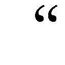
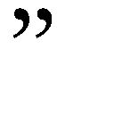
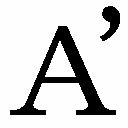

| 批評家の手帖 | |
| 福田 恆存 & Tsuneari Fukuda | |
| (2014) | |
英語版「批評家の手帖（Notes of A Critic）」福田恆存著 中村保男英譯
はじめに
本書は、日本語により言語の本質に迫らうとしたものであり、著者福田恆存の言語に關する竝々ならぬ深みにまで達した思索の歩みを開示してくれる。英譯者中村保男氏が、その内容の普遍的であることから、歐米人にも理解されようと英語に譯することを思ひたつたのは著者福田恒存師生前のことで、内々の承諾を受けてゐたものである。日本の作家も採上げられ、日本特有の私小説も話題にしてゐることから、多少とも日本文學の海外への紹介にもならう。
原著書は昭和三十五年（1960）に上梓されたが、この私家版としての英譯本が印刷されたのはそれから四十年後の平成十二年（2000）である。それを、許諾を得て平成二十二年（2010）から國語問題協議會の電網に月に何篇かづつ掲載させていただいてゐたが、電網からはづれることになつて、電子書籍への移行となつたものである。
英語の譯文に加へて、その日本語本文も載せたが、電子書籍化にあたつて、横書きにしたことをお許しいただきたい。
本書の公開にあたつては、福田敦江夫人、福田逸氏、および中村周子夫人より掲載の許諾をいただいたことに感謝申し上げる。
平成二十六年七月
谷田貝 常夫
Foreword
Many Japanese books have been translated and published abroad so far. But most of them are novels, or essays on things Japanese, and only a few full-fledged critical writings on a universal theme have appeared in English versions.
It is true that Japan has been chiefly on the receiving side of not only technology and new products but also many kinds of literature such as novels, plays, and critical works. I as a Japanese, think that Japan must also be an actively transmitting country in as many fields as possible. And one of the fields is literary speculation, one example of which is this work.
Its original title ( translated into English ) is Notes of A Critic，with the subtitle Literary Reflections on The Functions of Words. And the author begins the book with a startling statement that there is nothing certain in this world, and ends it with a reminder that no works of art can be made perfect.
In between he discusses such topics as how reality comes to imitate language; how the only thing that exists is relationship; how words indicate things at the same time as they themselves are things; how the novelist hides himself in his novels when what his readers really want is to hear his voice; how the main characters in Chekhov's play The Three Sisters only interpret themselves in their utterances while in Shakespeare's plays all the characters except the hero cooperate with him to make him the centre of the drama.
While discussing those and other topics, the author cites examples from Greek Sophists, Socrates, Plato, Thomas De Quincey, and such Japanese novelists as Soseki and Futabatei. Those novelists may be unknown to readers outside Japan, but the author of this book treats them in such a manner that no background knowledge is required, because the topics concerning them is about " funniness" or drollery of the way they depict the characters or situations in their novels.
Thus humour, irony, and dissimulation become one of the main themes of this book which is indeed a many-faceted body consisting of as many as 283 short sections. However, these sections, or notes as the author calls them, often run in a continuous flow, making the whole book a more or less consistent series of discourses rather than a mere collection of numerous fragments.
Probably the most important topics is the one concerning the relationship between words and our own selves.
In short, the whole book is Mr. Fukuda's lucid mental exercises through the maze of words, asking and answering many original questions on his way. He himself confirms this in his own comment which appears at the end of his complete works:
Linguistic philosophy is a field of study about language, not about words themselves. Words cannot be the subject of any study or learning. If someone asks you what a word is and you open your dictionary, you find that words are meaningful sounds emitted by people. This definition is not wrong, but the real shape of words does not become apparent through it. The definition sounds like a charade which brings only disappointment. If we are going to be disappointed anyway, it would be much better to learn that a word is a word or it is something you are so familiar with, as Dｒ Johnson said. In short, "What is a ｗｏｒｄ ?" is an unanswerable question.
The content of the philosophy of language and the contents of all the dictionaries are other people's words after all. For those who consult a dictionary, words remain forever the words or utterances of others. If we want to explain words by using words, we must set up some frame and then confine words within it. Words can stabilize themselves only when we use technical terms or other people's words. If we do not like them, we must resort to the natural language which changes its meanings according to the context. That "language" is your own words, your own utterances.
These were the thoughts that were in my mind when I wroteNotes of a Critic. The result, as you see, is my going back and forth between two doors, at one of which stand the things that can be uttered in the form of words and at the other there are the things which are unutterable by words. Thus, shuttling to and fro, I kept mumbling, "That is not the way it really is, no; but nor is this the way it is either", and the result of it all is just a trace of my incessant movement during which I did nothing much more than voraciously savouring the pleasure of the very process of writing one section after another.
The last part of the above quotation from the author's own commentary, I think, comes from his modesty, but at the same time it also is the expression of one of his beliefs that one must enjoy the process of doing something rather than trying too hard to reach the conclusion.
Anyway, the readers of this book may be induced to reconsider what they have taken for granted not only about the nature of language or words but also about the relationship between a speaker and his words.
I chose Notes of A Critic for my first translation of Fukuda's books on account of its variety of topics and their surprising content which takes us far beyond the world of ordinary speech.
Fukuda Tsuneari, the author, was born in Tokyo, in 1912. He began his literary career as a critic of both Japanese and Western literature, but his activity was not confined to literature and extended to politics particularly during the Cold War. He defended the free world against Communism. His thoughts, however, rarely left the domain of literature, although he emphasized the need to separate literature from politics.
He, in the role of a dramatist, wrote more than ten plays and translated Shakespeare's major plays and directed the staging of many of them. The English works he translated include those of T. S. Eliot, D. H. Lawrence, G. K. Chesterton, Ernest Hemingway ( The Old Man and the Sea ) etc..
He is also known as the leader of the movement opposing the government-enforced reform of the Japanese language.
All in all, he was one of the Modern Japanese Renaissance men who did not limit themselves to a single role. I hope that he will be known as such ( and as more ) outside as well as inside Japan. When he died in1996, he was a member of Japan Art Academy.
2000
Nakamura Yasuo
前 書
中村 保男
日本語の本が多數飜譯され海外に向けて出版されてきた。しかし、そのほとんどは小説か日本に關する隨筆で、普遍的な主題を採上げたまつたうな批評文が英語版で出てゐるのはごく一部である。
日本が技術や新製品ばかりでなく、小説や演劇、批評文といつた文學の面でも、多くが受け手に廻つてきたことは事實である。一日本人として私中村は、日本が多彩な分野で、積極的に發信する國であるべきだと考へてゐる。そのやうな分野の一つは文學的思索であり、この作品がその一例である。
本書の原題は「批評家の手帖」、副題は「言葉の機能に關する文學的考察」である。著者福田恆存はまことに驚嘆すべき言辭でこの本を書きはじめる、確かなものはこの世に一つもないと言ひ、そして、藝術に完成はありえないと言ふ警世句で本を閉ぢる。
始終の間に筆者が論じてゐるのは、實在は言語を模倣する、存在するものは關係（函數）のみである、言葉は物を指示すると同時に言葉自體が物である、小説家は讀者が本當に聞きたいのは小説家の聲だと願つてゐるその時に、自分の小説に身を隱してしまふ、チェーホフ劇「三人姉妹」の主役達は臺詞の中で自己解釋をしてゐるだけなのに、シェイクスピアの芝居にあつては、主人公以外の俳優すべてが、主人公を芝居の中心に据ゑようとして協力を惜しまない、と言つた主題についてである。
あれやこれやの論を展開する間に、筆者は、ギリシャの詭辯家、ソクラテス、プラトン、シェイクスピア、トマス・ド・クィンシーを、さらには漱石、二葉亭四迷といつた日本の小説家を引合に出す。この日本人作家は日本の外では知られてゐなからうが、本書の筆者が背景知識不要で扱つてゐるのは、漱石、二葉亭にかかはる主たる論題が、二人の小説中で性格または状況について描寫してゐる「をかしみ」乃至滑稽にあるからである。
從つて、をかしみや反語、おとぼけも主題の一つになつてゐて、二百八十三の斷章からなる本書の多面體的性格を示してゐる。とは言へ、筆者が短章とか覺えと呼んではゐても、そこには連續する流れがあつて、本書を、多數の斷篇をただ集めただけのものではなく、多少なりとも首尾一貫した論述作品としてゐる。
おそらく、最も大切な論題は、言葉と我々自身との關係であらう。
煎じ詰めると、本書全體は、多くの獨創的な質問で問ひ掛けたり、それに答へたりしながら言葉といふ迷路を歩む福田恒存氏の、明晰なる知的運動なのである。そのことは、福田氏自身が自分の全集の最後で明確に言及してゐる。
言語哲學は言語についての學であつて、言葉そのものについて考へる學ではない。言葉は學問の對象にはならない。もし「言葉」といふ言葉の意味は何かと訊かれ、手もとの辭書を引くとする、それには「人の發する音聲で意味をもつたもの」とある。なるほどそれも間違ひではないが、「言葉」といふものの姿が髣髴として來ない、なんとなく謎々あそびの答へのやうで拍子抜けがする、同じ拍子抜けさせられるなら、いつそ「言葉」と開き直つて答へてくれればいい。いや、それよりはジョンソン博士の顰みに倣つて「皆さん御存じのもの」とやつてくれた方がありがたい。要するに、「言葉」の意味は辭書によつては得られない。
言語哲學も辭書もつまりは他人の言葉でしかない、それに相談する者にとつては、つひに他人の言葉に過ぎず、どこまでも他人のせりふに止る。つまり言葉をもつて言葉を説明するためには、何かそこに特別の枠を設けて、言葉をその中に圍つておかねばならない、專門用語、つまりは他人の言葉をもつて、はじめて言葉は「安定」しうるのだ。もしそれが厭なら、その時々に應じて意味が違つて來る自然言語に、つまり自分の言葉、自分のせりふに心中立てするがよい。
さう思つて書いたのが「批評家の手帖」である。その結果、言葉で言ひ表はせることと、言葉では言ひ表はせぬことと、その二つの戸口の間をまるでお百度でも蹈むやうにして、ああでもない、かうでもないと呟きながら、往き來を重ね、ただその快を貪るだけに終つてしまつた。
著者自身が書いた文章からの上記引用の中で最後の部分は、著者の愼ましやかさの表はれと思へるが、同時に著者の信念の現はれでもあつて、人は、懸命に結論に到達しようとするよりは、何かをなさんとするその過程を樂しむべきだとする。
いづれにせよ、本書を讀む者は、言語や言葉の役割ばかりでなく、語り手と語り手自身の言葉との關係について當然と思ひ込んでゐたことを再考するやうになるだらう。
私が福田先生の著作を飜譯するにあたり最初に「批評家の手帖」を採上げたのは、論題の多樣であることと、通常考へてゐる言語世界を遙かに越えた世界にわれわれを導いてくれる、意想外の内容をそなへてゐるためである。
著者福田恆存は大正元年（1912）に東京で生れ、文藝的經歴は最初、日本文學と西歐文學雙方の批評家であつたが、以後の活動は文學に限られることはなく、殊に冷戰中の政治にも擴がつていつた。とは言へ、福田先生の考察は文學の領域から全く離れたわけではなく、文學を政治から分離させるべき必要のあることを強調してゐる。
演劇人としては、十以上の芝居を書いたし、シェイクスピアの主要な演劇を飜譯し、その大部分を舞臺に載せ、演出してゐる。英語から譯した著作には、T.S.エリオット、D.H.ロレンス、G.K.チェスタトン、アーネスト・ヘミングウエイ（老人と海）等がある。
福田先生が廣く世に知られてゐるのは、政府による強制的な國語改造に反對する運動の主導者としてである。
總括して言ふと福田恒存先生は、自分を一つだけの役割に閉ぢ込めたりはしない、近代日本ルネッサンス人の一人である。私としては、福田恒存先生が日本國内ばかりでなく、海外で廣く知られることを願つてゐる。平成八年（1996）に亡くなつた時、福田恒存先生は日本學術會員の一員であつた。
平成十二年 英語原文－中村 保男（譯 谷田貝常夫）
Words, Novels, and Drama
Notes of a Critic
Literary Reflections on the Functions of Words
Author:Fukuda Tsuneari
Translator:Nakamura Yasuo
『批評家の手帖』
──言葉の機能に關する文學的考察
福田恆存著
１
There is nothing certain in this world. Probably that is why people speak and act with assurance and certainty. At least they prefer to do so. In short, they seek to dominate others with their words and deeds. Only then ─ through the process of this domination ─ do things which have been uncertain become certain.
一
確かなものは一つもない。おそらくそのためであらう、人は確信をもつて語り、確信をもつて行ふ。少くともさうすることを好む。つまり、言葉をもつて、あるいは行動によつて、他人を支配しようと欲する。その支配の過程を通じて、未確定なものが初めて確定的になる。
２
It is not true that anything certain has existed from the beginning; all certainties are merely what people have wanted to exist and then have created. However, those who wanted and created certainties never say that they have done so, but talk as if these things have existed from the beginning. They themselves actually believe it. If they didn't, how could they say anything or commit themselves to any action?
二
初めから確かなものがあるのではなく、それは必ず人が欲して造りあげたものだ。だが、それを欲して造りあげようとする人は、決してさうは言はない。それが初めから存在してゐたやうに言ふ。事實、そのやうに思つてゐる。さう思ひこまねば、何も言へぬし、何も行へぬであらう。
３
And yet, to what extent are we aware that this act of creating certainties out of a reality which has nothing certain in it only amounts, in terms of both motivation and causation, to one's domination of others. This is not to say whether such domination is good or bad, because no one can do away with speaking or acting, practically speaking. Therefore, the act of dominating others is not essentially a matter of good or bad. To live is to dominate or to be dominated. That is unavoidable. The question is: to what extent are we aware of this?
三
それにしても、一つとして確かなもののない現實を材料にして、確かなものを造りあげる行爲が、動機論的にも結果論的にも、他人を支配することしか意味しないといふことに、私たちはどこまで氣づいてゐるだらうか。私はそのことの善し悪しを言つてゐるのではない。なぜなら、何も語らず、何も行はずにすませることは誰にも出來ないからだ。したがつて、他人を支配することは、本質的には善悪の問題ではない。生きるといふことは支配し支配されるといふことなのだ。それでいい。ただ私たちがどこまでそのことに氣づいてゐるか、そこに問題がある。
４
One might say that he, and everyone else, is aware of it. Surely he will say "I know all about it, but still I speak and act with full assurance and certainty occasionally. That is all there is to it." But, is that really so? If he is right, then why is it that, looking around, I find among people so few expressions of humour or, for that matter, of personal tribulation?
四
そんなことは誰にしても氣づいてゐると人は言ふかもしれない。それは百も承知のうへで、時に確信に満ちて語り、時に確信に満ちて行ふだけだと言ふにちがひない。本當にさうだらうか。周圍を見まはしたところ、それにしては、あまりにユーモアが無さすぎる。あるいは苦澁が無さすぎる。
５
The only certainty in a world where there is nothing certain is that there is nothing certain there. If it is certain that there is nothing certain, then scepticism is impossible. If fully confident dogmatists are pretending ignorance of the conclusion that there is nothing certain in this world, it must be said that sceptics, too, are pretending ignorance of that conclusion that at least one thing is certain ─ that is, that there is no thing certain in this world.
五
確かなものが一つもない世界で唯一の確かなことは、その確かなものが一つもないといふことだけだ。確かなものが一つもないといふことが確かなら、懐疑主義は成りたたぬ。確信に満ちた判斷が、確かなものは一つもないといふ判斷の存在を知りながら知らぬふりをしてゐるのだとすれば、懐疑圭義もまた、確かなものは一つもないといふことだけは確かだといふ判斷の存在に氣づかぬふりをしてゐると言はねばならない。
６
In the previous section I employed the word thing in two different senses: thing in the clause at least one thing is certain concerns our judgment, and thing in the phrase no thing certain refers to reality. All sophistry arises from ignoring this difference between dimensions. Such a paradox as "Achilles and the Tortoise" as well as the statement "the flying arrow is stationary," is based on a confusion of dimensions.
六
確かなものは一つもないといふこと、私はさう書いたが、この「もの」は實在を示す言葉であり、「こと」は判斷に關はる言葉である。この次元の差を無視することから、あらゆる詭辯が發生する。「アキレスと龜」の話も「動かぬ矢」の話も、すべて次元の混同に基づくものである。
７
Sophists in ancient Greece utilized this difference between the dimension of reality and that of judgment and, by deliberately confusing them, played with words. How was this possible? Because words point to both dimensions: they not only refer to reality but also concern our judgement.
七
ギリシアの詭辯家たちはこの實在と判斷との次元の差を利用し、意識的にそれを混同することによつて、言葉を弄んだ。なぜそれが出來たかといへば、言葉は兩方に相渉るものだからである。それは實在を示すと同時に判斷にも關る。「山」とか「水」とか言へば、それは實在を示してゐる。「美しい」とか「嘘」とか言へば、その實在にたいする私たちの判斷を示してゐる。
８
Generally it is assumed that the word mountain or water refers to reality while beautiful or false is about our judgment on such reality.
However, words cannot always have such a clear-cut realm of reference as the examples shown above. On the contrary, a word is always used to point to both realms at the same time: mountain or water is also an expression of our judgment, while beautiful or false also describes reality. Now, do we know this as well as the Greek sophists did two thousand years ago?
八
しかし、言葉はさういふふうにつねに分擔領域が定つてゐるわけではない。その反對に、一つ言葉がつねに兩者にまたがつてゐる。すなはち「山」や「水」は私たちの判斷に關つてゐるのであり、「美しい」や「嘘」もまた實在を示してゐるのである。そのことを私たちは二千年前の詭辯家たちほどに承知してゐるだらうか。
９
Language's two-fold function to denote both reality and our judgment implies that there can be neither words which refer only to pure reality without involving our judgment nor words which refer to pure judgment without including reality in the sentence. Then, as a predicate to that we may say, in terms of epistemology, that if we cannot say anything about reality without depending on words which have such dual characteristics, then we cannot ever hope to know reality at all.
九
言葉が實在と同時に判斷を示してゐるといふこと、言ひかへれば、判斷ぬきで純粹な實在だけを示す言葉、實在を含まずに純粹な判斷だけを示す言葉、そんなものは存在しないといふことだが、それなら、その前提として認識論的にかういふことが言へる。私たちがさういふ言葉によつてしか實在について語ることが出來ないとすれば、要するに、私たちには現實を認識することが出來ないといふことになる。
10
We only talk about reality; it is impossible to talk reality. The word talk is an intransitive verb which cannot have a direct object. The act of talking is not the act of describing or representing reality, but an act of creating another reality besides the original one. Nevertheless, I must confess that I myself cannot believe this entirely. Is it not true that this new reality ─ words ─ gives us so much less a sense of reality than reality itself ? Is this because words are something inherently less real? Or have they somehow become less real over the long stretch of time in which they have been used?
十
私たちは實在について語りうるだけで、實在を語つてゐるのではない。語るといふ動詞は目的語を採りえぬはずだ。語るといふ行爲は實在を描寫したり再現したりすることではなく、その傍にもう一つ別の實在を造りあげることだ。だが、正直な話、私はさう信じきれない。このもう一つの實在、言葉、それは前の實在に比べて、いかにも實在感に乏しいではないか。言葉は本來的にさういふものなのだらうか、それともいつのまにかさうなつてしまつたのだらうか。
11
There is a word: organism. But in reality there is no organism. Only animals or plants exist. But as we go a step down the generic ladder, we notice that such things as animals and plants do not exist either. So-called plants do not exist; only pine trees, bamboo or roses exist. But if we go further down, even roses do not exist in reality any more. There are only red roses or white roses; no, even these roses cease to exist, and instead of them, there are only New Dawn and Charles Mallerin, or further down the ladder, this New Dawn and that Charles Mallerin. However closer we may make our words to reality, they will never agree with reality itself. The act of naming is the act of going away from reality. Infinitesimally approaching reality is analysis, but we can never meet reality in analysis, and at the same time we can never leave reality in synthesis.
十一
「生物」といふ言葉がある。が、「生物」なるものは實在しない。存在するのは「動物」とか「植物」とかだけである。が、かうして類概念の梯子を一段おりてみると、私たちはそんなものもまた存在しないことに氣づく。「植物」なるものは實在してゐない。存在するのは「松」や「竹」や「薔薇」だけである。が、その「薔薇」も實在してゐない。ただ「赤い薔薇」や「白い薔薇」が、いや、「ニュー・ドーン」とか「シャルル・マレラン」とかが、さらに「このニュー・ドーン」や「あのニュー・ドーン」が存在するだけで、かうして言葉をいかに實在そのものに近づけて行つても、それは永遠に實在とは一致しない。名づけるといふことは實在から離れるといふことだ。實在に無限に近づくことが分析であり、それから無限に遠ざかることが綜合であるが、分析において私たちはつひに實在と合しえないと同時に、綜合において私たちはつひに實在から離れえない。
12
The act of talking or writing is nothing but the act of jumping around freely, sometimes five steps away from reality and sometimes a hundred steps from it. Negatively, it is a kind of trickery; positively, it is an attempt to name a reality which we have not noticed before.
十二
喋つたり書いたりするといふことは、かうして時には實在から五歩はなれて、時には實在から百歩はなれて、自由にあちこち跳ねまはつて見せるといふことに過ぎない。悪くいへば、それは一種の詐術であり、良くいへば、さうすることによつて私たちがまだ氣づかなかつた實在を名づけようとすることである。
13
It is true that a thing does not exist for us unless it has been named, and the fact that a thing exists implies that we have given a name to it. But, if we give the name of rose to a certain flower, what difference does it make? If, for instance, we take up a particular emotion at a certain moment ( although it is already the first step of detachment from reality to give something the name of an emotion ) and then apply the words "I love you" to that emotion, does it really make any difference? I am afraid it does not. The man who had an unnameable emotion before he uttered these words has died, and now in place of him, a man who says "I love you" has appeared. That is all there is to it.
十三
なるほどあるものは名づけられないかぎり、私たちにとつて實在しないし、實在するといふことは、私たちがそれに名を與へてあるといふことである。が、ある花に「薔薇」といふ名を與へてみて、それでどうなるといふのか。ある瞬間の自分の感情に、いや、それを感情と名づけることがすでに實在からの離脱の第一歩だが、かりにそれを感情と呼ぶことにして、そのある瞬間の自分の感情に「お前を愛する」といふ言葉を與へてみて、それでどうなるといふのか。どうにもなりはしまい。その言葉を口に出す以前の、名づけがたい感情をもつてゐた男が死んで、その代りに「お前を愛する」といふ口をきく男が生じただけのことに過ぎない。
14
The act of giving a name to our own emotion ─ i.e. a certain mental state in which we find ourselves -- is an act of terminating that state and sentencing the emotion to death. In short, it is the act of detaching ourselves from a reality and making ourselves become another reality. If so, we can name something only when we have ceased to be that something; when it has been given a name, it disappears. The massive pile of words we see in front of us is a mere death roll, a chronicle of our dead past.
十四
自分の感情に、すなはち自分が現在さうなつてゐる心の状態に名を與へるといふことは、その状態に終止符を打つことであり、その感情に死を宣告することである。つまり、一つの實在から離れて、もう一つの別の實在になることである。さうなると、人はもうそのものではなくなつたときに、初めてそれに名を與へることが出來るのであり、名を與へることによつて、そのものは消滅するのである。私たちの前にある彪大な言葉の集積は、私たちの精神の點鬼簿であり、過去帳であるにすぎない。
15
We should not cherish the hope for new ideas or thoughts. The history of ideas is nothing other than the vestige of dissipation which each generation of our forefathers has left. It is not something that shows the balance remaining in the bank, but only the sum of withdrawals from it. And we ignore the fact that the balance of reality has been virtually reduced to zero and just gloat over the stupendous total of withdrawals. We even call this our cultural heritage. There can be no self-deception worse than this. But probably this is another kind of trickery, in fact the greatest one, belonging to language itself.
十五
新しい思想などといふものに希望を懐いてはならない。過去の思想史は私たちの父祖代々にわたる浪費の跡を物語るものなのだ。それは預金額を示すものではなくて、拂戻金額を示すものである。さうして差引残高ゼロにひとしくなつた實在をかかへこんでゐながら、私たちはそれには眼を向けず、浪費された拂戻金額欄の巨大な数字を眺めて悦に入り、それを文化遺産とさへ呼びならはしてゐる。これ以上の自己欺瞞はない。が、それもまた一つの、しかも最大の、言葉の詐術であらう。
16
It seems that all the realities including our thoughts, emotions, and desires have been given names. Actually there must be some unnamed realities, both inside and outside of ourselves, but when it comes to the matter of giving names to them, we have to make do with worn-out words. Thus, it is not language that imitates reality, as is generally supposed; rather, it is reality itself that begins to imitate language.
十六
私たちの思考、感情、慾望をも含めて、今や、あらゆる實在に名が與へられてしまつたやうな氣がする。實際はさうではなく、私たちがまだ名を與へてゐない實在が、私たち自身のうちにも、また外部にも存在するはずなのだが、いざ、それに名を與へるとなると、既に使ひ古された言葉でなんとかやりくりしなければならなくなる。言葉が實在を模倣するのではなく、實在が言葉を模倣しはじめるのだ。
17
As language has become so profuse that we are able to analyse various objects and discern their slightest differences, it seems that we can now not only readily distinguish many objects but also know our own states of mind precisely. In actuality this is far from being true, and acts of discernment become all the more difficult, because the language which can discern the slightest difference between objects A and A' forces us to adopt either A or A' and renders us unable to find any other object that is neither A nor A' inside or outside ourselves. Even if we are vaguely aware that a thing which is neither A nor A' does exist, we have not enough spiritual power or spare time to be faithful to it to the bitter end.
十七
對象をこまかく分析し、その僅かな差をも辨別しうるほどに言葉が豊富に發達するといふことは、私たちが對象をあやまたずに見わけたり、私たち自身の心の状態を正しく自覺したりするのに甚だ便利なやうでゐて、實はかへつて不便なのだ。なぜなら、Ａかかの僅かな差をも辮別しうる言葉であるだけに、そのどちらかを採らねばならず、Ａでもでもないものを自分の内外に見出しえなくなるからだ。たとへ漠然とその存在を感じてゐても、あくまでそれに心中だてするだけの氣力も餘裕も私たちにはない。
18
Standing in front of a large display of ready-made suits of all sizes and designs, we have lost too much self-confidence to assert decisively that there is not a single suit that fits us. Even if we inwardly know that there is none, we think that we ourselves are to blame for the lack of perfectly fitting attire. Consequently, we are forced to abandon ourselves, who fit neither suit A nor suit A', and buy either one or the other of them after all. In fact, we are no longer even "being forced" to do so, but now we make the choice "quite naturally" as it were. Consequently there is no procedure of abandoning ourselves. And this state of ours is not recognized by ourselves. It is more exact to say that there is no longer any self that could be abandoned. Of course, such a self does not exist only for the person himself, but may still be visible to other people. God, if nothing else, would deem this state of affairs a sorry plight.
十八
私たちはあらゆる型と大きさの既成服の陳列を前にして、自分の體に合ふ服がそこにはないと言ひきる自信を失つてゐるのだ。内心、ひそかにさう思つたところで、それなら自分の方が悪いのだと考へる。私たちはやむをえずＡもにも合はない自分を捨てて、Ａかか、どちらかの服を買つて歸る。いや、「やむをえず」といふ段階はすでに過ぎた。「ごく自然に」といふべきであらう。したがつて、そこには「自分を捨てる」といふ手續は存在しない。そんな自分には氣がつかぬのだ。いや、そんな自分は既に存在しないのだ。もちろん、彼にとつて存在しないだけで、傍目にはそれが見えるかもしれない。少くとも神はそれを不様と見るであらう。
19
We no longer care much to make ourselves look beautiful. Our greatest concern is to make sure we wear the same clothes as others do. Everyone thinks it better to wear other people's clothes than to have no clothes of his own at all and be stark-naked; and we also think it preferable to have new, fashionable clothes rather than the old ones we have been used to wearing.
十九
私たちはもはや白分を美しく見せようといふことにほとんど氣を使はなくなつてしまつた。最大の關心事は、他人と同じ服を著てゐるかどうかといふことである。白分の服がないよりは、すなはち裸でゐるよりは、まだ他人の服の方がいい、著なれた古服よりは流行の新しい服の方がいい、誰しもさう考へる。
20
In Macbeth, Shakespeare uses many metaphors for clothing.
The thane of Cawdor lives: why do you dress me
In borrowed robes? [1-3]
New honours come upon him,
Like our strange garments, cleave not to their mould
But with the aid of use. [1-3]
Lest our old robes sit easier than our new! [2-4]
Now does he feel his title
Hang loose about him, like a giant's robe
Upon a dwarfish thief? [5-2]
二十
「マクベス」のなかには衣裳の比喩が度々出てくる。
コーダの領主はまだ存命してゐる。どうしてそんな借著を著せようとなさるのだ？
新しく與へられた榮讐は、著なれぬ衣同様、しばらくは身につかぬものだ。
新しい服のはうが古いのより著ごこちが悪いとなつたら事だ！
王とは名ばかり、それもいつ自分の肩からずり落ちることか、
巨人の衣裳を盗んで著用におよんだ小人のみじめさ、今となつては人ごとではあるまい。
21
Indeed, now in our own time we feel our titles hang loose about us. We are talking about humanism, democracy, love, spirit, nihilism and many other words like "a dwarfish thief" who has stolen "a giant's robe". I am not saying that Europeans and Americans are giants, and that we are dwarfish thieves. Even in Europe and America some people are giants and others are dwarfish. When the former gives a name to an aspect of reality, the latter begins to abuse it. Thus both hurt themselves and each other. In short, the dwarfish ones are dominated by words, and most of the splendid or solemn words which dominate them, or to put it in another way, which they now wear with as much ease as if the words were their own, were first born in the giant's head and not cut to fit the dwarves.
二十一
まつたく今となつては人ごとではない。私たちは「ヒューマニズム」とか「デモクラシー」とか「愛」とか「精神」とか「虚無」とか、その他等々の言葉を「巨人」の衣裳を盗んで著用におよんだ「小人」のやうに喋りまくつてゐる。なにも西洋人が「巨人」で私たちが「小人」だといふのではない。西洋においても「巨人」と「小人」との別はある。前者がある實在に名を與へると、後者がそれを濫用しはじめる。さうしてたがひに自他を傷つけるのだ。つまり、「小人」は言葉に支配されるのだが、今日、彼等を支配してゐる、言ひかへれば、彼等が今では自分の衣のやうにいかにも氣やすげに著用してゐる、美々しい、あるいは嚴めしい言葉の大部分は、まづ最初に「巨人」の頭に宿つたものであり、彼等の體に合ふやうに裁斷されたものだつた。
22
There are some words that some people had better not use or are not entitled to use. If they use them, things become more confused, simply torturing their own and others' minds, and this brings no benefit to anyone. Instead of using such words, why can we not use words a little more suitable for ourselves? At least this is the kind of thing I dwell upon most of the time nowadays.
二十二
人によつては、そんな言葉は使はないはうがいい言葉、あるいは使ふ資格のない言葉といふものがある。それを使ふことによつて、ますます譯が解らなくなり、ただ自他を苦しめるだけで、一向、誰の得にもならぬ言葉といふものがある。私たちはもう少し自分の身についた言葉で喋るやうになれないものか。少くとも私はこの頃そんなことばかり考へるやうになつた。
23
The reason why I do so is probably that I went through so much trouble to translate Shakespeare's plays over the past few years. Translation is not only putting the words of a foreign language into those of the mother tongue, but also turning other people's language into one's own. In translation, words come not from inside of ourselves, but always from outside. At least that is what I often feel now, although I wonder if that is actually possible and exactly what differences there are between words coming from inside and those coming from outside. Because I feel it so often that there are more occasions now when I have to measure things as if they were other people's bodies ─ the things whose location, shape, and weight I was once unable to measure just like my own body. Here, too, resides the danger of schizophrenia. Dwelling too much on words is not healthy. If I persist in it, even my own words, like my clothes, will eventually desert my body. But it might be just as well to feel keenly that modern times are such that people living in them assume that language ─ like their own body ─ is their own, whereas in reality, it is outside them ─ if modern times is really such an age. Of course, I should have avoided using the phrase signifying people in modern times as if I were not one of them. For me, translating Shakespeare into Japanese was a good experience and it still is. I did not feel so strongly when I translated D. H. Lawrence or T. S. Eliot. Have I grown? Or weakened? Or, are Shakespeare's words a giant's robe?
二十三
原因はおそらくここ數年シェイクスピアの飜譯に苦しめられたためであらう。飜譯といふのは、他國語を自國語に、他人の言葉を自分の言葉になほす仕事である。飜譯においては、言葉が自分の内部からではなく、つねに外部からやつてくる。事實、そんなことがあるものかないものか、兩者にどんな違ひがあるか、その邊のことははつきり解らぬのだが、とにかく始終そんな氣がしてゐる。そのため、かつては自分の肉體のやうに位置も形状も重さも測れなかつたものが、今では他人の肉體のやうにそれを測らねばならぬ機會が多くなつた。そこにもまた分裂病の危險がある。言葉にこだはりすぎるのはよくない。そんなことをしてゐると、自分の言葉まで自分の肉體から離れて行つてしまひかねない。しかし、もし現代が、言葉は自分の肉體のやうに自分のものだと思ひこんでゐながら、事實は全くその外にあるといふやうな、さういふ時代だとしたら、それを身にしみて感じるのも悪くはあるまい。「現代が...」などと人のことは言ふまい。私にとつて、シェイクスピア飜譯はいい經驗だつたし、今もさうである。ロレンスやエリオットの場合、それほどには感じなかつた。私が成長したのか、いや、衰弱したのか、それともシェイクスピアの言葉が「巨人の衣裳」なのか。
24
If language is something that misses realities by the very act of giving names to them, it can be said that the purpose of translation is to treat a foreign language as a set of realities and then give native names to them. By this definition, I am not emphasising the worthiness of translation. The first part of the first sentence in this section is grammatically a subordinate clause, but in this context it is the main clause. To make a long story short, even within our own language, we are only translating realities when we use our own words. Thus all words are nothing but metaphors which indirectly indicate realities by bypassing around them.
二十四
ある實在に名を與へることによつてそれを逃してしまふものが言葉であるとすれば、その言葉を實在としてそれに他國語の名を與へるといふのが飜譯の仕事である。さう定義することによつて、私は飜譯の意義を強調しようといふのではない。右の文章の前半は文法的には從屬文であるが、文脈的には主文をなすものである。手つとり早く言へば、母國語においても、言葉といふものは實在にたいして飜譯の關係にしかないといふことだ。そしてまた、あらゆる言葉が實在を迂囘して間接に指示する比喩でしかない。
25
We talk of direct or verbatim translation and indirect or free translation, but except in the formalistic English-Japanese translation tests of the university entrance examinations, there cannot be two different methods of translation in general practise. If language is a body of metaphors, then translation is a metaphor for metaphors. A certain Japanese translator of Shakespeare's plays said in his postscript: "As is widely known, in Shakespeare's works, individual words and images are important. Excessively wanton, free translation ruins Shakespeare's original. Therefore I retained even the words which are not ripe enough in our language. What matters is the wording itself." This translator assumes that Shakespeare's wording can be retained in Japanese. His intention is to make a so-called direct translation, which is virtually the same as substituting a Japanese word listed in the dictionaries for the original word. Or at least he assumes that there are Japanese words which correspond to individual English words. For him, desk would be the same as tsukue ( a Japanese word for desk ) and nothing else. Is there any difference between his assumption about linguistic correspondence and the assumption that the wooden stand we use for writing is entirely the same as the word tsukue? If we put it in the opposite way, how much difference is there between the assumption that the wooden stand is the same as the word tsukue and the assumption that desk is the same as tsukue?
二十五
飜譯の場合、よく直譯だの意譯だのといふ言葉が用ゐられるが、受験英語ならとにかく、一般の飜譯において二様の方法が存在するわけがない。言葉が比喩であるとすれば、飜譯は比喩のまた比喩である。あるシェイクスピアの譯者のあとがきにこんな文句があつた。「周知のやうに、シェイクスピアでは一つ一つの言葉、イメージが大切なのである。極端に奔放な意譯は、かへつてシェイクスピアを害ふものである。したがつて、われわれの言葉には熟さぬものでも、さしつかへない限り、シェイクスピアの言葉使ひを残しておいた。その言ひ方が大切なのである。」この人はシェイクスピアの言葉づかひが日本語で殘せると思つてゐる。その意圖するところは、いはゆる直譯であり、それは辭書の言葉をそのまま置きかへることである。さうではないにしても、中學生のやうに、英語の單語の一つ一つに相當するそれぞれの日本語の單語があると思ひこんでゐるのである。彼にとつてdeskはそのまま机なのだ。そのことと、私たちが書きものに用ゐる木の臺がそのまま机といふ言葉と一致すると思ひこんでゐるのと、どれほどの違ひがあるか。逆に言つてもいい、その木の臺が机といふ言葉と一致すると思ひこんでゐるのと、deskがそのまま机だと思ひこんでゐるのと、どれほどの違ひがあるか。
26
Such scepticism as I am propounding here is very remote from the sense of trust in words evident in the dogma: "In the beginning was the Word, and the Word was with God, and the Word was God." However, I am not going to say that this dogma is a fallacy. I just wish to point out that it is not right to believe in the efficacy of words without putting faith in words themselves. We the Japanese have no such faith from the very beginning. Even in Europe and America, it must be scanty or rare now.
二十六
かういふ私の懐疑論は「太初に言あり、言は神と偕にあり、言は神なりき」といふ獨斷に見られる言葉への信頼感からは程遠い。だが、私はこの獨斷が誤謬だとは言はない。ただその信仰がないのに、その靈験だけを信じることの非を指摘するだけだ。私たち日本人にはもとよりその信仰がない。西洋でも、今日、それは稀薄であらう。
27
In Letter on Humanism, Martin Heidegger says;
... But if the truth of Being has become thought-provoking for thinking, then reflection on the essence of language must also attain a different rank. It can no longer be a mere philosophy of language. That is the only reason Being and Time ( section 34 ) contains a reference to the essential dimension of language and touches upon the simple question as to what mode of Being language as language in any given case has. The widely and rapidly spreading devastation of language not only undermines aesthetic and moral responsibility in every use of language; it arises from a threat to the essence of humanity....
[ Translated from German into English by Frank A. Campzzi and I. Glenn Grey.]
二十七
ハイデッガーは「ヒューマニズムについて」のなかで次のやうに述べてゐる。
しかし存在の眞理が思索にとつて思索できるやうになれば、言葉の本質についての意識も今とは違つた地位に到達するに違ひありません。それはもはや單なる言語哲學ではないはずです。それだからこそ「存在と時間」（第三十四節）は言語の本質様相についての暗示を含み、そして存在のいかなる様式において、言葉がいつも言葉としてあるか、といふ單純な問ひに觸れてゐるのです。至るところで急速に擴つて行く言葉の荒廢は、あらゆる言語使用における美的・道徳的責任を食ひつくすばかりではありません。さらに言葉の荒廢は人間の本質の危機から來てをります。
28
The essence of language which Heidegger mentions here is quite West-European; it has an entirely different basis from that of Greek thought which associated words with technical skills. For Heidegger, the essence of language is that it is "a home for dwelling in the truth of Being". It is no use trying to polish up the technique. If we only care for what is commonly called "the well-tended use of language," philosophers should stop using the natural language we use generally and leave everything to technical terminology and expect more communality and exactitude which serve society's practical purposes much better; nay, because that is still not enough, philosophers should entirely depend on mathematical logic, through which they could know and talk ad infinitum.
二十八
ここに語られてゐる言葉の本質はあくまで西歐的なものであり、言葉を技術と結びつけるギリシア的な考へ方とは根柢を異にする。ハイデッガーにとつては、言葉の本質とは「存在の眞理の棲家」なのである。技術を磨いてもだめなのだ。「手入れの行きとどいた言語使用」といふことなら、哲學者は私たちが用ゐてゐる自然言語の採用などやめて、もつばら公共性と嚴密性とを期する術語に、いや、いつそのこと記號論理學にすべてを委ねたはうがいい。さうすることによつて、人は無限に知りうるであらうし、無限に語りうるであらう。
29
Why do we talk at all when we have nothing certain to talk about? In addition, why do we do it with so much assurance and certainty? How can we sound so self-assured and certain in the manner of our speech and writing when we are so incoherent and full of self-delusion in our actual daily life and actions, leading a life entirely devoid of self-confidence, the lack of which comes from our awareness of the sorry state in which we find ourselves. Furthermore, why does our inward hesitation not surface when we are so hesitant even as we write?
二十九
語りうる確かなものは何ひとつないのに、どうして私たちは語るのか。しかも、なぜ確信をこめて語るのか。私たちは自分の生活や行動においていかに支離滅裂であり迷妄に満ちてゐようとも、そしてそのことをよく知つてゐて一向に自信のない日々を送つてゐても、喋られ書かれた言葉においては、どうして確信的になるのか。のみならず、書くときにさへ迷つてゐるものに、迷ひながら書かれたものに、どうしてその迷ひが出ないのか。
30
The reason for this is that we regard language only as an instrument to control nature and people. To master language is to master nature and other people. As in battles or controversies, so in love or understanding, he who limits the "opponent" by language wins the game. But, in order to escape from the error of this misappropriation, do we have to depend on language once again? Or do we have to use other means?
三十
要するに、私たちは言葉を自然や他人を支配する道具としてしか考へてゐないからだ。言葉を支配することは、すなはち自然や他人を支配することになる。戰ひや論爭においてと同様、愛や理解においても、言葉によつて相手を限定した方が勝ちなのだ。だが、さういふ間違ひから脱出するために、やはり私たちは言葉に頼らねばならないのだらうか。それとも他の方法を採らなければならないのだらうか。
31
Heidegger says in another paragraph of the writing cited earlier; ─
... Before he speaks man must first let himself be claimed again by Being, taking the risk that under this claim he will seldom have much to say. Only thus will the preciousness of its essence be once more bestowed upon the word, and upon man a home for dwelling in the truth of Being....
三十一
ハイデッガーはかう書いてゐる。
人間は話す前にまづ存在によつて、話すべき何ものももつてゐないのではないかと問はれる窮地に立たされなくてはなりません。そのやうにしてこそ、言葉にその本質の貴重さが再び贈られ、人間に、存在の眞理の中に棲むための住居が贈られるのです。
32
In an essay, titled What Is Literature?, Jean-Paul Sartre talks about the difference between the roles of words in poetry and prose. He regards the words of poetry as "things in and of themselves", or reality in fact. For example, they are on the same level as a concrete object such as roses or desks. I have just used the words roses and desks, but I merely used them to denote the objects designated by those words, and so they are not the objects themselves, of course, nor are they on the same level as the objects. That is because they are words written in prose. In prose, as soon as words begin to exist, they themselves disappear in order to lead the reader to the world of reality they have denoted. But in poetry, words stand in the reader's way, blocking him from reality and attracting his attention to their own forms. The reader has to experience and taste the words themselves as something independent from the real world they represent, and therefore, as being on the same level and having the same status as the real world.
三十二
サルトルは「書くとはどういふことか」といふ論文のなかで、詩と散文とにおける言葉の役割の相違について語つてゐる。詩においては、言葉はそれ自身、一つの實在であるといふ。たとへば、薔薇や机のやうな實際の事物と同列のものだといふ。今、私は薔薇や机といふ言葉を用ゐたが、私はただそれらをそれらの言葉によつて表される事物を指し示すために用ゐただけであつて、それらは事物そのものでないことはもちろん、それと同列のものでもない。それらは散文の言葉であるからだ。散文においては、言葉は存在すると同時に、ただちにそれ自身の姿を消して、それが指示した現實の世界に讀者を導く。が、詩においては、言葉は現實と讀者との間に立ちはだかり、それ自身の姿に讀者の注意を求める。讀者は言葉を、それが示してゐる現實の世界とは別個のそれ自身獨立した、したがつて現實の世界と同列、同資格のものとして、經驗し味ははねばならない。
33
What Sartre says here is nothing new. He is just giving us the rudiments of a quite formal "introduction" to literature. Therefore, it is only one of the relativistic frameworks which has been set as a convention to enable us to understand the difference between the functions of words in poetry and prose. Sartre is only making use of their relative definitions as a necessary procedure or instrument to achieve his purpose. This is quite important, and important in two ways : one for what Sartre is trying to say and the other for what am going to say.
三十三
サルトルは別に新しいことを言つてゐるのではない。ごく常識的な文學概論の初歩を述べてゐるに過ぎない。したがつて、それは詩と散文における言葉の在り方の相違を理解するために、いちわう、約束として設けられた相對的な枠の一つでしかない。サルトルは彼の目ざす目的を達成するのに必要な手續、あるいは道具として、その相對的な定義を利用してゐるだけの話である。このことはかなり重要だ。サルトルが言つてゐることのためにも、また私が言はうとしてゐることのためにも、それは同様に大事なことなのである。
34
Relations between things are also things. If a rose and a desk are, each of them, things, the relation between a rose and a desk is also a thing. For instance, the sentence "A rose is on a desk" denotes a thing, too. If a word is language, a sentence or a combination of words is language, too. If an arrow is a thing, its process of flying is also a thing. It is not only a stationary arrow that is a thing : a flying arrow, too, cannot help but be a thing.
三十四
事物と事物との關係もまた事物である。薔薇や机がそれぞれ一個の事物であるなら、薔薇と机との關係もまた一つの事物である。たとへば「薔薇が机の上にある」といふことも一つの事物を示してゐる。單語も言葉であるなら、その結合からなる文章もまた言葉である。矢が一個の事物であるなら、「矢が飛ぶ」といふことも一つの事物である。「動かぬ矢」が事物であつて、「飛ぶ矢」が事物でないわけがない。
35
An arrow which is made of a bamboo stick, feathers and a barb─composite of three parts in fact─ is a thing. At the same time, the act of fitting this composite─ an arrow─ to another composite─ a how, and finally the act of shooting done by still another composite─ a human being─ is a thing. And all this represents the composite of three parts : arrow, bow, and human being. It is true that in this particular act the special kinetic action of shooting is included, but even the arrow and how include the act of manufacturing. They are the outcome of this act of manufacturing, or in a word, products. To confuse the act of manufacturing with the product which is its outcome, and the act of shooting with the product which is used for that act─ in other words, to confuse an event with a physical object─ is that not the same as to commit the error of the Greek Sophists, or more exactly, to follow the example of their trickery? This may be so, but the age of the Sophists was not the first time when human beings foresaw that events and objects are subjects on the same level after all. According to Nietzsche, this foresight probably dates back to the age of the Seven Wise Men of Greece when human beings began to recognize reality for the first time in history. I think we can put it that way, since thinking about objects makes inevitable the conversion of objects into events.
三十五
竹の棒と鳥の羽根と鐵の鏃との三つの部分の結合體である矢は一個の事物である。同時に、その結合體である矢を、弓といふ別の部分の結合體につがへ、人間といふもう一つ別の部分の結合禮が射て放つといふ行爲も、またそれぞれ矢、弓、人間といふ三つの部分の結合體を示す一個の事物である。なるほど、そこには射るといふ動的な行爲が介在する。が、矢も弓もその中には製作といふ行爲が含まれてゐる。それは製作といふ行爲の結果であり、製品である。製作といふ行爲とその結果の製品とを、また射るといふ行爲とその道具の製品とを、言ひかへれば、「こと」と「もの」とを混同するのは、ギリシアの詭辯家の過ちを犯すことではないか、あるいはその詐術に倣ふことではないか。さうかもしれないが、彼等ソフィストたちの時代は、結局はその兩者が同列の對象であることを最初に豫知した時代ではなかつたか。もつともニーチェによれば、その曙は既に、おそらくは人間が現實を認識しはじめた最初の頃、すなはち古代ギリシア七賢人の時代に始るといふ。さうも言へよう、「もの」について考へるといふことは、「もの」から「こと」への轉化を必然ならしめるから。
36
It is impossible for a flying arrow not to be a thing when a stationary one is a thing. It is impossible for the event "An arrow flies" not to be a thing when a flying arrow is a thing. By the same token, it is impossible for the event "A rose is on a desk" not to he a thing when a rose on a desk is a thing. In short, what difference can there be between merely denoting a thing and describing its state? Just as a pure state not involving something does not exist, so a pure thing completely devoid of its state cannot exist. When an arrow is not flying, it rests in a quiver or lies on the ground or is grasped by a hand; in short it maintains some state or other. The human being who is not in the act of shooting, goes on breathing and pulsating; he is in a certain state anyway. In this case, it is pointless to say that an act is something ethical or social with some purpose and that it is different from a merely physiological or physical motion. Why is it pointless? Because such an objection raises another question: can there be a purely physiological or physical motion entirely devoidof ethical and social significance?
三十六
「動かぬ矢」が事物であつて、「飛ぶ矢」が事物でないわけがない。「飛ぶ矢」が事物であつて「矢が飛ぶ」といふことが事物でないわけがない。「机の上の薔薇」が事物であつて、「薔薇が机の上にある」といふことが事物でないわけがない。つまり、單に事物を指し示すことと、その状態を叙述することと、その兩者にどういふ違ひがあるのか。事物ぬきの純粋な状態などといふものが存在しないと同様に、状態を全く捨象した純然たる事物なるものは果して存在するか。そんなものは存在しない。矢は飛んでゐないときは、簸にをさまつてゐるか、地上に横たはつてゐるか、手の中にあるか、とにかくなんらかの状態を保つてゐる。射るといふ行爲をしない人間も、呼吸をし脈を打つてゐる。すなはち、ある状態のうちにある。この場合、行爲といふのは目的をもつた倫理的、社會的な行動であつて、單なる生理的、物理的な動きとは異るなどと言つてみても始らない。なぜなら、さういふ反問はさらに次のやうな反問を呼び起すからだ。倫理的、社會的な意味を全く捨象した純然たる生理的、物理的な動きなるものは果して存在するか、私たちはさう問ひかへせよう。
37
The state of something implies that the thing exists, not independently, but in relation to other things. And this relation is enveloped in infinite multiplicity which can never be fully analysed, however precise and thorough our analysis is. When a part of this multiple relationship has disappeared, we say that the thing has moved or changed. And there is nothing in this world that is not subject to such kinetic changes even for a single moment. Finally, when the thing has lost all relations with other things, we can be sure of the disappearance of the thing itself. However, this is merely relative. My death will be my disappearance, but not my family's; my family will have only changed. An individual disappears, but the whole merely changes.
三十七
ある事物の状態といふのは、事物がそれ自身獨立してではなく、他の事物との關係において存在してゐるといふことである。その關係は絶對に分析しえぬ、すなはち、いくら分析しても分析しきれぬ無限の多様性のうちにある。その多樣な關係の一部が消滅したとき、私たちはその事物が動いたと言ひ、變化したと言ふ。そして、片時といへども、さういふ動的變化を蒙らぬ事物は存在しないのだが、その事物が他との關係のすべてを喪失したとき、私たちはその事物そのものの消滅を確認する。だが、それも相對的な話に過ぎない。私の死は私の消滅ではあらうが、私の家族は消滅せず、ただ變化しただけにすぎない。個體は消滅するが、全體は變化するだけだ。
38
Thus, individuals are resolved into the whole, and existence is likewise resolved into the changes of state. So-called individuals exist in relations and are nothing other than parts maintained by relations. But, each of these so-called individuals is merely a relational body consisting of its parts. And we refer to the ultimate relational body which is composed of a number of such relational bodies, as the whole. There is only one ultimate relational body in the world. This alone can we describe as existing in this world. Hence, it follows that the only thing that exists is relationship.
三十八
それなら、個體は全體に、存在は状態の變化に解消してしまふ。いはゆる個體といふのは關係のうちにあり、關係によつて保たれる部分に過ぎない。が、その、いはゆる個體もそれを構成する部分の關係體に過ぎない。そして、それらの關係體を組合せた窮極の關係體を私たちは全體と呼ぶ。その窮極の關係體はただ一つしかない。いやしくも世に「存在する」と言ひうるものはそれだけである。それなら、在るものは關係だけである。
39
This fits in with the interpretation of nature by contemporary physics. which treats all objects in terms of functional relations and represents them by mathematical formulae. Through this procedure, we are able to understand individual objects containing within themselves unknown quantities or variables, without our knowing anything about their substance. If only the relation were defined, the process of understanding would be completed, so that we could leave the calculation of individual numerical values to worldlings. At least, so far as knowledge and its representation are concerned, when unknown quantities are replaced by known quantities. and variables by invariables, not a single new fact is added. We already know unknown quantities and are grasping variables invariably. In fact, if we leave unknown quantities and variables as they are, we can know and talk about more things in a more precise and free manner.
三十九
これは近來の物理學の自然解繹と一致する。そこでは對象はすべて函数關係によつて捉へられ、その數式によつて表される。それによつて私たちは個々の對象を、その實體については何も知ることなく、内に未知數、あるいは變數を含んだまま理解することが出來る。關係さへ規定されれば、諒解完了であつて、個々の數値の算出は俗人に任せておけばいい。少くとも、知ることとそれを表すこととに關係するかぎり、未知數が既知數に、變數が常數に置きかへられたところで、別になんの新事實をも附加しはしない。私たちは既に未知數を知つてゐるのであり、變數を不變的に捉へてゐるのである。のみならず、未知數、變數をそのままにしておいたはうが、より多く、より適確に、より自由に、知り、かつ語りうるのである。
40
In the field of natural science which grasps and controls matter, or grasps it in order to control it, the language of daily life is no longer needed. Physics has already reached that stage. Biology will follow the same path. If the science of life reaches that stage, the science of mind may some day follow suit. In fact, the probability of this development is already implied by the appearance of symbolic logic.
四十
物質を認識し支配する、あるいは支配するために認識する自然科學においては、もはや日常的な生活言語を必要としない。物理學は既にさうなつてゐる。生物學もさうなるだらう。生命の科學がそこまで行けば、精神の科學も、やがてはさうなるかもしれない。いや、既にその可能性が暗示されてゐる。記號論理學といふのがそれだ。
41
I admit that I hardly know what symbolic logic is all about in its essence. Trying to measure its location without knowing its essence is itself a kind of functional understanding. I have fallen into the traps of paradox. But my attempt to discuss language by means of language itself is, from the very beginning, a paradoxical one. Therefore, once I have admitted this as a premise, it may be said that all paradoxical statements derived from the premise must be excused. Or, taking a more fastidious attitude, perhaps I should first end my foolish attempt to explore language by means of language itself and devote my time and energy to symbolic logic which actually tries to grasp everything with mathematical formulae.
四十一
記號論理學がいかなるものか、正直の話、私はほとんどその實體を知らない。實體を知らないのに、その位置だけを測定しようとするのは、それこそ函數的理解といふべきものである。私は逆説の罠に陥つてゐる。だが、言葉を論ずるのに言葉をもつてするといふ私の試みが、そもそも初めから逆説的行爲なのである。したがつて、一度それを前提として認めた以上、それから派生する逆説的事實はすべて許さるべきだとも言へようし、また一層潔癖に、言葉を言葉によつて確めようなどといふ愚かな眞似はやめて、專ら數式によつて捕捉する記號論理學に精を出したはうがいいとも言へよう。
42
At any rate. I should not write anything about matters I do not know well, because that is the minimum and maximum purpose of these notes of mine.
四十二
いづれにせよ、よく知らぬことについて書いてはならぬ。それがこの手帖の最小にして最大の目的であるから。
43
Let me write about my own experience. When I try to ponder on something or, as I am doing now, jot down words on paper, I feel that in my brain only a tiny spot, like a pinpoint, is illuminated, all the surrounding space being steeped in utter darkness. I cannot feel more helpless than I do when I am in such a moment. It might be the same for everyone else. But I feel that, in my case, the experience is extraordinarily intense. If there is a light burning somewhere, there must he at least a little sphere of dim light on the near side of the darkness. But, for me there is almost none. The pitch-dark, uniform blackness spreads, very closely surrounding the pinpoint luminous source, which alone remains light. This is not a metaphor. I literally get into my brain and grasp the pinpoint, trying to push it right into the darkness. But the mass of darkness is, while not rock-hard, terribly resistent and it does not easily recede. Sometimes succeed in pushing it away one or two millimetres at last. Again, this is not a metaphor. Just as the moon appears only two or three centimetres across, so the distance I push it is felt to be only one or two millimetres. It never becomes larger than that. Even so, it would he all right if the sphere visible to me became larger, but actually, the darkness I have pushed has by now returned behind me, so that only the pinpoint is luminous as before. Only its position has changed.
四十三
自分の經驗について書かう。何か考へようとするとき、あるいはかうして言葉を書きつけてゐるとき、私は自分の頭の中で、ほんの針の先ほどの微かな一點しか火が點つてゐないことを、そしてその周圍は完全な暗闇に領せられてゐることを感じる。こんな心細いことはない。誰でもさうなのかもしれない。が、私の場合は特にひどいやうな氣がする。燈火があれば、暗闇のこちら側に少しは薄明の領域があつていいはずだ。だが、私にはそれがほとんどない。光源にぴつたり密接して、光源だけを殘して、一様の黒さをもつた闇が擴がつてゐる。これは比喩ではない。私は實際に自分の頭の中にはひりこみ、その小さな一點に手をかけて、それを闇の中に押し進めようとする。が、闇の塊は硬くはないが、おそろしく強靱でなかなか凹まない。やうやく一分か五厘くらゐ押せることがある。これも比喩ではない。ちやうど月の直徑が三寸か四寸に見えたりするやうに、私にはそれが一分か五厘に感じられる。決してそれ以上ではない。それだけにしても、私の見える領域が擴がつたのならいいが、さうではなくて、私が前方に押し卻けた闇はもうそのときは後方に廻つてゐて、依然として明るいのは針の先ほどの一點のみである。ただそれは場所を變へたといふだけのことでしかない。
44
However hard I try, I cannot describe this well. Let me use a metaphor. It is as if I were walking through a forest without any path. If, by changing my position, I have found a new place. I have lost the original one, and though I have moved only a short distance, now it seems I have come quite far, so that I can no longer retrace the route I was following. In recent years, I have had such experiences too often. On top of it, before I start writing, the whole forest is visible and I feel I know every part and corner of it perfectly. This too had not happened before several years ago. The I who is starting to write is standing outside the forest or hovering over it and looking down on it, thus enabling me to see the whole forest, but the act of writing is tantamount to the act of wandering through the forest on foot. That is why my field of vision is blocked.
四十四
どうもうまく言へない。比喩で話さう。それはあたかも道のない森の中を歩いてゐるやうなものだ。位置を變へることによつて新しい場所を見出せたとしても、その代りに元の場所を見失ひ、僅かしか動いてゐないはずなのに、今ではそれが隨分遠くに感じられ、辿つて來た道筋さへ逆にはもう辿れない。數年來、さういふことが多すぎる。しかも、書く前の私には、森の全體がよく見え、その隅々まで解つてゐるやうな氣がしてゐるのだ。さう感じることもまたここ數年來のことだ。書く前の私は森の外にゐて、あるいはその上空にゐて、森を見おろしてゐるからよく解るのだが、書くといふことは森の中を自分の脚で歩くことだ。だから、視界が遮られるのであらう。
45
Knowing and being are based on completely different principles. The principle of being is very simple: the same object cannot occupy two different places at the same time, and also two different objects cannot occupy the same place at the same time.
四十五
認識することと存在することとは全く別の原理に基づく。存在の原理は實に單純だ。それは同一の物質は同時に二つの場所を占めることが出來ないといふことであり、また相異る二つの物質は同時に一つの場所を占めることが出來ないといふことである。
46
We use language as an instrument for knowing, thinking and denoting. However, language which is nothing other than a means and process of knowledge, thought, and denotation does come into existence every time it is used. Since language is something that exists, we cannot speak or remember two words at the same time.
The luminous pinpoint inside my brain cannot be occupied by two words at the same time. In order to gain a new word, I have to lose an old one. This procedure is becoming increasingly difficult for me now. Is that because my power of mental concentration and endurance has weakened? Partly, yes; but probably not entirely.
四十六
私たちは認識したり思考したり指示したりするために、言葉を道具として用ゐる。だが、認識、思考、指示の手段であり過程であるに過ぎぬ言葉は、しかもそのつど存在する。言葉は存在するものである以上、私たちは同時に二つの言葉を語ることも思ひ浮べることも出來ない。私の頭の中の明るみのあの小さな點を同時に二つの單語が占據することは出來ない。新しい單語を得るためには、既に得てある單語を捨てなければならぬ。最近の私にはそれが段々難しくなつてきた。精神の集中度や持續度が弱まつたからだらうか。さうとばかりは思へない。
47
In English, the relative clause is preceded by a relative pronoun, and it is used in two ways: restrictively and continuatively. "I saw Mrs Clark who was my secretary" is an example of the former usage, and "I saw Mrs Clark, who asked me to employ her as my secretary" is an example of the latter. In the first sentence cited above, the relative clause "who was my secretary" restricts Mrs Clark, whereas in the second sentence, the relative clause cannot be said to qualify Mrs Clark restrictively. Formally it is a relative clause preceded by a relative pronoun, but in terms of content, a new idea is introduced and it forms a predicate with the relative pronoun as its subject. Therefore, "I saw Mrs Clark" and "Mrs Clark asked me to employ her as my secretary" are appositive, so that they can be put into a parallel relationship.
四十七
英語には關係代名詞によつて導かれる從属節があるが、それには歸屬的用法と繼續的用法との二つがある。I know Mrs. Clark who was my secretary.は前者であり、I saw Mrs. Clark, who asked me to be my secretary.は後者である。「私の秘書だつたクラーク夫人を知つてゐる」において、「私の秘書だつた」といふ從屬文が「クラーク夫人」を限定修飾してゐるが、後の文の「私の秘書にしてくれと頼んだ」といふ從屬文は、前と全く同一の構文だが、「クラーク夫人」を限定修飾してゐるとは言へない。形式は關係代名詞によつて導かれる從属文だが、内容から言へば、新しく想を起してその關係代名詞を主語とする述部を形成してゐる。したがつて、「私はクラーク夫人に會つた」「その夫人は私の秘書にしてくれと頼んだ」の二文が同格で重つてゐるのである。
48
So far, this is a rudimentary rule of English grammar at least as it is still taught in Japan. Now, what grammatical difference is there between the first sentence and the second one I cited? Can we not translate the second one into the Japanese equivalent of "I saw Mrs Clark who asked me to employ her as my secretary"? Is this translation not more "literary"? How about: "Upon the woman in bed who would shed tears of contrition the next morning, he stared down"? Is this not even more literary than "He stared down upon the woman in bed, who would shed tears of contrition the next morning." The difference between restrictive and continuative uses is only relative. My phrase "in terms of content" itself is absurd. Grammar should be discussed, as form, not as content. If forms are same, they are so by some law of necessity. In fact, some grammarians tell us that the difference in question now can only be described as restrictive and nonrestrictive. Furthermore, non-restrictive only means that the degree of restriction is slight or that the relationship in which the main and relative clauses restrict each other is not close. It seems that as the relationship grows closer, the whole sentence becomes more "literary." If so, we may even say that the mistranslation of the sentences which have the nonrestrictive use of the relative pronoun into the Japanese sentence equivalent to "Upon the woman in bed who would shed tears ..." once revealed to young Japanese students a new kind of "literary" expression.
Even now young writers resort to this kind of "literary" description.
[ The Japanese version runs somewhat like this: "Mrs Clark mho asked me to employ her as my secretary -I saw her."]
四十八
ここまでは英文法の初歩的常識である。ところで、兩者にどういふ差があるといふのだらうか。「私の秘書にしてくれと頼むクラーク夫人に會つた」と譯してもいいではないか。この方が「文學的」ではないか。「翌朝は悔いの涙を流すであらう寝臺の上の女を、彼はじつと見おろしてゐた」ではどうか。さらに文學的ではないか。歸屬的用法と繼續的用法の別など相對的なものに過ぎない。第一、内容から言へばといふのもをかしい。文法は形式で論じたはうがいい。形式が同一なのは、それだけの必然性があつたからであらう。現に文法學者にも、その両者の差を限定的と非限定的と言ひうるに過ぎぬとなすものもゐる。しかも、非限定的といふのは、限定の度合があるいは限定しあふ關係が薄いだけのことである。その關係が濃くなると、文學的になるらしい。さうだとすれば「翌朝は悔いの涙を流すであらう寝臺の上の女」式の非限定的用法による關係代名詞節の誤譯が、かつては日本の若い學生たちに新しい「文學的」表現の啓示を與へてきたと言へるかもしれない。いや、現在でも若い作家はこの種の「文學的」表現をよく用ゐる。
49
However, these young writers are not essentially wrong. A flying arrow and "An arrow flies" equally denote a thing. But in order to assume that the first description is more "literary", there must be a reason for it. We wish to have a look at something immobile and conclusive beyond the law of causality; that is to say, something not relational, a thing which is not to be resolved into changed forms of the whole. If we are to pursue the whole as a relational body, we should not begin with "An arrow flies." Obviously an arrow cannot fly. It is flown or shot by somebody, and then there must be something more before somebody shoots it; and, something still more, even before that. Thus we have to retrace time back ad infinitum. Furthermore, we cannot finish with the description "An arrow flies." There is something to come after that: whereto has it gone, and what has it done? In which direction is it flying'? Thus we must follow the arrow infinitely to the final effect.
四十九
だが、彼等は本質的には間違つてゐない。「飛ぶ矢」も「矢が飛ぶ」もひとしく事物を指示してゐる。が、前者がより文學的だと思ひこむには、それだけの理由がなければならない。私たちは因果律を超えた動かぬ完結體を見たいのだ。全體の變化に解消してしまふ關係體ではないものを見たいのだ。もし關係體としての全體を追求しようとすれば、私たちは「矢が飛ぶ」から始めてはならない。矢は飛ぶはずがない。それは飛ばしたのだ。誰かが飛ばしたのだ。さらにその前がある。またその前がある。際限もなく原因を遡らねばならぬ。のみならず、「矢が飛ぶ」といふ叙述で終ることは出來ない。その先がある。それはどこへ飛んだのか、そしてどうしたのか。際限もなく結果を追はねばならぬ。
50
Of course, a flying arrow itself cannot be said to be an immobile and final conclusion. But in the phrase "a flying arrow," the arrow is in a conclusive state of flying. In addition to this, if we add such qualifiers as quickly, northward, or even high above the sea, thus infinitely increasing the number of qualifiers, even then all of them virtually belong to an arrow, never leaving the arrow itself, nor requiring any cause or effect beyond that. We do not see anything except an arrow unless something other than the arrow is indicated.
五十
もちろん「飛ぶ矢」と言つても動かぬ完結體とは言へない。だが、「飛ぶ矢」においては、矢は飛ぶ状態において完結してゐる。そのほか「早く」と言はうが、「北の方へ」と言はうが、またそれを「空高く」と限定し、さらにその空を「海の上の」と限定し、かうして無限に限定詞をふやして行つても、それらはすべて「矢」に歸屬し、「矢」にとどまり、それ以上に原因も結果も要求しない。私たちはその「矢」以外に何ものも指示されなければ、何ものも見ない。大げさに言へば、その「矢」を通じて、全存在が保たれてゐる。さういふふうに、存在を、世界を、私たちは保有したいのではないか。
51
However, no matter how heavily we may rely upon their restrictive use, the more qualifiers we have, the longer predicate comes in. Furthermore, no matter how large the number of qualifiers may become, restrictive use has a logical limitation. So, is it not better than crawling in the mud of time and memory, to stop at the point of just indicating and naming an arrow? Is it not better even to abandon words themselves and peer into your objects in a naive, straightforward way?
五十一
しかし、いかに歸屬的用法によつたにしても、限定詞がふえればふえるほど、叙述部が介入して來る。のみならず、いかに限定詞をふやしたところで、歸屬的用法には論理的限界がある。さうして時間と記憶の泥沼を這ひずり廻るよりは、むしろただ一語「矢」とだけ指示し名づけるにとどめたはうがいいではないか。それよりも言葉そのものを捨てて、素直に對象に見入つたはうがいいではないか。
52
Nay- do the words themselves not have such a function? Do they not have the function of indicating the objects and letting us peer into them just for their own sake, not for some other purpose, but for themselves alone?
五十二
いや、言葉にさういふ機能はないのか。他の何かの目的のためにではなく、そのことのためにのみ、對象を指示し、對象に見入るといふ、さういふ機能は言葉にはないのか。
53
We should be on guard against the "lie" of relating one word or sentence to another in rapid sequence. It is true that the only thing that exists is relation. Everyone wishes to name it and possess it so that he can shift it and change it himself. And the words which are convenient to shift and change are being coined one after another in our time. Still more, words that can be easily used for relating things are preferred. Thus, our language for ordinary daily use is already suffering from such abstraction as can be seen in functionalism and symbolic logic.
五十三
私たちは二つの單語、二つの文章を次々に結びつけて行く關係づけの嘘を、他の何よりも警戒しなければいけない。存在するのは確かに關係だけだ。誰でもそれを名づけて自分のものにし、それを動し變へてみたいと思ふであらう。そして、それを動し變へるために便利な言葉が次々に造られる。また關係づけに容易な言葉だけが好んで用ゐられる。かうして私たちの生活言語そのものが既に函数的な、記號論理學的な抽象化を蒙りつつあるのだ。
54
Sartre says that in narratives or histories, we should not look back upon them from the ending point. An incident, when looked back upon from its ending point, seems to exist only for the end, serving that end alone and being unable to do anything else. This approach is wrong, epistemologically wrong. An incident does not happen in this way. An incident neither foresees nor aims at the ending. All incidents happen naturally. They happen for the sake of themselves and they make choices for themselves. But choosing for oneself only means that there is no choice, because a choice requires, as its premise, that there is some purpose and value other than the choice itself.
五十四
物語や歴史の記述において事件を終點から眺めてはならない、さうサルトルは言ふ。事件は終點から眺められたとき、ただ終點のためにのみ存在し、終點に奉仕するほか何の能もないかのやうに見えてくる。なるほど、これは間違つてゐる。認識論的に誤りである。事件はそんなふうに起りはしない。事件は終點を豫想せず、終點を目ざさない。すべての事件はおのづから起る。それはみづからのために起り、みづから選擇する。だが、みづからのために選擇するといふのでは、そこには選擇はないといふことでしかない。なぜなら、選擇は自己以外になんらかの目的と價値を前提とするものだからだ。
55
It is not by choice that the horse-dung gatherer rolls his horse-dung into a ball. If we say that he does so because it is easier to carry it that way, we are exerting too much imagination. If it can be said that the man rolls his horse-dung into a ball, it can also be said that the horse-dung itself has chosen the man who would roll it into a ball. Both are equally true. That the man is a living organism and the horse-dung is a mere object cannot be sufficient reason for discriminating between them. It is egocentric on the part of humans to see will only in living organism. By the same token, it is an egocentric idea only applicable to human beings that human beings possess more will than other animals.
[ horse-dung gatherer : In Japan, there were people who made a living by gathering horse-dung in the street to be used as manure. ]
五十五
馬糞ころがしが馬糞を丸くこねるのは、決して選擇によるのではない。その方が運びやすいからといふのは、人間の思ひ過しである。もし馬糞ころがしが馬糞を丸くこねることを選んだと言ひうるなら、逆に馬糞の方で自分を丸くこねてくれる馬糞ころがしを選んだとも言へる。兩者は同様に眞理である。馬糞ころがしは生物であり、馬糞は物であるといふことは、なんら差別の理由にはならない。生物にだけ意思を見るのは人間の勝手に過ぎない。同様に、人間が他の動物よりも意思的であるといふのも、また人間だけにしか通用しない勝手な考へである。
56
Is there such a thing as will or volition? No. there is not. What exists is the word will. The same thing can be said about instinct. What exists is only the word instinct. We can never be in such a completely conscious state of will that it is worthy of' being distinguished from instinct, nor can we ever be in such a completely unconscious state of instinct that it is worth being distinguished from will.
五十六
そもそも意思などといふものが在るのか。在りはしまい。在るのは意思といふ言葉だけであらう。本能にしても同じことだ。在るのは言葉だけである。私たちには、意思を本能と區別するに足る、それほど完全に意識的な状態はありえず、本能を意思と區別するに足る、それほど完全に無意識的な状態はありえない。
57
What we allot a word to, or what we name by giving it a word, is something that does not exist. The only thing that exists is words. A thing which has been named and given a word has been made to exist by virtue of the word alone. But, is there nothing that can exist without the help of words? There is such a thing. There must be. Precisely because we believe that there is such a thing, we have learned that no events or objects can exist without the help of words. Certainly there is something that can exist without the help of words. Only, it not only needs no words, but it also is something that should expect no help from words. It is something that cannot and should not be named. It is Being itself.
五十七
私たちが言葉を與へてゐるもの、言葉を與へて名づけうるもの、それらはすべて存在しないものである。存在するのは、ただ言葉だけなのだ。名づけられて言葉をもつてゐるもの、それらの事物はすべて言葉によつて初めて存在せしめられたものである。それなら、言葉の助けを借りずに存在しうるものはないのだらうか。それは在る。在るはずだ。それが在ると信じてゐればこそ、私たちはあらゆる事物が言葉の助けなしには存在しえないことを知つたのである。言葉の助けを借りずに存在しうるものは確かにある。だが、それはただ單に言葉の助けを必要としないのみか、言葉に助けを求めてはならぬものなのである。それは名づけられぬものであり、名づけてはならぬものなのである。それは「存在」そのものである。
58
Having said so, now we must abandon the word at once. Otherwise, it will be subjugated to the word Being and be reduced to something which cannot exist without the help of the word, that is, to something which does not exist except in the form of the word that represents it. One time God is a poignant example.
五十八
さう言ひおいて、私たちはただちにその言葉を廢棄してしまはなければならない。さもないと、それはふたたび「存在」といふ言葉の虜になり、その助けなくしては存在しえないものに、すなはち言葉だけしか存在しないものに成りさがるであらう。かつての「神」がそのいい見せしめである。
59
Neither God nor Being is something we can know. Knowledge is completely powerless before something most worth knowing. Words are utterly powerless in the realm which needs words more badly than any other.
五十九
「神」も「存在」も、私たちにとつては認識しえぬものである。認識するに最も値するものにたいして、認識は全く無力である。言葉を最も必要とする領域にたいして、言葉は全く無力である。
60
An incident in a story does not serve its ending. First of all, there is no such thing as an ending in this world. Therefore, there is no beginning either. In short, what can be called an incident does not exist. An incident is only something which a human being has cut out of Being and named as such. This too has its existence only in the form of a word, without substance.
六十
なるほど、事件は終點に奉仕しない。第一、終點などといふものはない。したがつて、發端などといふものもありえない。要するに、事件と稱しうるものは存在しないといふことだ。それは「存在」を人が勝手に切取つて名づけたものに過ぎぬ。それもまた實體なき言葉だけの存在に過ぎないのだ。
61
"I was taking a walk. It was on a certain night in May." If such a beginning of a story is a lie - and it is a lie, then how can we start a story? How can we start an incident that cannot have a beginning? How should we start a description of reality, which does not actually contain any incidents? And how should we extend or continue our description?
六十一
「私は散歩してゐた。それは五月のある夜のことであつた。」サルトルの言ふやうに、物語のかういふ書出しが嘘であるならば、そしてそれは確かに嘘なのだが、それなら物語はどう書き始められたらいいのか。發端などといふもののありえぬ事件の發端はどうあるのか。事件などといふもののありえぬ現實の叙述はどう始められるべきか。またどう進められるべきか。
62
"In the middle of the Rue Vercingetorix, a tall man grasped Mathieu's arm. A policeman was patrolling on the opposite side of the street." Jean-Paul Sartre starts his novel The Road to Freedom in this way. Another lie. It is true that this is different from a "privileged" beginning like "On a certain night in May," but still it is not exempt from a description which, however "casual," has a foreboding tenor, indicating that something is about to happen. Sartre, in trying to escape from the old manner in story-telling, has ended up creating the basis for a new one. That is all.
六十二
「ヴェルサンジェトリックス通りの中ほどで、背の高い男がマチウの腕をとらへた。一人の巡査が反對側の鋪道を巡囘してゐた。」サルトルは「自由への道」の書出しをかう始めてゐる。やはり嘘である。なるほど、そこには「五月のある夜のこと」などといふ、いかにも何か事が起りさうな「特權的」な記述はないが、やはりそれは、いかにも何か事が起りさうな「何氣ない」記述から免れてはゐない。サルトルは物語の古いマナリズムから脱することによつて、新しいマナリズムの素地を造つた。ただそれだけのことである。
63
In this case, the author takes particular notice of a tall man and also a policeman walking on the other side of the street, thereby deliberately ignoring various other elements. In short, he is making a choice so that every element chosen for description may fit the incident.
六十三
この場合、作者はことさらに背の高い男を認めたり、反對側の鋪道を歩いてゐる巡査を認めたりすることによつて、その他の色々なものをわざと見落してゐる。つまり、事件に都合のいいやうに選擇を行つてゐるのだ。
64
In novels, the author can write or choose not to write anything. In this proposition, we can substitute in novels with by words, write with know; and know with describe or communicate. Thus a certain message is communicated to us; we are informed of something; and we are deceived after all. Enough of this! At the very least, I cannot tolerate it. Especially when I encounter this kind of lie in a "new novel", I really become angry at the palpable speciousness of it. Rather than that, I am much more comfortable with the naive, innocent, unsophisticated classical lie of "it was on a certain night in May."
六十四
小説は何でも書くことが出來るし、何でも書かずにゐることが出來る。この「小説」といふ所を「言葉」と置きかへてもいい。さらに「書く」といふ所を「認識する」と置きかへてもいい。それを「認識する」「描寫する」「傳達する」と置きかへてみるがいい。さうして私たちは何事かを傳達され、知らされ、だまされる。もうたくさんだ。少くとも私はその種の嘘に我慢がならない。ことに「新しい小読」のまことしやかな白々しい嘘に出あふと、本當に腹が立つてくる。むしろ「五月のある夜のことだつた」といふ幼稚で古典的な嘘の方がずつと安心できる。
65
Restrictive description is, so to speak, a method by which an incident is viewed from its end point. If I take up the example I used before, the sentence "I saw Mrs Clark who asked me to employ her as my secretary," my act of seeing her is viewed and described from the posterior point of view of her then asking me to employ her. If I rewrite this sentence, breaking the continuative sentence as a whole into its consecutive parts, it would be "I saw Mrs Clark" and "She asked me to employ her." Thus people continue to write about everything according to the partial order, following the temporal sequence. But, the idea that you can describe reality more correctly this way than otherwise is suspect. Our consciousness that this method of description as a mode of knowing events and objects is truer than any other is itself problematic.
六十五
歸屬的叙述は、いはば事件を終點から眺める方法だ。前の例で言へば、「私の秘書にしてくれと頼むクラーク夫人に會つた」において、夫人に會ふといふ行爲が、そのあとの就職依頼の行爲といふ終點から眺められ、書かれてゐる。これを繼續的用法で書けば、「私はクラーク夫人に會つた」「その夫人は私の秘書にしてくれと頼んだ」となるが、このやうに、すべてが部分に即し、時間の序列にしたがつて書きすすめられる。だが、問題は、その方が現實を正しく描寫し叙述してゐるといふ考へそのものにある。事物の認識として、その方が眞だと考へる私たちの意識そのものが問題なのだ。
66
If a certain literary expression is mannered, that means, quite obviously, that the author's view of events and objects is trapped in mannerism; but if you become too fastidious about mannerism, is knowledge possible at all? To know events and objects is equivalent to adopting a single standpoint, or to following adefinite convention at least each time you do that. We cannot see unless we have been taught how to see. So, the people who believe that they see events and objects as they are, through their own reason and senses, without having been instructed how to see them, and that it is possible to do so while excluding "ready-made" concepts, are either too good-natured or too stupid. They fail to understand either through their reason or senses that their very reason and senses are no longer their own, or are merely their own.
六十六
ある文學的表現がマナリズムだといふのは、言ふまでもなく、その前に、事物にたいする作者の認識がマナリズムに陥つてゐることを示すものだが、さうかといつて、このマナリズムといふことにあまりに潔癖になりすぎた場合、そもそも認識といふこと自體が、果して可能であるかどうか。事物を認識するといふことは、少くともその都度、一つの據點を採ること、一定の約束に随ふことを意味する。私たちはまづ見方を教へられなければ、見ることさへ出來はしない。それを誰にも教へられず、既成の観念を排除して、専ら自分の理性と感覺により事物を在りのままに見てゐると信じてゐる人たちは、よほど好人物か、よほど頭が惡いか、そのどちらかである。なぜなら、彼等はその「自分の理性と感覺」なるものが既に「自分の」ものではないことを、あるいは單に「自分の」ものでしかないことを、理性的にも感覺的にも諒解してゐないからだ。
67
The reason why the realists and materialists who claim that they are looking directly at reality as it is, without being ensnared by any ideas, are without exception most unrealistic is that they assume that a way of perceiving and living that is "realistic" is possible for us human beings. They innocently believe that, simply because words exist, events and objects corresponding to those words exist in reality.
六十七
いかなる観念にも囚れず現實を在るがままに直觀してゐると稱する現實主義者、唯物論者が、つねに最も觀念的であるのは、彼等があたかも私たち人間に觀念的でない見方や生き方が可能であるかのやうに思ひこんでゐるからだ。彼等は、言葉が存在するだけで、それに對應する事物の實在をすなほに信じてしまふのである。
68
Ideas and words no more depict, nor call to mind, reality than photographs do. Stories and novels are worlds of fiction, but before that, words themselves are worlds of fiction. And the artifact called the Japanese language forms a world completely different from that of the English language which is another artifact. The image of the world which the Japanese language evokes or calls to mind is completely different from the English language does.
六十八
観念や言葉は、寫眞が實物を描寫し想起せしめるほどにも、現實を描寫し想起せしめない。物語や小説が假構の世界である前に、既に言葉が假構の世界なのである。そして日本語といふ一つの假構物は、英語といふもう一つの假構物と全く世界を異にする。日本語が描寫し想起せしめる世界像は、英語が描寫し想起せしめる世界像と全く別個のものである。
69
Human beings, as soon as they are born, make their appearance in worlds which are different from each other, the worlds formed by the respective languages. We Japanese are residents of the fairy-tale world of the Japanese language even before we begin to live in the world of nature. We are the dramatic personae, not the playwright. We are not the manipulators of the words, but the beings manipulated by words. And if words are, in the final analysis, nothing but words themselves without substance, and if nature itself has no words, then we live only in a world of words and are the characters in a play woven by words ; we cannot leave the stage and enter the naked world of nature without any clothes on.
六十九
人間は生れると同時に、それぞれの國語が形造つてゐるそれぞれに異つた世界に登場する。私たち日本人は自然のなかに住む前に、日本語といふお伽話の世界の住人なのである。私たちは登場人物であつて、作者ではない。言葉を操るものではなくて、言葉に操られるものなのである。そして、言葉はつひに言葉だけのものでしかなく、實體のないものであるとすれば、また自然は言葉をもたぬものであるとすれば、私たちは終始言葉のなかにだけ住み、言葉が織りなす劇の登場人物に過ぎぬのであつて、この舞臺を去つて裸のまま裸の自然の中に出て行くことは出來ぬのである。
70
If human beings are "bound" to something, this something is not the world of reality and nature, but the words themselves with which we talk and think in daily life. If a human being is to make a choice, he chooses, not directly according to his own will and abilities, but through the will and agency of the native language of his or in him. Human beings cannot manipulate their own limbs at will simply because their limbs belong to them. Their limbs are part of nature, but the limbs do not move in natural ways. They are always manipulated by the string of words.
七十
もし人間が何ものかに「繋がれて」ゐるとすれば、その何ものかは、彼がその中に置かれてゐる現實や自然ではなく、彼が日々それによつて喋つたり考へたりしてゐる言葉なのである。もし人間がある状況を選びとるとすれば、彼はそれを自分の意思や能力によつてぢかに選びとるのではなく、彼の國語の、あるいは彼における國語の、意思や能力に随ひ、それを通して選びとるのである。人間は自分の手足を、自分のものだからと言つて、意のごとく動せるものではない。人間の手足もまた自然の一部ではあるが、それは自然のままには動かない。つねに言葉の絲に操られてゐる。
71
Sartre is obviously wrong when he says that the words used in prose are different from the ones used in poetry, and that the words in prose should be transparent like glass, and thus must clearly indicate real objects as mere symbols do without making the reader aware of their existence. But, how is this possible? Is Sartre not being too hasty in his attempt to achieve his purpose?
七十一
サルトルは次のやうに言ふとき、明らかに間違つてゐる。彼によれば、散文の言葉は詩の言葉と異り、ガラスのやうに透明でなければならず、讀者をしてその存在に氣づかしめることなく、單なる記號として現實の對象を指示するやうなものでなければならないのである。しかし、どうしてそんなことが可能であるのか。サルトルは自分の目的を達するために、あまりに性急でありすぎはしないか。
72
Words only exist in contexts. Likewise, they exist only within the whole system of the language they belong to. And moreover, words reside only in the authors on one side, and only in the readers on the other side.
七十二
言葉は、あるいは單語は、文脈の中にしかない。單語はまたその國語の全體系の中にしかない。そして單語は一方作者の中にしかなく、他方讀者の中にしかない。
73
French has the word colombe which means pigeon. But it can also mean virginal girl and unchaste woman at the same time. This word is used in English as well, but there, it only means stool pigeon; the vulgar meanings have not been imported. The representation of three meanings <pigeon>,<virginal girl>, and <unchaste woman> by a single word requires the whole system of the French language.
Another French word colombin means <like a pigeon> or <of the colour of a pigeon, and in vulgar usage <innocent young man> and <shit> as well. In English, the second vowel of colombin becomes u instead of o, thus making the new word columbine which has lost the original vulgar meanings. But in both English and French, the Italian meaning of <young girl, Colombine, who appears in comedy as the partner of the clown, Arlecchino> is retained.
七十三
フランス語にcolombeといふ單語がある。それは「鳩」を意味する。が、俗には「純潔な少女」の意があり、しかも同時に「身持ちの悪い女」の意味もある。このフランス語は英語にもはひつてゐるが、英語では元來の意味「鳩」であつて、俗語的用法まで移入されはしなかつた。「鳩」と「純潔な少女」と「身持ちの悪い女」とが一語によつて表されるためには、フランス語の全體系の支へが必要なのである。同様にcolombinといふフランス語は「鳩のやうな」「鳩の首の色のやうな」の意であるが、俗語では「初心な青年」「糞」の意味がある。それが英語になると、第二母音 o が u に變り、columbine となつて、フランス語にある俗語的な意味は失はれる。が、英語、フランス語ともに、「道化役アルレッチノの相手役をする娘コロンビナ」の意はイタリア語からはひつてゐる。
74
In Japanese, when workers go on strike, the word is pronounced <straiki>, but a baseball pitcher throws a <straiku> ball, while in English, of course, the word is just strike in both cases. When I was a child, what was called illumination became a fashion, and it was used at fairs and even on warships, arousing much curiosity. Illumination as used in Japanese denoted only a decorative display of many electric bulbs, and now that those bulbs have mostly given way to fluorescent or neon lighting, the Japanese word illumination has failed to survive because it could not take on the range of meanings it carries in English. Needless to say, in English the word means not only decorative lights but lighting in general, so that the word can be applied to any possible luminous objects in the future as well as in the present age of fluorescent and neon lights. Furthermore, it was used many centuries ago in the sense of the flame light of candles, torches or fireplaces, and also of the spiritual light.
七十四
日本語で罷業を意味するときは「ストライキ」であり、野球用語では「ストライク」であるものが、原語の英語では言ふまでもなく strike 一語である。私の子供の頃に「イルミネイション」といふものが流行し、軍艦や博覽會や廣告に用ゐて大いに珍しがられたが、これは電燈による装飾照明を差し示してゐたものにすぎず、その電燈が螢光燈やネオン燈に變つた今日では、「イルミネイション」といふ言葉はもはやそれらを包含しうるまで生きのびてはゐない。しかし、これも言ふまでもないことだが、英語では装飾燈、あるいは装飾電燈に限らず一般に「照明」を意味するものであり、したがつて、この言葉はネオンや螢光燈の時代はもちろん、おそらく將來のあらゆる發光體に適用しうるであらう。のみならず、それは何世紀も溯つて蝋燭や松明や煖爐の火にも用ゐられてゐたものである。
75
Gilbert Murray, who was an excellent translator of the Greek tragedies, says in his "Preface to the Poetics of Aristotles" ( translated by Bywater ) that we can understand the great foreign works through translation when the two languages concerned function by a common system of ideas and belong to the same level of civilization. Between ancient Greece and present-day Britain gapes a huge abyss of human history. During this period, a religion common to the whole of Europe was formed and that religion had some failings. Barbarians invaded, and the feudal system was established. The Reorganisation of Modern Europe, and the age of technological inventions followed. In books of philosophy written in French or German, you can literally translate almost all the nouns on any page into English words corresponding to them. But this does not apply to ancient Greek. No more than ten out of a hundred nouns in the opening pages of Poetics have equivalents in English. Each proposition must be first reduced to the elemental level of the thinking process and then reconstituted. Then, Murray goes on to emphasise that ancient Greek was a living language the speakers of which were not yet conscious of grammar and also that it was different from such languages as modern English which are regulated by definitions and have gone through lexical discipline.
七十五
ギリシア悲劇の優れた飜譯者ギルバート・マレーはバイウォータ譯「詩學」の序文に次のやうに書いてゐる。
飜譯を通じて外國の偉大な作品を理解しうるのは、當の二つの國語が共通の觀念體系をもつて働き、同一段階の文明に屬してゐる場合である。ところが、古代ギリシアと現代イギリスとの間には、人類史の巨大な深淵が口を開けてゐる。その間にはヨーロッパ共通の宗教の成立があり、また部分的にはその蹉跌がある。蠻族の侵入があり、封建體制がある。近代ヨーロッパの再編成、發明の時代、産業革命がある。フランス語、もしくはドイツ語で書かれた哲學の本では、まづその各頁のほとんどすべての名詞を、まさしくそれに該當する英語に直譯しうる。が、ギリシア語となると、さうはいかない。「詩學」の冒頭数頁の間に現れる名詞は、英語のうちにその該當語を十分の一も見出しがたい。一つ一つの命題は一度思考の最低基盤にまで引降され、そのうへで再構成されなければならぬのである。
ついでマレーはギリシア語がいまだ文法を意識せざる生きた言葉であり、また英語のやうに定義に制御され、辭書的訓練を經た言葉と異ることを強調してゐる。
76
The English word "desk" cannot be replaced by its Japanese equivalenttsukue. If a dictionary of a foreign language for that matter, of any language-is the more complete or comprehensive, the more equivalents or definitions will appear under a single headword. This means that any one of them is not entirely appropriate or accurate. The teacher takes up one of them at a time and tells his students that this one is the correct equivalent. But suppose that the teacher applies the equivalent tsukue to the English word desk in a certain sentence. This "equivalent" only denotes the approximately central meaning of desk in that context, with the result that in singling it out, he has to ignore the otherambient meanings surrounding it. In short, he abandons the other equivalents listed under the same headword in the dictionary.
七十六
deskといふ英語は机といふ日本語には置きかへられない。外國語の辭書において、國語の辭書においても同樣だが、それが完全なものになればなるほど、一語にたいする譯語の數は多くなる。そのことはそれらの譯語がいづれも適當ではないことを意味してゐる。教師は時に應じてそのうちの一つを正解とする。だが、その一つは、たとへば英語のある文章において desk の譯を机とした場合、その譯語は、英語の desk の、その文脈におけるやや中心點を差し示してゐるにすぎず、それを探つたおかげで他の周邊にある幾つかの意味を、すなはち辭書に示されてある第二、第三の譯語を見捨ててゐるわけである。
77
The relation between a foreign word and its "equivalent" in the mother tongue, as well as the relationship between a word in the speaker's own language and its definitions, are exactly like the connection between realities and words. Thus the glass-like, transparent words which Sartre regards as the ideal units of prose cannot exist. They would exist only if a certain word could have another word of the same part of speech and with exactly the same meaning as itself, both in the foreign language and the mother tongue. Only when this is possible, can words become pure signs or signifiers by which a reader could correctly understand what the author sees and tries to denote. Even a thousand readers, then, could see, as exactly one and the same thing, the single object which the author has seen. But actually, for better or for worse, such a correspondence has never occurred in history.
七十七
外國語とその國語譯との關係、および國語における一つの單語とその定義との關係は、そのまま現實と言葉との關係にひとしい。それなら、サルトルが散文の理想とするガラスのやうに透明な言葉といふものは存在しえぬはずだ。それが存在するためには、一つの言葉は、外國語のうちにも母國語のうちにも、かならず同一品詞のもう一つの言葉を見出しうるやうなものとならなければならない。それが可能な場合にのみ、言葉は記號となり、それによつて作者が見、かつ指示する對象を、讀者は過たず見ることが出來る。しかも千人の讀者が一人の作者の見てゐるただ一つの對象を、正に一つのものとしてひとしく見ることが出來るのである。だが、善かれ悪しかれ、そんな例はかつて一度もなかつた。
78
The glass-like, transparent word that denotes snow itself does not exist. Even the word snow is not something so transparent. For us, the word is associated with rain, hail, wind, moon, night, daylight, mountain, trees, coldness, fireplaces, and other innumerable words. It is extremely difficult for a writer to cut away all these associations or to limit the number of them to only a few. And it is, you might say, entirely impossible for a reader to respond to the word in just the way the author intends him to. Each reader understands words by forming associations from them in his own way. He sees the object not as the author sees it, but as he himself wants to.
七十八
雪そのものを指示するガラスのやうに透明な言葉は存在しない。「雪」といふ言葉は既にそのやうに透明なものではない。私たちにとつて、その言葉は雨や電や風や月や夜や日光や山や樹や寒さや煖爐や、その他無數の言葉と結びついてゐる。文章の書き手がそれらの聯想をすべて斷ち切つて、あるいはその二三を限定して、雪といふ對象を意識的に指示することは甚だ困難である。さらに讀み手がそれを指示されたとほりに受けとるなどといふことは全くありえないと言つていい。讀者はめいめい彼自身の聯想において一つ一つの言葉を理解する。作者の欲する對象ではなく、彼自身の欲する對象を見る。
79
In conversation, a word uttered in a certain situation indicates not only what it says but also what it leaves unsaid. In other words we, by indicating or asserting certain things, also indicate or assert ourselves who have not indicated or asserted other things. In a play, it is obvious that each line of a character's speech has in itself the involvement of all the other lines of his speech throughout the play, and it is true, furthermore, that the play contains the whole "system" of the character's speech, including what he has not said. For that very reason, his spoken lines always retain his unspoken lines. I would even go as far as to say that, even if words are transparent like glass, what can be seen through the see-through words is not so much the objects which they denote as the subject who has uttered them.
七十九
會話において、ある状況のもとに語られた言葉は、それが語つてゐる事柄だけではなく、それが語り残した事柄をも指示する。言ひかへれば、私たちはあることを指示したり主張したりすることによつて、他のことを指示したり主張したりしなかつた私たち自身をも指示し主張してゐる。戯曲におけるある人物の一つ一つのせりふには、その全作品を通じてのその人物のせりふのすべてが参與してゐることは言ふまでもないが、のみならず、その作品に書かれなかつたその人物の言葉の全體系が参與してゐるのである。それゆゑにこそ、語られた部分は語り殘された部分をつねに保持する。いや、後者が言葉を發して前者をなすのだ。たとへ言葉がガラスのやうに透明であるにしても、そこに透けて見えるものは、その言葉の指示してゐる對象よりも、その言葉の發し來つた主體そのものではないか。
80
But in actual conversation and also in a play, the person who hears words cannot see through them. He incorporates them into the whole system of his own words. Of course, he does so not in a way that enables him to see the object they denote, but by translating and misunderstanding them in such a way as not to destroy the whole system of his own words so that he can live with ease. No wonder that all the translations renowned for their excellence are the ones that try to be faithful to the linguistic systems of the translator's own mother tongue and his individual vocabulary. Dialogues in a play proceed in this way. Of course, the same applies to actual conversations. And prose also cannot be exempt from the fate that befalls natural and dramatic languages.
八十
しかし、現實の會話においては、そして戯曲においても、その言葉を聽く相手の人物にはそれが透けて見えはしないのである。彼はその言葉を自分の言葉の全體系のうちに取りこむ。もちろんそれが指示する對象が見えるやうにではなく、自分の言葉の全體系が毀損されることなく生きいいやうに、それを飜譯し誤解する。あたかも名譯と言はれる作品が、つねに自國語の、そして譯者個人の言語體系の維持に忠實ならんとするやうに。戯曲における對話はそのやうにして進行する。もちろん、現實の對話も同様である。散文もまたそのやうな自然言語、劇的言語の宿命を免れうるはずはない。
81
It is wrong to suppose that prose-words--can be immune from such dramas of misunderstanding. It is also wrong for someone to assume, thinking that it is a triumph of civilization, that the ideal state of words is the one in which human beings are able to use them as transparent signs which can efface themselves and denote objects directly.
八十一
いけないのは、散文が、言葉が、さういふ誤解の劇を避けうると考へることだ。ガラスのやうに透明で、みづからの存在を消去して對象を指示しうる記號的能力を言葉の理想とし、そこに文明の勝利を見ることだ。
82
If Sartre is not aware of this misconception of his, he must be either self-complacent or trying to follow, by his own accord, the path of a demagogue. Probably both are true. Furthermore, he seems to be doing it deliberately. His way of thinking is aggressive. In other words, the sheer force of his circumstances, self-respect, and a certain degree of logician's vanity about standing at the forefront whence he alone can see the vast and desolate wasteland that lies ahead, drive him forward in his thinking. That is the present stage or position of not only Sartre himself but also of Western civilization as a whole.
八十二
もしサルトルがその誤りであることに氣づかぬとすれば、彼はいい氣になつてゐるのか、それともみづから進んで煽動家の道を選んだのか、そのどちらかである。おそらく兩方であらう。しかも、彼は意識的にさうしてゐるやうに思はれる。彼の思想は積極的であり能動的である。言ひかへれば、行きがかりと意地と、それに、あてどない廣漠たる荒地しか前方にはないにしても、それが見える先端に立つてゐるといふ多少の論理的虚榮心とが、サルトルの思想の推進力になつてゐる。サルトルに限らぬ、そこに西洋文明の現在位置がある。
83
The words that are neither false nor groundless like a balloon in midair are the words which just like our limbs, and as the extensions of these limbs, directly concern objects and are used as instruments to move those objects. "I'm hungry. Serve me something to eat." "Open the window." "Today it looks like rain." "This bridge won't last even for a year." These "solid" words form either imperative sentences or at least are reducible to the imperative mood. Without exception, these sentences always include both the demand of the subject who utters them, and the prerequisite to the demand.
八十三
宙に浮かない言葉、嘘のない言葉、それは私たちの手足のやうに、そしてその延長として、直かに物や對象にかかはり、それを動す道具として用ゐられる言葉である。「腹がへつたから飯にしてくれ」とか「窓を開けてくれ」とか「今日は雨になりさうだ」とか「この橋は一年と保たない」とか、すべて命令形ないしはそれに歸する言葉である。命令とまでは言へぬにしても、そこにはかならず主體の要求が含まれてをり、その前提となるべきものがある。
84
To be exact, however, they are not instruments. Prior to that, our limbs are not instruments either. If they were, other people could use them. But our limbs have no objectivity through which other people can use them as instruments. Only I can use my limbs. But this is still not an exact description. My body, including my limbs, is mine and not mine at the same time. I cannot get out of my body. I can only exist in my body.
八十四
だが、正確にはそれは道具ではない。そのまへに私たちの手足もまた道具ではない。私たちの手足は私たちの道具ではない。もしそれが道具であるならば、他人もまたそれを使用できるはずだ。だが、私たちの手足は他人が使用できるやうな道具としての客觀性をもつてはゐない。私の手足は私だけしか使用できない。だが、それでもまだ正確ではない。手足とは限らぬが、私の體は私のものであつて私のものではない。私は私の體の外には出られない。私は私の體においてしか存在しえない。
85
As a consequence, it is impossible to formulate the idea that something called "I" has existed from the beginning and that when this "l" goes into action, it moves its limbs, whereupon they themselves move. If I can only exist in my body, then as a matter of course I can only exist in action. If I and my body are indivisible, I and my actions are also indivisible. We should not be ensnared in the trap of the preposition, indicating possession - as in <limbs of mine> <body of mine> <action of mine>. Both Henry Bergson and Gabriel Marcel emphasise this point repeatedly.
八十五
それなら、既に私といふものがあつて、その既にあるものが行動に移るとき、手足を動し、手足が動くといふ考へかたは成りたたぬはずだ。私が私の體においてしか存在しえないなら、當然、私は行動においてしか存在しえない。私と私の體を分ちえないとすれば、私と私の行動とを分つことも出來ない。私の手足、私の體、私の行動といふ、この所有を示す「の」といふ助詞の罠にかかつてはいけない。ベルグソンもマルセルもそのことを再三強調してゐる。
86
Such words as "Serve me something to eat" or "Open the window" do not float like a balloon in midair because the person who utters them is inside these words in the same way in which he or she exists only in his or her limbs, body, or actions, thus appearing to exist only in these words. It is not that I exist first and then I say "Open the window," but that I who say "Open the window" exist. Or, rather, the I who has been silent becomes the I who says "Open the window."
八十六
「飯にしてくれ」とか「窓を開けてくれ」といふやうな言葉が宙に浮かないのは、それを口にするものがその手足や體や行動のなかにしか存在しないやうな仕方で、その言葉のなかにをり、そこにおいてしか存在しないやうに現れてゐるからである。まづ私が存在し、それから「窓を開けてくれ」と言ふのではなく、「窓を開けてくれ」と言ふ私が存在するのである。あるいは默つてゐる私が「窓を開けてくれ」と言ふ私に成るのである。
87
My limbs cannot exist aside from me and I cannot exist outside my limbs; so, my words cannot exist aside from myself and I cannot exist outside my words. At least can we not say so? At the first glance it usually seems otherwise ; because the other person can take over what I have uttered as my words and then he can repeat them as his own. It follows that words can exist objectively outside me, and that my words are not mine. Besides, I can remain silent if I choose that way. That is to say, I can exist outside words. However, when I keep silent or when another person is speaking, I am under a contract with the words which are neither mine nor another person's as they are objective beings. It is indeed a subjective contract which is only mine and which applies only to myself, and I am always steeped in that contract. Of course, this is not true only about myself it is the same for everyone.
八十七
私の手足が私を離れては存在せず、私が私の手足の外に存在しえないやうに、私の言葉は私を離れては存在せず、私は私の言葉の外に存在しえない。さう言へないだらうか。一見さうではないやうに思はれがちである。私が私の言葉として口にしたものを、相手はすぐ引取つて、今度はその男のものとしてくりかへし使用することが出來るからだ。とすれば、言葉は私の外に客觀的に存在しうるのであつて、私の言葉は私のものではない。それに私は默つてゐることも出來る。すなはち、私は言葉の外に存在することが出來る。だが、私が默つてゐるときにも、また相手が喋つてゐるときにも、私は、私のでも相手のでもない客觀的存在である言葉との間に、私だけの、私だけにしか通用しない、主觀的な契約を交してゐるのであり、つねにそのなかに浸つてゐるのだ。もちろん、私だけではない。誰もがさうしてゐる。
88
Although we treat our words in such a way as we treat our kept women, being so intimately accustomed with them all the time, we firmly believe in their universality. Probably this delusion of ours will never be dispelled. So long as the two persons looking at the same mountain from the same spot think that they are both seeing the same mountain, they will not forsake forever the delusion that they always see the same thing within the same word.
八十八
私たちは言葉をあたかも隱し女のやうに遇し、始終それと馴れあつてゐながら、しかもその普遍性を固く信じて疑はない。おそらくこの私たちの迷妄は永遠に打ち破られることがないであらう。同じ場所から同じ山を眺めてゐる二人の男が、めいめい相手の見てゐる山と同じ山を見てゐると思ひこんでゐるかぎり、彼等は同じ言葉のうちにつねに同じものを見てゐるといふ迷妄を金輪際すてつこないのである。
89
At the basis of faith in the universality of words is the deep-rooted faith in the universality of reality, events and objects, and phenomenon. Or it is more exact to say that, what denotes the universality of events and objects, what has been allotted to it, or what has arisen purely from it that is the words. If so, we can regard it as quite natural and understandable that whereas in action people never seem to believe in the universality of events and objects, in their use of words, they behave exactly as if they believe in the universality of events and objects.
八十九
言葉の普遍性にたいする信仰の根柢には、實在の、事物の、そして現象の普遍性にたいする信仰が根強く支配してゐる。といふより、事物の普遍性を指示するもの、それに宛てがつたもの、專らそれだけのために生じたもの、それが言葉なのだ。さうだとすれば、人が行動においては事物の普遍性など信じてゐる樣子は露ほどもうかがはれないのに、言葉を使用する段になると、徹頭徹尾、事物の普遍性を信じてゐるとしか思はれぬやうにふるまふのも、まことに自然のこととうなづかれるのである。
90
There can be no two persons looking at exactly the same mountain from the same spot. To occupy the same spot or place is an act that is only possible when the spot conventionally called a point is actually enlarged to a house or window, in other words, the same space that can accommodate at least two persons. If we enlarge it still further, it will become the same town or the same field, and if we apply the enlargement to time, we will be able to say that we occupy the same place on different days or in different years. Therein lies the infinite universalization of ideas. The words occupy, spot, and same are there to cut off events and objects in their universality, and this alone is the role they can ever play.
九十
同じ場所から同じ山を眺めてゐる二人の男といふものは存在しない。居る場所が同じだといふのは、たとへば同じ家とか同じ窓とか、最小限度二人の人間を容れうるやうに立脚點を擴大して初めて成りたつ話である。さらにそれを擴大すれば、同じ町、同じ野になるであらうし、その擴大化を時間にまで適用すれば、異つた日、異つた年においても居る場所が同じだと言ひうるであらう。そこには限りない觀念の普遍化がある。「居る」といふ言葉、「場所」といふ言葉、「同じ」といふ言葉、それらがいづれも事物を普遍性において切取るためのものであり、またそれだけの役割しか果せぬものなのだ。
91
We do not look at the same mountain from the same spot or the same window. There is the same window, but we do not see the mountain from it, but rather from its right side and left side. Furthermore we peek out from inside our respective bodies. And here again, the biological knowledge tends to force us to believe in the physiological universality of human bodies. We only imagine the other people's pains in the intestines from our own pains in our intestines ; otherwise we have no means to know that they are the same pains caused by the same symptoms as our own. If the actual pains are different, we are unable not only to prove that they are different, but even to know that they are different.
九十一
私たちは同じ場所から、あるいは同じ窓から、同じ山を見てゐるのではない。同じ窓といふものがあるにしても、その窓の右と左とから見てゐるのである。いや、それだけではない。私たちはそれぞれ別の肉體の中から別々に外部をのぞいてゐるのである。だが、そのときにもまた生物學の知識が私たちを強ひて、人體の生理的普遍性を信じこませようとする。私たちは自分の内臟の痛みによつて他人の内臟の痛みを想像し、それが同じ痛みであり、同じ症状によるものであると知る以外に手がない。たとへその痛みが異るものであつても、私たちはそれが異るといふことを證明しえないばかりでなく、それと知ることさへ出來ない。
92
On the other hand, in the depth of our mind do all of us stubbornly refuse either to think that our physical pain is the same as that of others or to have others think that way. Akutagawa Ryunosuke says that he has never been able to explain himself well when he tried to speak about his symptoms to his doctor. This is not merely the matter of being unable to describe symptoms effectively, but it also means that they are something unutterable at all. The patient thinks that what he wants to convey to the doctor never gets across. The suffering person stubbornly believes in his own unique world which only he knows. No matter how universal a name given to his disease through anatomy, stethoscopy or X-ray photography is, he still believes in the specificity of his illness. The reason why most patients trust a doctor who gives serious diagnosis is that the patients think that such a doctor alone has noticed the specificity of their unnamable disease or physiology.
[ Akutagawa Ryunosuke : The brilliant Japanese short-story writer In the Taisho and Showa periods. One of his most famous works is Rashomon.]
九十二
しかも私たちは誰でも自分の肉體の痛みが他人のそれと同じであると思ふことも、またさう思はれることも、心の奧底では頑強に拒んでゐる。醫者の前で自分の症状を語るとき、それがうまく語れたためしがないと芥川龍之介は書いてゐるが、それはただうまく言へないだけではなく、そもそも言ふことの出來ぬものなのである。患者はつねに醫者に自分の言ふことが傳つてゐないと思ふ。病む者は自分だけしか知らぬ世界をかたくなに信じてゐる。解剖學や聽診器やレントゲン寫眞が彼の病氣にいかに普遍的な名稱を與へようとも、彼は依然として自分の病氣の特殊性を信じて疑はない。大抵の患者が病氣を重く見る醫者を信頼するのは、その醫者が言葉だけでは傳へられなかつた自分の病氣の、あるいは自分の肉體の特殊性に氣づいてくれたと思ふからである。
93
An inconsiderate person is one who thinks that the pain the other person is complaining of with tears in the eyes is not so severe because his own pain he experienced in the past was not severe ; a considerate person is one who surmises that the pain of the other person, who is silently enduring it, must be very severe just because his own pain in the past was as severe. However, this is the case only when the person is not suffering from any pain at present. If he has his own pain, he just suffers from it. A person who has a pain himself, does not try to compare it with the other people's pain. This kind of wisdom comes only from the mundane art of living. And as it comes from that, we find hope and comfort when we think about the other persons who suffer from more severe pain than ours, while we feel fear and despair when we think about the other people who are in good health with no pain at all.
九十三
思ひやりのない人間といふのは、かつて自分の痛みがそれほどではなかつたから、いま泣いて訴へる相手の痛みもそれほどとは思はない人間のことであり、思ひやりの深い人間とはかつての自分の痛みが激しかつたために、いま默つてた堪へてゐる相手の痛みも激しいものにちがひないと察する人間のことである。しかし、いづれにしても、それはいま自分に痛みがないときだけの話である。もし自分に痛みがある場合には、彼にはその痛みだけしかない。自分のうちに痛みをもつた人間は、それを他人の痛みと比較しようなどとは考へない。さういふ智慧はただ處世術からだけしか來ない。それが處世術から來る以上、より激しい痛みに惱む他人のことを考へて落著きと希望をもつと同時に、痛みのない他人のことを考へて不安と絶望に陷りもする。
94
Where there is no comparison, there is no universality. Hence, no universality in pain. What has universality is the word pain. But, just because there is this word, we are prone to assume that pain itself has universality. Or should I say that we often are made to assume so? Anyway it may not be too much to say that much of human agony and misery has its cause in this contradiction.
九十四
比較のないところに普遍性はない。だから、痛みに普遍性はない。普遍性があるのは痛みといふ言葉だけである。しかし、その言葉があるために、私たちは痛みそのものにも普遍性があると思ひこみがちである。といふより、とかくさう思ひこまされがちだと言ふべきか。人間の苦惱や不幸の多くはその矛楯から生じると言つても言ひ過ぎにはなるまい。
95
Individual things are universalized through words, and these universalized individuals further seek a higher genus, thus headingfor more abstract universalization. As a result, what do we gain and what do we lose? We lose ourselves. Also we lose the connection between ourselves and our objects. In short, both our self and our object cease to be individuals. In compensation for that, the words which have nothing to do with our self or our object are provided to us. Words become individuals. Or they begin to claim their existence as something tantamount to individuals; and they even go beyond that to claim their existence as individuals which at least look more like individuals than we do. We are manipulated by the words we ourselves have created, just as we are manipulated by the machines we have invented. And there is more to this; the person who is manipulated by them in the more skillful way, looks as if he is manipulating them the more skillfully.
九十五
個物は言葉によつて普遍化され、そしてその普遍化された言葉はさらに類を求めてますます抽象的な普遍化を目ざす。その結果、私たちが得るものは何か、失ふものは何か。私たちは自分を失ふ。自分と對象との結びつきを失ふ。つまり自分も對象も個物ではなくなる。そのかはり、自分とも對象とも無關係な言葉といふ存在をあてがはれる。言葉が個物になる。あるいは個物にひとしい存在を、いや、私たちより個物らしい個物の存在を主張しはじめる。私たちは自分が造つた機械に操られるやうに、自分が生んだ言葉に操られる。のみならず、それに巧みに操られる人間ほど、それを巧みに操つてゐるやうに見えてくる。
96
We know what a newspaper is. Looking at the one opened just in front of you, you can say that this is a newspaper. You can also say "Pass me the newspaper." But we can never see something called mass communication. We can refer to the TV set on a cabinet as a TV, but never say that it is a mass media, nor can we ever say "Turn on the mass media." And we can see as far as the living persons who are attentive and considerate, and also can visualize their attributes as actual forms or states, but when it comes to the matter ( the word, in fact ) of humanism, especially as used in present-day Japanese, no images of it even appear in our brains. Nevertheless, people like to discuss actuality by using such abstract terms, and as a result, these terms have begun to assume, gradually but solidly, the weightiness of things themselves.
九十六
私たちは「新聞」といふものを知つてゐる。自分の眼の前にある「新聞」を見て、これが「新聞」だと言ふことが出來る。「新聞を取つてくれ」と言ふことができる。だが、私たちには「マス・コミ」といふものを見ることは出來ない。棚の上のテレビ受信器を「テレビ」だとまでは言へても、あれが「マス・コミ」だとは言へない。「マス・コミをつけてくれ」とは言へない。また私たちはよく氣のつく人や思ひやりのある人までは見ることが出來るし、その屬性を状態として思ひうかべることも出來る。だが、「ヒューマニズム」といふものにはどんなイメイジも浮びはしない。それにもかかはらず、人々はさういふ抽象的な言葉をもつて現實を論じることを好んでゐるし、その結果、それらの言葉が徐々に、しかし強固に物としての重みをもちはじめてきてゐる。
97
Words, in the process of being universalized, plot an assault on individuals, resorting to the sheer power of organization, and thus to change regimes, as it were, by going round through the various value systems whose perspectives are as broad as possible, and by greedily spreading forth their extensions. People dread the mechanism of civilization and discuss its menace, but what on earth is mechanism? Have we ever seen it? Or even touched it? Before we dread it, should we not be on our guard against the word mechanism itself?
九十七
言葉は普遍化の過程において、なるべく視野の廣い樣々な價値體系のなかを經めぐり、慾ふかく外延をひろげつづけることによつて、組織の力をたよりに個物の上にのしかかり、勢力の交替をもくろむのである。人々は文明の「メカニズム」を恐れ、その脅威を論じるが、一體「メカニズム」とは何を差すものなのか。私たちはそれを見たことがあるのか。それに手を觸れたことがあるのか。私たちはそれを恐れるまへに、「メカニズム」といふ言葉に用心したはうがいいのではないか。
98
As words become ambiguous and we become uncertain as to what they denote specifically, they become all the more easy to use. This is because the more ambiguous the words become, they can get "away with it" the more easily without betraying their defects. In short, we can say that in the relation between two things, a round peg, for example, cannot fit a square hole, obviously. One thing revolts against another. But do things revolt against words in such a fashion? Never. On the contrary, things are rather docile to words.
九十八
言葉が具體的に何を差し示すのか解らなくなればなるほど、かへつてそれは使ひやすいものとなる。なぜなら、さういふ言葉ほど、ぼろを出さずにすませられるからである。つまりかういふことだ。物と物との關係においては、たとへば、一寸角のほぞは五分角のほぞ穴にははまらない。物が物に謀反する。しかし、このやうに物は言葉に謀反するだらうか。決して謀反しない。むしろ反對に、物は言葉に柔順である。
99
On the linguistic dimension of "Open the window", for example, if the speaker or the listener mistook the window for the door, some kind of trouble is bound to immediately follow. A thing has revolted against the word. If we take care to use such universal words as those that do not invite a protest from things or from the side of reality, we can freely manipulate the words. Once we destroy the close relation between the things and words, then the relation among each word becomes close and facile. Every word can attach itself to every other word. There, a round peg can fit a square or even a triangular hole. We can hate or praise mechanism, mass media and humanism and also treat them, if we like, as synonyms. The relation among words becomes infinitely free. Furthermore, the things, just as they have not revolted against the words, do not revolt against the relations among words now. The flood of Japanized English and other foreign words in our country now probably has its cause in this situation. By using the imported words which lack a sense of reality, we can get along without seeing the recalcitrancy and shabbiness of our reality, and accordingly every person can reside in infinite freedom by merely manipulating those words.
九十九
「窓をあけてくれ」といふやうな言葉の次元では、もし話し手が、あるいは相手が「窓」といふ言葉で「戸」を理解してゐたとすれば、ただちに不都合が起る。物が言葉に謀反するからである。そのやうに物、すなはち現實の側から抗議の出ないやうな普遍的な言葉を用ゐることを心がけさへすれば、私たちは自由に言葉が操れる。物と言葉との親近な關係をひとたび打毀してしまへば、逆に言葉と言葉との關係は親近になり容易になる。あらゆる言葉があらゆる言葉に結びつく。そこでは一寸角のほぞが五分角のほぞ穴にも三寸角のほぞ穴にも、ひとしくぴたりと適合する。私たちは「メカニズム」や「マス・コミ」や「ヒューマニズム」を憎むことも稱へることも出來るし、その三つを同義語のやうに扱ふことも出來る。言葉と言葉との關係は無限に自由になる。しかも物は言葉に謀反しなかつたやうに、今度もまた言葉と言葉との關係に謀反しないのである。近頃の外來語の氾濫はおそらくそこから來てゐるのであらう。實感の乏しい外來語の使用によつて、私たちは現實の扱ひにくさ、みすぼらしさを見ずにすませることが出來、おかげで誰も彼も言葉さへ扱つてゐれば、無限の自由の中に住むことが出來るのである。
100
To name events and objects or give words to them is to objectify them, stave them off, and align them in their respective positions. At least most of us think so. But is it really so? I do not think it is. Even if it is, it holds true only when we give words to some event or object, but does it not cease to be true when we use the given word? For when we use the word, do we not reel in the object back towards ourselves from a distance into which it has been dismissed, and by doing so, do we not form an intimate relation with that object?
百
人が事物を名づけ、それに言葉を與へるといふことは、その事物を客觀化し對象化して、自分から遠ざけ、それぞれの位置に配することだ。普通さう考へられてゐる。だが、果してさうか。さうではあるまい。かりにさうだとしても、それはある事物に言葉を與へるときのことであつて、その與へられた言葉を使用するのはまた別のことではないか。それは一度遠くに卻けられた對象をふたたび自分の手もとに引寄せ、それと親密な關係を取結ぶことではないか。
101
Through words I enter an intimate relation with events and objects. And there I and my object form a common field. It is for such a process that words are useful. If there is no common field between myself and events or objects, words are not useful at all. No common field, then no words; they do not even present themselves. I said in effect that the object is reeled in by the words, but for the object to be drawn back in this manner, it must be more or less near me to begin with. It is wrong to expect such a universal effect from words as reeling the object in from any distance, or as enabling a person, however distant from the object, to touch it, just by using words.
百一
私は言葉によつて事物と親密な關係に入るのである。そして私と對象とはそこに共通な場を造りだすのである。さういふことのために言葉は役だつ。同時にまた私と事物との間に共通の場がなければ、言葉は何の役にもたたない。共通の場がなければ、言葉は生じさへしない。言葉によつて對象を手もとに引寄せると言つても、さうして引寄せられるためには、對象はやはり私の近くになければならない。どんな遠いところにある對象でも引寄せられるほど、言ひかへれば、その對象からどんな遠いところにゐる人でもその言葉を用ゐればそれに手が觸れられるほど、それほどに普遍的な作用が言葉にあると期待するのは間違つてゐる。
102
To sum up, however distant the words may be from our actual sphere of life, and however ambiguously they denote objects, we, in so far as we in fact use them, arbitrarily choose from our ownproximal sphere of life the objects to which we can easily apply those words, and then we just use those words in the easiest way we can. Words are used solely in this way. They could not exist otherwise.
百二
要するに、私たちは、その言葉が私たちの生活の場からいかに遠いところにあらうと、またどんな對象を指示するかがいかに不分明であらうと、それを用ゐる以上、實は手近なめいめいの生活の場からその言葉をあてがひやすい對象を勝手に見つけて來て、その言葉を自分が使ひいいやうに使つてゐるといふだけの話である。言葉はさういふふうにしか用ゐられないし、さういふふうにしか存在しえない。
103
The more universalized the words, and the more dominant the view of language that the contract relation between words and ourselves should be fair, just, universal, the more self-divided and solitary we become. This is not only because we are alienated by such a transparent view of language--alienated from the words which directly represent events and objects, or more exactly, from the relation between events or objects and ourselves--but also because we come to despise the relation secretly. We are ashamed of showing it in public as if it were our kept woman. We begin to feel guilty about entering the private contract relation with words. Actually, forming this contract is precisely the way it should be, but we are persuaded that it is nothing but an illicit union. Thus, we deny ourselves and grow alienated from ourselves.
百三
言葉が普遍化すればするほど、そして言葉と私たちとの契約關係は公明正大で普遍性をもたねばならぬといふ言語觀が支配的になればなるほど、私たちは自己分裂に陷り、孤獨になる。なぜなら、私たちはさういふ透明な言語觀に隔てられて、事物そのものを、といふよりは事物と私たちとの關はりあひをぢかに表出する言葉からはぐれてしまふばかりでなく、ひそかにそれを輕蔑し、隱し女のやうに人前に出すことを恥ぢるやうになるからだ。私たちは言葉といふものとめいめいに私的な契約關係に入ることをうしろめたく思ひはじめる。實はそれこそ本當の在り方であるのに、私たちはそれを野合にすぎぬものと思ひこまされる。さうして私たちは自分自身を否定し、自分自身から引離されてしまふのである。
104
But then, has the illicit union completely disappeared? Have words become objective? Have their intension and extension been given to everyone as something common to all? And has it become possible to denote accurately things or the relations among them? Have words become transparent like glass after being stripped of the arbitrariness or thumb marks of individual persons? Far from it, the diametrically opposite phenomenon has happened. People have begun to have illicit relations severally with transparent and objective words. They do not even feel a little upset in packing extremely subjective intensions into the words which are extremely objective in extension alone. What they have is the merest idea that words should be objective. And in actuality, words are left entirely to subjectivity and arbitrariness. Furthermore, there is not in the least a tense opposition between the idea and reality. The surface is not aware of the back side, and the back side is not aware of the surface. Nothing could be more properly labelled as a loathsome illicit union than this.
百四
それで、とにかく野合といふものは完全になくなつたのか。言葉は客觀的になり、その内包と外延とが誰にも共通に與へられ、物や物と物との關係が正確に指示されるやうになつたのか。言葉から個人の恣意や手垢がきれいにぬぐ拭ひさられ、それはガラスのやうに透明になつたのか。それどころか、全く反對の現象が起つたのである。人々は透明で客觀的な言葉とめいめい勝手に野合するやうになつた。外延だけはこの上もなく客觀的な言葉に、この上もなく主觀的な内包を盛つて平氣でゐる。在るのは、言葉は客觀的でなければならぬといふ觀念だけである。そして現實においては、それは全く主觀と恣意にゆだねられてゐる。しかも、その觀念と現實との間に、緊張した對立關係は少しも存在しない。表は裏の存在に氣づかず、裏は表の存在に氣づいてゐないからだ。それこそ本當の忌むべき野合ではないか。
105
No word can live outside the private sphere and without the private requirement. It is unreasonable to bring words into the public sphere and use them as a means of knowing and describing. We seem to have trained ourselves a little too seriously for the art of concealing this unreasonableness. I am not speaking about rhetoric. Nor am I talking about eloquence and sophistry. For example, Greek Sophists knew well enough that words are too fragile as an instrument of cognition and description and that they could not stand the test of objectivity; and for that reason the Sophists secretly slipped into words their expression of this disbelief or tolerance. Rhetoric and the art of eloquence were the art which blossomed with these secrets as their roots. We have seen in it the element of play and rejected it as false, but in its place we have shouldered a big lie that words should be objective.
百五
どんな言葉も私的な場と私的な要求とから離れては生きられない。それを公共の場にもちだし、認識や敍述の具として用だてようとするところに無理が生じる。その無理を隱す技術を私たちは少々生まじめに修業しすぎたやうだ。私は修辭學のことを言つてゐるのではない。雄辯術や詭辯のことを言つてゐるのでもない。たとへばギリシアの詭辯家たちは言葉が認識や敍述の具としてあまりにやはであり、客觀性に堪へぬものであることを充分に承知してゐたのであり、それゆゑに、いはばさうした不信の表情を、あるいは許容の表情を、そつと言葉のなかに忍びこませたのではなかつたか。修辭學や雄辯術はそれを根として花を咲かせた技術ではなかつたのか。私たちはそこに遊びを見てとり、それを虚僞として卻けるが、そのかはりに言葉は客觀的であらねばならぬといふ大きな嘘を背負ひこんだのである。
106
Words can be true only when they are heard as the speaker's voice. The same can be said either about the words uttered by an actual speaker or about those written on paper. A single exception is the words of novels. There is the writer─but no teller. It is often said that novels have become boring because they have lost the element of the story, but, even if that is true, novels have ceased to be interesting, not because they have lost the framework or plot of the story, but because they have lost the teller first.
百六
言葉はその語り手の聲として聽く限りにおいてのみ眞實でありうる。それは肉聲をもつて實際に語られる場合でも文章に用ゐられる場合でも變りはない。唯一の例外は小説の言葉だ。そこには作者はゐても語り手はゐない。小説が面白くなくなつたのは「物語性」を失つたからだとよく言はれるが、たとへそれが本當だとしても、それは小説が物語の結構を失つたからではなくて、その前に語り手を失つてしまつたからではないか。
107
In epics, the voice of a single teller is sounding throughout the work. Or the audience themselves can creep into the teller and tell it with their own voice. Lyrics are mostly love poems and their authors are tellers. The lines of plays are entirely the words of characters: there are no words without speech headings that show who is speaking at present. In essays, too, the author always stands in front of the reader, talking to him. Some may ask if it is not the same in novels. No, it is not. At least, it is different in present-day novels.
百七
敍事詩においては、始めから終りまで一人の語り手の聲が響いてゐる。あるいは聽衆自身が語り手のうちに忍びこみ、自分の聲でそれを語ることが出來る。抒情詩は相聞歌であり、作者は語り手である。戲曲のせりふは必ず登場人物なにがし何某の聲であり、そのつど語り手を示すスピーチ・ヘディングのない言葉はどこにも見出されない。隨筆においても評論においても、筆者はつねに讀者の前に立ち讀者に向つて語つてゐる。それなら小説でも同じではないかと言ふだらうか。しかし、違ふ。少くとも今の小説は違ふ。
108
The novelist does not tell. He just narrates and describes. Turning his back on the reader, or looking over the reader's shoulder from behind, he casually points to a fact lying ahead. And he secretly hides himself while the good-natured reader is trying to see the matter in question. The novelist has not told anything. He has just indicated. He does not want the reader to notice him and the words he has used. Why does the novelist want to be so transparent?
百八
小説家は語らない。敍述し描寫するだけである。彼は讀者に背を向け、あるいは讀者の背後からその肩越しに前方の事實を何氣なく差し出す。そして、その隙にそつと姿をくらますのだ。人の好い讀者だけが作者の指さした事實をぼんやり眺めてゐる。作者は語つたのではない。彼は差し示しただけである。自分の差し示した事實に讀者が見入つてくれればよく、彼自身、および彼が用ゐた言葉の存在に氣づかれたくないのだ。小説家はなぜさうまで透明でありたいのか。
109
In fact, the novelist does not want to be transparent. He just believes he should be. Why does he believe so? Because unless he himself and the words he uses are transparent, knowledge of reality is impossible and he can not make his reader know reality. He wants to be a knower instead of a teller. He wants his reader to know reality just as he himself has known it. He believes that this is possible.
百九
彼は透明でありたいのではない。透明でなければならぬと信じてゐるだけである。なぜさう信じてゐるのか。彼自身、そして彼の用ゐる言葉が透明でなければ、現實の認識は不可能であり、また讀者に現實を認識させることが出來ないからである。彼は語り手になることでなく、認識者になることを欲してゐるのだ。彼が認識したやうに讀者も認識することを欲してゐるのだ。さういふことが可能であると信じてゐるからである。
110
However, if the reader said that it is impossible, how would the author respond? What would he do if the reader said that he didn't want to see such a thing and if he peered inquiringly at the face of the novelist who has indicated the thing so that the reader may see it? Does he still say that the reader cannot possibly see his face which is transparent? I am not trying to be mean. Perhaps I am just a bad reader of novels who cannot understand them well. But what could I do if I am not allowed to believe in my own sensibility?
百十
だが、もし讀者が「そんなことはない」と言つたなら、彼はどうするだらうか。彼が見るやうに差し示したものを、讀者が「そんなものは見たくない」と言つたならば、そしてそれを差し示してゐる彼の顏をのぞきこんだならば、彼は一體どうするであらうか。それでも透明な自分の顏が見えるはずはないと言ふだらうか。私は意地惡を言つてゐるのではない。私は小説が解らない男なのかもしれないし、小説の惡しき讀者なのかもしれない。しかし、私は自分の感覺を信じる以外に法はない。
111
At the outset of Sartre's Roads to Freedom, the author points to the〈middle〉of the Rue Vercingetorix. But why must it be the〈middle〉? Next, a tall man appears to the reader's sight. Why must he be〈a tall man〉? Why must he have〈thick lips〉?
百十一
「自由への道」の書きだしで、作者はまづヴェルサンジェトリックス通りの「中ほど」を差し出す。だが、それはなぜ「中ほど」でなければいけないのか。それから私の眼の前には「背の高い男」が登場する。なぜその男は「背の高い男」でなければいけないのか。なぜ「厚いくちびる脣」の持主でなければいけないのか。
112
In Camus' The Plague, there is the following passage: "Lambert began to fidget. Other black figures went up the main steps toward the vestibule. He lit his cigarette, but after doing that he became aware that this might be the wrong place to do so." I want to draw my reader's attention to the last part of the passage. Why should I see such a detail? --- he became aware that this might be the wrong place to do so." So what? This has no connection with the man's action before and after this moment. Besides, why did he light his cigarette at all? In order to become aware that he should not have done so? And there is his passage a few pages ahead. "Even in the upheaval of his fever, Panoulou kept an indifferent expression in his eyes, and when he was found to be dead with half his body outside his bed, there was sill no expression in his eyes. On his card they wrote〈a suspicious case〉."So far, there may be no problem, but why does this scene have to end here? If the author wants us to see what he has indicated, we see it all right, but why are we not allowed to see farther ahead?
百十二
「ペスト」にこんな描寫がある。「ランベールはじりじりしだした。別の黒い姿が幾つか大階段を昇つて車寄の方へ向つて行つた。彼は煙草に火をつけたが、そのあとで場所がら或はいけないかも知れないと氣がついた。」この最後のところだが、なぜ私はそんなところまで見なければいけないのか。「いけないかも知れないと氣がついた」から、それでどうしたといふのか。この男の前後の行動となんの關係もないことではないか。第一、彼はなぜ煙草の火をつけたのか。さうしてはいけないと氣がつくためだらうか。また、もう少し先のところにこんな描寫がある。「熱の激動の最中にも、パヌルーはその無關心な眼つきを保つてゐたが、翌朝、寢臺から半ば身を乘り出して死んでゐる姿が發見された時にも、その眼にはなんの表情も浮んでゐなかつた。彼のカードにはかう記入された──《疑はしき症例》」ここまでは無難であるとしても、どうしてこの場面はここで終らなければならないのか。作者が指示するものを見ろと言ふのなら、それを見るとしても、なぜその先を見ることは許されないのか。
113
Is the author not too selfish? Does he not have something up his sleeve? I think he must be showing something at a certain point of time and not showing it at other points of time because he wants to suit it to his own purpose. Why does he not show his hidden purpose more frankly? If he wants to manipulate his leader, is it not better to reveal himself more clearly in front of his reader and tell or write in such a manner as to show that what he is telling is a story? Is it not wiser to avoid using petty tricks to make it appear as if it had really happened? Once novels too were such stories told by their authors.
百十三
作者はあまりに勝手ではないか。何か目的があるのではないか。その目的のために都合のいいやうに、あるものを見せたり見せなかつたりしてゐるのに違ひない。それなら、なぜもつと率直に底意を見せないのだらうか。讀者を操るつもりなら、讀者の前に語り手としてはつきり姿を現し、これはお話だといふふうに語り綴つて行つたはうがいいのではないか。事實あつたことのやうに見せかけるため小細工を弄さぬはうが賢明ではないか。小説といふものもかつてはさういふものであつたはずだ。
114
Thomas De Quincey begins hisThe Spanish Military Nun with the following passage.
On a night in the year 1592 ( but which night is a secret liable to 365 answers ) , a Spanish "son of somebody" ( i.e., hidalgo ) , in the fortified town of St. Sebastian, received the disagreeable intelligence from a nurse, that his wife had just presented him with a daughter. No present that the poor misjudging lady could possibly have made him was so entirely useless towards any purpose of his. He had three daughters already; which happened to be more by 2+1, according to his reckoning, than any reasonable allowance of daughters. A supernumerary son might have been stowed away; but supernumerary daughters were the very nuisance of Spain. He did, therefore, what in such cases every proud and lazy Spanish gentleman endeavoured to do. And surely I need not interrupt myself by any parenthesis to inform the base British reader, who makes it his glory to work hard, that the peculiar point of honour for the Spanish gentleman lay precisely in these two qualities of pride and laziness: for, if he were not proud, or had anything to do, what could you look for but ruin to the old Spanish aristocracy? Some of whom boasted that no member of their house ( unless illegitimate, and a mere terrae filius ) had done a day's work since the flood.
[terraea filius: a Spanish phrase meaning〈petty peasant〉]
百十四
ド・クィンシーは「軍裝のスペイン尼僧」をかう書きはじめてゐる。
一五九二年のある夜のこと（が、それがどの夜に當るかは機密に屬するものであり、それには三百六十五通りの答へが可能であらうが）、スペインの《某家嫡男》（いはゆる所謂ヒダルゴー）にしてサン・セバスチァンなる軍港町に住するある男の受けた注進たるや、まことに面白からぬものであつたが、彼は婆やの口から奧方が彼への贈物としてたつたいま一人の女の子を惠んでくれたことを知つたのである。ただの贈物とはちがひ、この見さかひのない女房殿にしてはまことに大出來といふべく、他にもつと氣のきいた思ひつきがどれほどあらうが、當の亭主にとつてはこれほど無益の品はまづ選べまいと思はれる代物であつた。この男には既に娘が三人あつて、この數たるや、二たす一といふ彼の算法に隨へば、どう考へても既に娘の定員を上廻るものに達してゐたのである。定員外の息子はなんとか始末する手もあつたらう。が、定員外の娘ときては、スペインにとつて、それこそ國家的な厄介者以外の何物でもなかつた。そこで、彼のやつてのけたことは、このやうな事態に直面した自尊心ある怠惰なスペイン紳士の誰もが思ひつく手だてと、當然、軌を一にするものとなつたのである。ここでわざわざ話の腰を折り括弧を開いてまで、わが平民的な英國の讀者に、すなはち精勵恪勤を無上の譽れと心得ておいでの方々にあへて御報告にも及ぶまいと思ふが、一風變つたスペイン紳士の名譽觀を解く鍵は、まさに右の二點、自尊と怠惰にあつたのである。なぜといつて、もしその人に自尊心がないとすれば、あるいは何かしなければならぬことがあるとすれば、あの昔から續いてきたスペイン貴族の潰滅よりほかに何が期待できたらうか、なにしろ彼等のなかには誇らしげにかう言つてのけるものがゐるくらゐだ。わが邸うちに住むもので（非合法の庶子および單なる傭人のテラエ・フイリウス土百姓は別の話として）、つまらぬ日々の仕事に手を出したものはノアの洪水このかた一人もゐないといふのである。
115
Such a vein of writing, it is said, is an expression of humour peculiar to the British. But what exactly is humour? The Oxford English Dictionary defines it as: 〈a. That quality of action, speech, or writing, which excites amusement; oddity, jocularity, facetiousness, comicality, fun.b. The faculty of perceiving what is ludicrous or amusing, or of expressing it in speech, writing, or other composition; jocose imagination or treatment of a subject.〉 And the dictionary adds the following note.〈Distinguished from wit as being less purely intellectual, and as having a sympathetic quality in virtue of which it often becomes allied to pathos.〉
百十五
かういふ文章の調子は英國人特有のユーモアと見なされてゐる。だが、ユーモアとは何か。オックスフォード英語辭典によれば、「ユーモア」の項、第七番目の解釋がそれに當る。そこにはかうある。「（a）人を面白がらせるやうな行爲、會話、文章の屬性。珍妙、滑稽、剽輕、おどけ、ふざけ。（b）面白をかしきことを見てとる能力、あるいはそれを會話、文章その他の作品に表現する能力。對象を滑稽めかして想像したり取扱つたりすること。」さらにそのあとに次のやうな註が附いてゐる、「ウィットと違ふのは、それが純粹に知的なものではなく、對象に同情する面を有すること、そのためしばしばペイソスを伴ふこと。」
116
As a dictionary definition, we must be contended with the above explanation. But does it cover all the aspects of humour? In particular, can we explain De Quincey's humour simply in this way? True, we can be convinced tentatively by this definition; De Quincey's humour corresponds to the definition〈b〉. Born in Spain as the youngest daughter of an impoverished aristocrat, Catharine is entrusted to a nunnery from which she escapes at the age of fifteen, and disguised as a man, she goes to South America and joins an expeditionary force to conquer Indians, experiencing numerous adventures in the meantime:─the story is developed by he author whose style seems perfectly defined to be as one of〈jocose imagination or treatment of a subject〉. But why did the author have to tell about the life of Catharine〈jocosely〉. And in that process, was〈the subject〉which the author made〈jocose〉simply the life of Catharine as the material for a story?
百十六
辭書としてはこの定義で我慢しなければならない。が、それだけのものであらうか。ド・クィンシーの諧謔はそれだけで説明がつくであらうか。なるほど一應それで納得はゆく。ド・クィンシーの諧謔は（b）に該當する。スペインの貧乏貴族の末娘に生れつき、尼僧院に預けられ、十五歳のときにそこを脱出し、男裝して南米に渡り、インディアン討伐軍に身を投じたカタリナの生涯を、そしてその數々の冒險談を語つてゆく作者の態度は「對象を滑稽めかして想像したり取扱つたりすること」といふ定義でなんの支障もないやうに思はれる。だが、作者はなぜカタリナの生涯を「滑稽めかして」語らねばならなかつたのか。またそのさい作者が「滑稽めかして」ゐる「對象」は單に素材としてのカタリナの生涯だけであつたのか。
117
Not only in De Quincey but generally, too, underneath the humour, there is more or less deliberate irony─more exactly, the sense of irony itself, which is prerequisite to it. According to the definition of humour, irony as〈a faculty of expressing〉cannot emerge without〈a faculty of perceiving what is ludicrous in real life〉. That is to say, the condition of our life itself is already ironic in essence. The life of human beings always has ironic elements hidden beneath its surface. Only, in some ages it appears more phenomenally than in others, and there are also situations where it appears more clearly.
百十七
ド・クィンシーの、のみならず一般に、ユーモアの基調をなすものは多少とも意識的なアイロニーである。あるいはさらにその前提としてのアイロニーの意識である。ユーモアの定義に則して言へば、「表現する能力」ないしは技術としてのアイロニーは、それを現實のうちに「見てとる能力」なしには生じえない。といふことは、私たちの人生そのものの在り方が既に本質的にはアイロニカルなのだといふことである。人生はつねにアイロニーをその底にひそめてゐる。ただそれがたまたま他の時代よりも現象的にあらはになる時代があり、またさういふ場合がある。
118
The Oxford English Dictionary gives three definitions to the wordirony. One is the original sense in which the word was used. It is the dissimulation of ignorance practiced by Socrates as a means of confuting an opponent; a method of conducting a dialogue by pretending not to know what one actually knows, and to trap and force the opponent to admit his fallacy. But generally, the wordirony is used in two senses according to OED.〈1. A figure of speech in which the intended meaning is the opposite of that expressed by the words used; usually taking the form of sarcasm or ridicule in which laudatory expressions are used to imply condemnation or contempt〉and〈2.A condition of affairs or events of a character opposite to what was, or might naturally be, expected; a contradictory outcome of events as if in mockery of the promise and fitness of things〉.
百十八
オックスフォード英語辭典はアイロニーに三樣の定義を下してゐる。その一つは原義、すなはちソクラテスが論駁の手段として用ゐた「空とぼけ」であつて、自分には解つてゐることを知らぬふりをして話を進めながら、相手を罠にかけ、その誤謬を認めさせる方法である。が、一般には次の二つの意味が擧げられてゐる。第一に「言葉のあやの一つで、話し手の目ざしてゐる意味が、實際に用ゐられてゐる言葉の表すそれと反對になるがごとき用法。大抵は皮肉や揶揄の形をとるのだが、その場合、稱讚の言葉が非難や侮蔑を含むやうに用ゐられるのが常である」とあり、第二に「ある人物に起つた事件や事柄が、期待してゐたことと、あるいは期待して然るべきことと反對の状態を呈すること。また事件が反對の結末に終つて、物事の見通しと合目的性とを嘲笑するがごとき形になること」とある。
119
In the first definition, we can perceive the contradictory relations between the words and the things ( or persons ) as their objects, and in the second definition, we can perceive the contradictory relations between events or objects and those same events or objects, between persons and those same persons, that is to say, between their past and present states. In the first case, the condition of irony is spatial and static, while in the second, it is temporal and dynamic. And we can just as equally catch a glimpse of the dissimulation of the narrator in the first case, as we can of fortune in the second. Both are faithful to the original sense of irony─seductive〈dissimulation〉.
百十九
第一の場合では、言葉とその對象としての事物ないしは人物との間に相反關係が認められるのであり、第二の場合では、事物と事物、人物と人物との間に、すなはちその過去と現在との間に相反關係が認められるのである。前者におけるアイロニーの在り方は空間的、靜的であり、後者におけるそれは時間的、動的である。そして、前者では話し手の、後者では運命の、いづれにしても原義に背かぬ誘惑的な「空とぼけ」がひとしくそこにうかが窺へよう。
120
So-called tragic irony is also a calculated device of this〈dissimulation〉. It is a device in which the words utteredcasually by a character in many cases the hero contain a deeply hidden meaning which is different from the obvious one of which the character is aware, and which is revealed in the final act and turns out to be true. The foreboding lines that contain the hidden meaning destined to be revealed at the end that is tragic irony. Needless to say, the〈dissimulator〉in this case is the playwright.
百二十
いはゆる悲劇的アイロニーといふのも、この「空とぼけ」の計算された仕組である。それはある劇中人物の、多くの場合その主人公の、不用意に口にした言葉が、それについて當人の理解してゐる表面的な意味とは別の隱れた深い意味を含み、それがやがて終幕においてあらはにされ、その眞實であることが證明されるやうな、さういふせりふをあらかじめ伏線として置いておくことである。言ふまでもなく「空とぼけ」の主は作者である。
121
Tragic irony as such is never effected in novels. Irony in novels is of the same character as irony in real life; we can wholly apply to it the second definition of irony quoted before. In short, it is the 〈dissimulation〉of fortune itself, not that of the novelists. To be exact, although it may be novelists' 〈dissimulation〉, they can express it only through the workings of fortune which they are creating. In other words, a novelist can prove that an incident is ironic only at the conclusion of the incident.
百二十一
かういふ悲劇的アイロニーは小説においては決して成りたたない。小説におけるアイロニーは現實におけるアイロニーと同じ性質のものであつて、それには第二の定義がそのまま當てはまる。つまり、それは運命そのものの「空とぼけ」であつて、作者の「空とぼけ」ではない。いや、作者の「空とぼけ」ではあるにしても、彼はつねに自分の造りつつある運命の手を通してしか、その「空とぼけ」を表現することが出來ない。言ひかへれば、小説の作者は事件の結末においてのみ、その事件がアイロニカルであることを證明しうるといふことだ。
122
Seen from the readers' point of view, they learn only at the end that a foreboding description has actually been foreboding, and the occasion when they can ever enjoy the effect of foreboding descriptions is confined to the first time they read the novel. In short, novels of this kind have models that guarantee the contract with their reader, either in vocabulary, diction, narrative method or construction, and their authors are certainly following one or other of these models in a "facile" manner.
百二十二
讀者の側から言へば、伏線が伏線であつたことを知るのはつねに結末においてであり、伏線が伏線であることの效果を樂しめるのは、その作品に初めて接したときだけに限られる。もしさうでない小説があるとすれば、それは現代の小説概念からややはづれた少々時代おくれの作品であるに相違ない。つまり措辭、語法、話術、構成、そのいづれかに、讀者との約束を保證する型があつて、作者はおそらくそれを「安易」に踏襲してゐるのに違ひない。
123
Such a novel begins, for example, with a sentence: "I was taking a walk. It was on certain night in May." Of course I used the word "facile" ironically. Such novels have poetry, drama, story, and fable as their models after which they aspire but which Sartre tried to expel from the modern prose.
百二十三
たとへばそれは「私は散歩してゐた。それは五月のある夜のことであつた」のごときものになる。もちろん、この「安易に」といふのは私のアイロニーに過ぎない。さういふ作品が目ざしてゐるものは、あるいはさういふ作品の源をなすものは、詩や劇であり物語や寓話であつて、それこそサルトルが現代の散文から追放しようとしたものであつた。
124
Irony of life─nay, all that is fatal─is patterns. And we cannot describe patterns. The novels may be able to prove the irony of fate or fortune, but they are unable to describe it. Description cannot represent fate.
百二十四
人生のアイロニーは、いや、運命的なるものはすべて型である。型は描寫できない。小説は運命のアイロニーを證明は出來ても描寫は出來ない。描寫は運命を表出しえない。
125
Even in the case of so-called tragic irony─although it is in the final act that the line is proved to have been something ironic─there is nothing significant to it except it is proved in the final act, and the real effect of irony itself should be felt when the line containing irony is uttered casually by the hero in the first act. Irony is most effective then and there. In other words, exactly because the audience already knows that it will be verified in the final act, they can enjoy it earlier, in the first act. It is no longer a mere foreshadowing line. If we persist in using the term, it is rather the catastrophe in the final act that serves as the foreshadowing─actually "backshadowing"─device that makes more telling the lines from the first act.
百二十五
悲劇的アイロニーといはれるものにおいても、たとへば第一幕のあるせりふがアイロニーであつたことが證明されるのは、やはり終幕に至つてのことである。が、終幕に至つてそれはただ證明されるといふだけのことであつて、アイロニーの效果そのものは既に第一幕においてそれが主人公の口から不用意に吐きだされたときに發揮されなければならない。むしろそのときにこそアイロニーとして最も效果的であるはずなのである。言ひかへれば、それがやがて終幕において確實にされるものであることを、見物はそのとき既に知つてゐるからこそ、その效果を樂しむことが出來るのである。それは單なる伏線ではない。もし伏線といふ言葉を用ゐるなら、むしろ終幕の破局の方が第一幕のせりふを效果的ならしめる伏線として奉仕してゐるのだ。
126
In short, the audience enjoys the playwright's 〈dissimulation〉 as if it were their own. Their enjoyment goes all the deeper to its innermost level, because the actor stands as an intermediary between the playwright's and the audience's 〈dissimulation〉, and he is on the stage as something described and manipulated and at the same time as something that describes and manipulates. He is the creator of his assumed character in a play as well as an objective being─in and of itself, an ironic being. As a character in a play, he does not know his own catastrophe until the end, but as the creator of the character, he knows it from the beginning. The actor is manipulated by the playwright and looked down by the audience as somebody who does not know what he is saying, but at the same time he assists the playwright's 〈dissimulation〉and allows the audience's 〈dissimulation〉to be possible.
百二十六
つまり、見物は作者の「空とぼけ」を自分のそれとして樂しむ。その樂しみは次の事實によつて、さらに本質的な深みに達する。作者と見物との「空とぼけ」の仲立ちをしてゐるものが役者なのだが、彼は私たちの前に描かれ操られるものとして存在してゐると同時に、描き操るものとして存在してゐる。彼は劇中の登場人物であると同時にその創造者であり、客體であると同時に主體であつて、それ自身すでにアイロニカルな存在なのである。登場人物としての彼は最後まで自分の破局を知らずにゐるのだが、創造者としての彼は最初からそれを知つてゐる。役者は何も知らぬものとして作者に操られ見物に眺められながら、しかも同時に作者の「空とぼけ」に加擔し、見物の「空とぼけ」を可能ならしめてゐるのだ。
127
The actor's 〈dissimulation〉is achieved when he pretends not to know what he knows; and he does this not to others but to himself. That is why at that moment the final catastrophe operates backward as a reinforcing agency of "backshadowing", thus achieving a menacing and thrilling effect. In novels where there are only characters and no actors, this kind of effect never materializes. On the other hand, or in spite of that, does the effect of tragic irony arise only because the actor as the creator know the fate of the character which the character himself does not know? Does the character of the play not know what he is saying? We cannot say that the matter is so simple all the time.
百二十七
役者の「空とぼけ」は、自分の知つてゐることを他人にたいしてではなく、自分にたいして知らぬ顔をすることで成立する。だからこそ、その瞬間に終幕の破局が逆に伏線として補強的な働きかけをしてきて、いはば脅迫的でスリリングな效果を發揮するのだ。登場人物だけが存在してそれを演じる役者の存在しない小説では、かういふ效果は起りえない。それに反して、いや、それにしても、悲劇的アイロニーの效果は、單に創造者としての役者が登場人物としての役の知らぬ運命を知つてゐることからのみ生じるのであらうか。劇中の登場人物は本當に何も知らないのだらうか。さうとばかりは言へまい。
128
When Macbeth encourages himself with the prophecy of the witches as his "talisman", he himself is divided between being a speaker and a listener. The speaker as a tempter who does not believe his own words, nay, any words at all, and the listener as a sufferer who straightforwardly believes the words as he goes on acting or who, just because he acts, can naively believe the words─these two, tempter and sufferer, are always in opposition. Because Macbeth is a tempter and a sufferer at the same time, in him the 〈dissimulation〉of the tempter to the sufferer becomes possible, and through this, the tragic irony is further reinforced.
百二十八
マクベスが魔女の預言を護符に自分を勵すとき、彼の中では話し手と聞き手とが絶えず分裂してゐる。自分の言葉を、のみならずそもそも言葉といふものを、一切信じてはゐない誘惑者としての話し手と、言葉をすなほに信じて行動する、あるいは行動するがゆゑに言葉を素朴に信じてゐられる、受難者としての聞き手と、その二つがつねに對立してゐる。マクベスは受難者であると同時に誘惑者であるがゆゑに、そこにはかならず誘惑者の受難者にたいする「空とぼけ」が成立し、それによつて悲劇的アイロニーはさらに強化される。
129
This is not confined to Macbeth. This self-division characterizes Shakespeare's heroes quite prominently. That is why they speak so many soliloquies, which are distinctly dramatic. And it is in soliloquies, too, that most of the heroes' disbelief in their own words is expressed. Another ironic thing is that they drive themselves into action, using─as their whip─those words that express disbelief in the word itself.
百二十九
マクベスに限らない。この自己分裂はシェイクスピア劇の主人公を最も特徴あるものにしてゐる。獨白が多く、それがまた際だつて劇的であるのもそのためである。そして主人公の言葉への不信が語られるのも、ほとんどすべてこの獨白においてなのだ。これもまた甚だアイロニカルなことではあるが、彼等はつねにこの言葉への不信を語る言葉を鞭として、自分を行動に押しやつてゐる。
130
The heroes of the Shakespeare's plays are "voluntary" because they make themselves creatures of suffering by becoming the tempters of themselves, and also because they choose to follow a path of action in spite of their knowing that it leads to their ruin. In novels, such "voluntary" characters are out of place, because, there, the two roles─the temper who knows all and the sufferer who knows nothing─have been allotted to the novelists and the characters respectively.
百三十
シェイクスピア劇の主人公が意思的であるのは、そのやうにみづからがみづからの誘惑者になることによつて受難者としての自己を創造するからであり、眼前にあるのが破局への道と知りつつ、なほその道を選びとるからである。さういふ意思的な登場人物は小説には不向きである。なぜなら、すべてを知つてゐる誘惑者と何も知らぬ受難者と、この二つの役割が、小説においてはそれぞれ作者と登場人物とに振り分けられてしまつたからだ。
131
But, when the tempter and sufferer are separated into different identities, we can no longer call them a tempter and a sufferer. As a natural consequence of the fact that the novels─prose in general─have abandoned rhetoric and begun to serve only a newfangled aesthetic which emphasizes the objectivity of knowledge, the characters in the novels cease to exist except as something to be described and seen, while the novelist is reduced to something that just sees and describes. There is neither temptation nor suffering. They do not even face each other.
百三十一
しかし誘惑者と受難者とが分離してそれぞれ別個のものになつてしまへば、それを誘惑者とか受難者とか呼ぶことがもはや無意味である。小説が、散文が、修辭學を捨てて、專ら認識の客観性といふ新式美學に奉仕しはじめたことの當然の結果として、その登場人物はただ描かれ眺められるものとしてしか存在しなくなり、作者の方はただ眺め描くものとしてしか存在しなくなる。そこには誘惑もなければ受難もない。そもそも兩者はたがひに顔を見合ふことすらしないのだ。
132
What is supposed to be seen by authors is neither the characters nor the work he is writing at the moment, but the reality of society itself. He has only to be faithful to and responsible for the reality instead of the characters. How can a reader see the face of a character the novelist is not looking at? In the contemporary novels, the author, reader, and characters are all looking away from each other.
百三十二
作者に見えてゐなければならぬのは登場人物でも作品でもなく、社會の現實そのものなのだ。彼は登場人物にたいしてではなく、現實にたいして忠實であり責任を負ひさへすればいい。作者が見入つてゐない登場人物の顔を、どうして讀者は見入ることが出來ようか。現代の小説では、作者と讀者と登場人物とがたがひにそつぽの向きあひをしてゐる。
133
In novels, the "voluntary" heroes embodying tragic irony cannot be found any more, but it can be said that the novels themselves have been exhibiting the irony of fate more or less like that of tragic heroes'. The novels tempted themselves with hopeful yearning for the purification of "the spirit of prose", and by seeking it, not only lost it but lost all, along a path of suffering. The oldish topic of "the purification of prose" has not lost its novelty even now. But the newness itself already suggests a catastrophe.
百三十三
小説の登場人物には悲劇的アイロニーを體現する意思的な英雄が見出せなくなつたが、小説そのものは多少とも悲劇の英雄めいた運命的なアイロニーを實演してきたと言へよう。小説は散文精神の純粹化といふ希望に満ちた夢をもつてみづからを誘惑し、それを目ざすことによつてそれを失ひ、そのうへすべてを失ふといふ受難の道を選んだのである。この散文精神の純粹化といふやや古めかしい題目は、もちろん現代でもその新しさを失つてはゐない。だが、その新しさも現代では既に破局を暗示してゐる。
134
The process of purifying the "prose spirit" is an inevitable movement with the Romantic Age as its apex and the present age as its bottom, but if we enlarge our field of vision, the Romantic Age which was its apex was also at the bottom of the history of prose with the Renaissance as its apex. But, the birth of the prose novel or story in the Renaissance was not such a hopeful event as we tend to see by our present perspective. Certainly a new age was opening and there must have been keen awareness of it. But there was something else, too.
百三十四
散文精神の純粹化といふ過程は浪漫主義時代を上限とし現代を下限とする必然の動きではあるが、さらに視野を擴げれば、その上限をなす浪漫主義時代はまた文藝復興期を上限とする散文史の下限に當つてゐる。が、その文藝復興期における散文小説の誕生、すなはち物語文學の發生は、おそらく今日の眼で見るやうな希望に滿ちたものではなかつたのではないか。たしかに新しい時代は開けつつあつたし、その自覺もあつたであらう。が、それだけではなかつたはずだ。
135
Prose art, at its outset, found itself already amid the convolutions of fatal irony, because it was prose and as prose per se, it claimed that it was art; because it purported to believe in words which were not to be believed in: because it regarded deficiency as possession: and because, while affirming oneself just as one actually was, the prose artist regarded this actuality as the ideal image of himself.
百三十五
散文藝術はその發生時において既に宿命的なアイロニーの幾重もの交錯の只中に置かれてゐる。なぜなら、それは散文であつて、しかも藝術であらうとしたからだ。言葉といふ信ずべからざるものを信ずることを建てまへとしてゐるからだ。缺如を所有と見なさうとしたからだ。あるがままの自己を肯定しながら、それを自己の理想像としたからだ。
136
There had been plain prose from the ancient times. In Greece, there were books on history and medicine, philosophy and oratorical art. The Middle Ages inherited them in their entirety. And we tend to forget that as an art of prose, criticism has by far the older history than novels. But, not only in ancient Greece, but even in the Middle Ages, people subjected their words to their life and regarded them only as a convenient instrument for making do. The words that could exist purely as something complete by themselves like the present-day poetry, or the words that could accurately copy the objective reality as pure signs like the present-day prose─these words were not to be found in the ideas of ancient Greek and medieval people. In short, they did not believe in words.
百三十六
ただの散文といふものなら昔からあつた。古代ギリシアにも歴史書や醫書があり、哲學や辯論があつたし、中世はそれらをそのまま受けついでゐる。そして私たちはとかく忘れがちだが、散文としては小説よりも批評の方が遙かに古い歴史をもつてゐるのだ。だが、古代ギリシアではもとより、中世においてさへ、人々は言葉といふものをあくまで生活に從屬せしめ、その場の用を足しうるだけのものとしてしか考へてはゐなかつた。今日の散文におけるやうに純粹な完結體としてそれ自身存在しうる言葉、あるいはまた今日の散文におけるやうに純粹な記號として正確に客観を寫しうる言葉、さういふ観念は彼等には全くなかつた。つまり、彼等は言葉を信じてはゐなかつたのである。
137
It is true that they believed in the cannon of rhetoric. But this does not show that they thought of words as something worthy of a cannon, but it shows that they regarded words as something quite irrelevant to the cannon. For them, words were not something that obeys the logic of things or indicates the relations among things, but something that obeys the logic of mind and indicates the workings of mind, or to put it more accurately, something by which they urged their mind. Therefore, rhetoric was not "the physics of words" but merely "the psychology of words", and not "the anatomy of words", but "the hygienics of words ".
百三十七
なるほど彼等は修辭學といふ規範を信じはした。だが、それは彼等が言葉といふものを規範にふさはしいものと考へてゐたことを示すものではなく、それがおよそ規範に不適合なものと考へてゐたことを示すものと言へよう。彼等にとつて、言葉は物の理法に随ひ、物と物との關係を表すものではなく、それは心の理法に随ふものであり、心の働きを表すものと言ひたいが、實はそれによつて心の働きを促すもの、いや、心の働きそのものなのであつた。したがつて、修辭學は「言葉の物理學」ではなく「言葉の心理學」にすぎず、また「言葉の解剖學」ではなくて「言葉の健康術」だつたのだ。
138
Not only the art of sophistry but also rhetoric was essentially a methodology for words to tempt other persons into a trap. But we should not think of this seriously as most of the modern intellectuals do. Sophistry at that time was not a deplorable vice as it is thought to be now, and if only Plato had not succeeded in sophistically attacking the Sophists, they would not have left behind such a bad name. Socrates' arguments against Sophists as recorded by Plato are very sophisticated, viewed by our modern eyes. In fact, they are sophistry itself, and if they had not been "saved" by Plato, they might have been indistinguishable from the words of Sophists.
百三十八
詭辯術はもちろんのこと、修辭學さへ本質的には相手を誘惑し罠に陷れるための言葉の方法論だつた。が、そのことを現代流に深刻に考へる必要はない。當時の詭辯は今日さう考へられてゐるやうには非難すべき悪徳ではなかつたし、また詭辯家にたいするプラトンの詭辯的攻撃が勝利ををさめさへしなかつたら、彼等もこれほどの汚名を残さずにすんだであらう。詭辯家たちを非難してゐるソクラテスの論法にしても、今日の眼から見れば、すこぶる詭辯的である。いや、明らかにそれは詭辯であつて、これもプラトンによつて救出されなかつたならば、他の詭辯家たちのそれと區別のつかぬものとなつてゐたかもしれないのである。
139
It may sound paradoxical, but we can say that although so-called Sophists seem to have been playing sophistically with words more than Socrates did, doesn't that mean that in dealing with words, they were more fastidious and conscientious in the modern sense? They probably could not believe completely in the methodology as words to entrap other people─i.e. sophistry itself─as audaciously or innocently as Socrates did.
百三十九
ただ、逆説的に聞えるかもしれぬが、かう言つてもよささうだ。いはゆる詭辯家たちがソクラテスよりも詭辯的に言葉を弄んでゐるかのやうに見えるとしても、それはソクラテスより彼等の方が言葉にたいして現代的な潔癖感と良心とをもつてゐたといふことではないか。彼等は人を罠に陷れるための言葉の方法論といふものを、すなはち詭辯を、ソクラテスほど圖々しく、ソクラテスほど天眞爛漫に信じきれなかつたのであらう。
140
The strong impression that dialogues of Plato makes on our mind is based on a kind of physical pleasure. They proceed with unparalleled accuracy, but it is not because the words complete their own world and law in which and according to which they are nothing other than the sure and firm motion of the "hand" that manipulates words. There is the steadiness of the motion of a shovel grasped by an expert hand that feeds a set amount of coal constantly into the furnace, and this produces the rhythm of action to which our mind begins to soar in a quite pleasant manner.
百四十
プラトンの對話篇が私たちに與へる感動は一種の生理的快感に基づく。會話の運びには比類のない的確さはあるが、それは言葉がそれ自身の世界と法則とを完成し、その中でそれに随つて正確に用ゐられてゐることから來るものではない。的確さは言葉それ自體のうちにはない。それは言葉を操る手許の確かさなのだ。あたかも熟練した職工が常に一定量の石炭を一定の速度で窯の中に投げこんでゆく、そのスコップの動きに似た確かさがあつて、それが行動のリズムを生み、私たちの心は快くそれに合せて跳躍しはじめる。
141
The〈dissimulation〉which Socrates used as a method is not nasty at all. It keeps pace with his slow-going companion in the dialogue, adjusting to the companion's speed and using his vocabulary Socrates did not believe in the objectivity of words. Nor did he enshrine them as an idol of worship. Being a healthy realist, he accepted untrustworthy words without believing in them; he never intended to use or modify them in such a manner as to make them believable in the sense of trustworthy.
百四十一
ソクラテスが方法として用ゐた「空とぼけ」は決して意地悪ではない。それは足弱な相手に同調して、その速度に随ふことであり、相手の語彙で話を進めることである。ソクラテスは言葉の客観性を信じてゐなかつたし、言葉を信仰の偶像に祀りあげもしなかつた。健康な現實家であつた彼は信ずべからざる言葉を信ぜぬままに受け入れたのであつて、それを信じうるやうに用ゐようとも改めようとも考へなかつたのだ。
142
For Sophists, on the other hand, such a healthy idea of words had already begun to be undermined. The idea that words must obey the rational law of things and the new idea that words become believable only when they obey this law, had already begun to affect the Sophists at the end of ancient Greek history, and their delicate sense of responded keenly to this situation, but at the same time they were resisting it.
百四十二
それに反して、詭辯家たちにあつては、さういふ健康な言葉の観念が早くも蝕まれはじめてゐる。言葉は物の理法に隨はねばならぬといふ観念が、またさうすることによつて初めて言葉は信ずるに足るものとなるといふ新時代の観念が、既にギリシア末期の詭辯家たちを牽制しはじめてゐて、彼等の繊細な紳経は敏感にそれに反應し、またそれに抵抗もしてゐたのではなかつたか。
143
In the domain of philosophy, modern philosophy established itself at the same time as logic pushed aside rhetoric, but throughout the Middle Age, rhetoric had not lost its power. Particularly, in the fields of prose other than philosophy, it was unthinkable that prose could stand alone without rhetoric as the standard usage of words. But strange to say, the moment when prose rid itself of the practical nature as the medium for describing history or for practicing the technique of oration in law-courts, thus beginning to show itself as the self-purposive and self-contained genre of art─that moment corresponds with the time when prose began trying to break away from rhetoric. It is not clear which was the cause or which was the effect.
百四十三
哲學の領域では、論理學が修辭學を押しのけてゆくことによつて近代哲學が成立するのだが、それでもなほ中世を通じて修辭學は全く勢威を失ひはしなかつた。ことにその他の散文の領域においては、言葉の用法としての修辭學なしに散文が存立しうるなどといふことは考へられもしなかつたのだ。だが、をかしなことに、散文が歴史の記述や法廷の辯論といふ實學的性格から脱して、藝術のジャンルとして自己目的的な方向を示しはじめたのは、たまたまそれが修辭學との絶縁を企てはじめた時期と一致する。どちらが原因で、どちらが結果か、それは解らぬ。
144
This might be only natural. But, without any conventions, it must be impossible to use the ordinary living words as a medium of art, as they are inseparable from real life and its sphere. And if those conventions are poetics and rhetoric, the idea that by breaking away from them, prose can become art is ironic in itself, and this irony is not merely confined to the idea itself, but the very fact that prose did manage to become art is also ironical.
百四十四
もつとも、それは當然なことかもしれない。しかし、生活とその場とから切離すことの出來ない生の言葉を、なんの約束もなしに藝術の媒體として用ゐることは出來ないはずであり、その約束が詩學であり修辭學であるとすれば、それと絶縁することによつて、散文が藝術となりうるといふ考へは、いや、考へだけではなく實際にさうなりえたといふ事實は、それ自身アイロニカルなものではないだらうか。
145
Usually people see the wholesome roar of laughter from the populace and the scathing sarcasm against the clergy and aristocracy in the Decameron, Gargantua and Pantagruel or Don Quixote, but there must be more to them. If it is sarcasm that matters in them, I wonder if it is not directed inward as well as outward. And if it is the joyous cry of the populace in triumph, can we not see underneath it the artist's humiliation?
百四十五
人々は「デカメロン」や「ガルガンチュア」や「ドン・キホーテ」のうちに民衆の健康な哄笑と僧侶や貴族にたいする痛烈な諷諭を見るのが普通だが、おそらくそれだけではあるまい。もしそれが皮肉なら、それは外に向けられてゐると同時に内にも向けられてゐはしないか。またそれが民衆の勝利の歡聲だとしても、その蔭には藝術家の引けめが窺はれないだらうか。
146
I just said, "inward-directed sarcasm" and "artist's humiliation", but we should not give them too modern or morbid an interpretation. These are, virtually, a kind of〈dissimulation〉. In fact this〈dis-simulation〉is very strong-minded, cheerful and healthy. But is not the outspoken and daring kind of〈dissimulation〉weak or ineffective as a method of art? It tries to conceal the weakness, and by doing so, betrays the weakness.
百四十六
内に向けられた皮肉といひ、藝術家の引けめといつても、それをあまりに現代的に、ないしは病的に解釋してはならない。それは一種の「空とぼけ」である。しかも、その「空とぼけ」は甚だ強氣で明るく健康である。が、あからさまで大膽な「空とぼけ」といふのは、藝術としてはやはり弱いものなのではないか。またその弱さを隠さうとするものであり、隠さうとすることによつてそれを裏切り示してゐるものではないだらうか。
147
What kind of "trick" does a man use when he cannot be fully contented with〈dissimulation〉? He is not contented with〈dissimula-tion〉 because he is sensitive enough to be conscious of an other's or his own eyes which are likely to see through it as〈dissimulation〉. For a man of such delicate sensitivity, it is only possible to reveal what he is doing now as〈dissimulation〉before he himself or others are able to see through it─an act of anticipation.
百四十七
「空とぼけ」に徹しきれないとき、人はどういふ手を用ゐるか。「空とぼけ」に徹しきれないのは、それが「空とぼけ」であることを見破りさうな相手の、もしくは自分自身の眼を敏感に感じてしまふからである。さういふ繊細な神經になしうることは、自他に見破られぬうちに先手を打つて、自分が今なしつつあることが「空とぼけ」であるといふことを明らかにしてしまふことだ。
148
It cannot be said that the writers of prose stories in the Renaissance were men of such delicate sensitivity. But even if they had the nerves of giants, nothing could have been done about it, when prose itself was ashamed of its own nature. No matter how sensitive and skillful masters they might have been, they could not overcome the limitations of the instrument they used. Whether they were aware of this is another story altogether. Maybe they were not. But prose writers in the Romantic age seem to have been conscious of the limitation of prose. Thomas De Quincey must have had such lucid awareness─how could it have been otherwise? The beginning ofThe Spanish Military Nun tells us what his awareness was like in many ways.
百四十八
文藝復興期の散文物語作家がさういふ繊細な神經の持主だつたとは言へない。しかし、たとへ彼等が巨人の神經をもつてゐたとしても、散文そのものがその素肌を羞ぢてゐるとすれば、どうにもしやうがないことだ。どんな神經の持主でも、どんな名工でも、道具の限界には勝てるわけがない。彼等がそのことを意識してゐたかどうか、それは別問題だ。いや、意識してはゐなかつたらう。だが、浪漫主義時代の散文作家となると、さういふ散文の限界がはつきり意識されてゐたやうに思はれる。少くともド・クィンシーにおいては、明瞭な自覺があつたとしか考へられぬ。「軍装のスペイン尼僧」の書出しは、それがいかなるものであつたかを、いろいろな點で私たちに教へてくれる。
149
His style shows that he is choosing each word with utmost care and deliberation─a keen awareness. And it is not just that. In the case at hand, he is conscious of his own "hand" manipulating his sentences, and furthermore, he expects his readers to take in the shade, depth and direction of his consciousness. His is not the style that tries to conceal the secret of his own way of writing, but the one that tries to expose itself before it can be detected. His words are not used as something transparent like glass to indicate outward events and objects, but they are ordered in such a manner as to enable them to exist in themselves and to be seen as such. The words used inThe Spanish Military Nun are a reality unto itself. Sartre would comment that they are the words of poetry and to use them in prose is impermissible.
百四十九
その文體は、書き手が現に自分の用ゐつつある言葉の一語一語をはつきり意識しながら採りあげてゐることを示してゐる。それだけではない。この場合、ド・クィンシーは明らかにその文章を操る自分の手つきを意識してをり、しかもその意識の翳りや深さや向きなどを讀みとることを讀み手に期待してゐるのだ。それは手つきを隱さうとする文體ではなく、見破られぬさきにそれを見せてしまはうとする文體である。その言葉は外界の事物を指示し見せるためにガラスのやうに透明なものとして用ゐられてゐるのではなく、それ自身として存在し見られるやうに整へられてゐるのだ。「軍装のスペイン尼僧」における言葉は、それ自身、一つの實在である。サルトルなら、それは詩の言葉であつて、散文に用ゐるのは邪道だと言ふであらう。
150
If I am allowed to make somewhat too fine a point of it, De Quincey envied his fellow Romantic poets and felt not a little humiliated by their gifts and poetic exhilaration. At the same time, it is not entirely impossible that the critic in him sometimes felt more or less contemptuous towards the audacity of those poets.
百五十
やや穿ちすぎた見かたをすれば、ド・クィンシーは仲間の浪漫派詩人群に羨望を感じ、その天分と詩的昂揚感に少からぬ引けめを懐いてゐたのではなかつたか。そして時には彼の中の批評家が詩人の臆面のなさに多少の輕蔑感をおぼえることも、まつたく無かつたとは言へまい。
151
All the movements for renovation, as they probably have been since ancient times, must be stubbornly conservative in order to be renovative, no matter how destructive they may seem or actually are at the outset. Furthermore, they acquire and emit the renovative energy only by being contented with being conservative and by relying on their own conservatism. Therefore, it is wrong to condemn a man because he has conservative way of life or habits in spite of his professed ideas or public activities which are renovative. He was able to be a public promoter of renovation only because he confined his private life within the framework of conservatism. Therefore, his duality should not be condemned.
百五十一
あらゆる革新運動は、おそらく昔からさうであつたらうが、いかに破壊的に見えようとも、また事實いかに破壊的であらうとも、それがさうあるためには、半面かたくななまで守舊的であらねばならない。のみならず、それは守舊的であることに安んじ、さうあることに依りかかることによつてのみ、革新のエネルギーを獲得し放出しうるのだ。したがつて、ある男の思想や公的活動が大いに革新的であるのに、その習慣や私的生活がすこぶる保守的であるからといつて、その男を非難するのは間違つてゐる。彼は私的生活を保守の枠内に閉ぢこめておいたればこそ、それによつて初めて公的な革新運動の推進者たりえたのである。そのこと自體は非難すべきことではない。
152
But the problem is that he himself is not aware of this. Or, when he becomes aware of it, his renovative energy will immediately vanish, or return in a countercurrent to convert itself into a self-destructive force.
百五十二
しかし遺憾なことは當人にその自覺がないといふことだ。あるいはその自覺が生じたとたん、彼の革新的エネルギーはたちまち消滅するか、逆流して自己破壊の働きに轉化するか、どちらかになつてしまふといふことだ。
153
It seems necessary to wonder afresh whether the Romantic movement, at least in the works of its brilliant representatives, was as revolutionary as it is now thought to have been. If I do not mince my words, I can say that even in the enterprise of renovation, those people who are successful cannot be really revolutionary. They follow the law of inertia in some way or other, and even utilise the law. They do not consciously admit this to public notice, and in fact they give people cause to think that what they are doing under the same name of renovation is something destructive and very new. It can be said that they are successes in this respect too.
百五十三
浪漫主義運動は、少くともその華やかな代表者たちの仕事において、今日さう思はれてゐるほど革新的なものであつたかどうか、さういふことも改めて考へなほしてみる必要がありさうだ。端的に言へば、たとへ革新の事業においても、その成功者が眞に革新的であるはずはない。彼等はどこかで慣性の法則に隨ひ、それを利用してさへゐる。それを人々に氣づかせず、彼等のなしつつあることが破壊的で全く新しいことのやうに思はせおほす點においても、彼等は間違ひなく成功者であると言へよう。
154
I wonder if De Quincey could not rank with such successful poets as Wordsworth or Coleridge because his mind, temperament and life were more Romantic. He was a Bohemian. He was self-destructive: indeed a destroyer of his own everyday life and more than that.
百五十四
ド・クィンシーが浪漫派詩人として仲間のワーズワースやコーリッジと共にさういふ成功者の列に加りえなかつたのは、彼の精神も氣質も生活も、彼等以上に浪漫派的だつたからではではないか。彼はボヘミアンであつた。彼は自己破壞的であり、生活の破壞者であつた。いや、それ以上であつた。
155
Although this master prose writer of the Romantic age believed in poetry, he did not believe in poetics, prosody and rhetoric. At least he was extremely skeptical about them.
百五十五
浪漫派時代のこの名散文家は、詩といふものを信じながら、詩學も韻律學も修辭學も信じてはゐなかつた。少くとも甚だ懐疑的であつた。
156
Words are unquestionable realities like trees or houses, or like all events and objects. In so far as this goes, there is no distinction among poetry, prose and daily conversation. Words are unquestionable because they are realities. Can they be something that poetics and rhetoric can manage or keep under control? The excessively self-conscious expressions shown by the prose of De Quincey always betrays such distrust. At least I cannot think otherwise with regards to this point. We can do nothing with words unless they are dressed and made up. Yet, De Quincey, at that early date, did not believe in this method as the convention of dressing and making-up.
百五十六
言葉は樹木や家のやうに、あらゆる事物と同じやうに、疑ふべからざる實在である。そこに詩と散文と日常會話との別はない。それは實在であるがゆゑに、疑ふべからざるものである。が、同時に、それは實在であるがゆゑに頼るべからざるものでもある。それは果して詩學や修辭學の手に負へるやうなものでありうるか。ド・クィンシーの散文が示す過度の意識的な表情はつねにさういふ不信感を物語つてゐるのではないか。私にはさうとしか思はれない。衣裳をつけ、化粧をほどこしてやらなけれぱ、どうにもならぬ言葉なのだが、その著つけや化粧の仕來りとしての方法を、既にド・クィンシーは信じてゐないのである。
157
If that is all, everything would have been simpler by far. As is shown by the history of prose, which has been gradually making its character clear since the days of De Quincey, it would be all right if we released words from the fetters of poetics and rhetoric, and after causing prose to revolt against poetry, tried to purify it so that it might be self-regulating and self-sufficient. For that purpose, the prose writer should believe that such purification is something worthwhile and take pride in it as the prose writer. If we can do nothing with words unless they are dressed and made up, we would rather allow them simply to appear on stage undressed and without makeup than dress and make them up. Prose writers should offer the charms of unpainted faces for sale; they should not try to sell the charms of dresses and makeup.
百五十七
だが、それだけなら、事は遙かに單純だつたらう。彼の時代から徐々にその性格を明らかにしつつ今日に至つた散文の歴史が示してゐるやうに、言葉を詩學と修辭學との縛めから解き放ち、散文を詩に謀反せしめ、散文は散文として自律自足しうるやうにその純粹化を計ればいいのである。そのためには、まづそのやうな純粹化が何ものかであると信じ、そこに散文作家の誇りをもてばいい。もし言葉が著つけや化粧なしではどうにもならぬものならば、いつそのこと、それはさういふものとして素肌素顔のまま登場させるにしくはない。散文作家は素顔の魅力を賣物にすべきで、著つけや化粧の魅力を賣物にすべきではない。
158
So far, so good. Even though we call it the charms of unpainted faces, in fact it is still the charms of unpainted words, and therefore, faith in words as possessors of charms has not yet been lost. However, that faith cannot help but fade away sooner or later, because the charms of unpainted faces do not lie in unpainted faces themselves. The fact that unpainted faces can attract people implies that people are attracted by, through unpainted faces, some other elements than unpainted faces. To make a long story short, the charms of an unpainted face do not lie in the face itself, but in the personality of the person who has the face. Prose writers should offer for sale, not the charms of words, but the charms that exude from their personality, mind, and experiences.
百五十八
そこまではいい。たとへ素顔の魅力とは言つても、それはあくまで言葉の素顔の魅力であつて、そこでは魅力の保持者が言葉であるといふ信仰はいまだ失はれてはゐない。だが、それはやがて消滅せざるをえない。なぜなら、素顔の魅力はもともと素顔そのものにはないからだ。素顔のままで人を惹きつけうるといふことは、なるほど化粧にこそ頼らぬであらうが、やはり素顔をとほして素顔以外の何ものかに訴へてゐることを意味する。手つとり早く言へば、素顔の魅力は素顔にあるのではなく、その人柄にあるのだ。散文作家は言葉の魅力のかはりに、自分の人格や精神や經驗から發する魅力を賣物にしなければならない。
159
What determines the value or creditability─if no longer "the charms"─of unretouched words does not lie in the words themselves but in the real events and objects which the words indicate and in their involvement with them. A typical view of writing among an age when those events and objects indicated the individual personality and experiences is epitomized by the aphorism: "The style is the man." From there, it is just one step to the stage: "The style is the thing," because what determines the charms or values of an individual person does not reside in an individual person himself. An individual person is merely something that, like words, indicates events and objects behind him or the relationships among them. Therefore, individual persons are merely meanings, or signs that indicate meanings.
百五十九
素顔の言葉の、もはや魅力といふよりは、價値あるいは信用度を決定するものは、その言葉自體のうちにはなく、その言葉が指示してゐる現實の事物のうちにあり、それとの關りあひのうちにある。その事物が個人の人格や體驗を意味してゐた時代の文章観が「文は人なり」といふ成句のうちに窺へる。それから「文は物なり」への推移はわづか一歩のことであらう。なぜなら個人の魅力や價値を決定するものは、個人自身のうちにはない。個人もまた言葉と同様、その背後の事物ないしは事物相互の關係を指示するものに過ぎぬ。したがつて、それは單なる意味であり、意味を表す記號でしかない。
160
Nowadays we respect the accurate use of words. But the degree of the accuracy is determined by the events and objects indicated by them. What we see is not words, but events and objects seen through them, and we think that we should use words in such a manner as to enable us to see only events and objects. But I must say that when we think that way, we are overestimating ourselves. In reality, it is simply that we are forced to rather assume automatically and unconsciously that words are merely something like that─simply an index to events and objects. Otherwise, nobody would take seriously such current arguments as that, in the face of the abundant possibilities of movies and television, we have to expect the future prospect to be quite dark for literature.
百六十
今日、私たちは正確な言葉づかひを尊重する。だが、その正確度はそれが指示する事物によつて決定される。私たちは言葉を見てゐるのではなく、言葉を通じて事物を見てゐるのであり、そのやうに、専ら事物のみが見えるやうに言葉を用ゐねばならぬと考へてゐる。いや、さう言へば、みづからを買ひかぶることになる。實際はもつと自動的、無意識的に言葉とはさういふものであつて、單に事物の索引に過ぎぬものと思ひこまされてゐるだけのことだ。さもなければ、映畫やテレビの豊かな可能性にたいして文學の不安な未來を考へねばならぬといふやうな議論が眞面目に取りあげられるはずがない。
161
On one side, there are poetics and rhetoric; on the other, there is stark reality. De Quincey's style goes on bridging them in midair as if with a cable way. He distrusts both of them and explicitly shows them, and, what is more, he does not try to conceal his feeling in the least. In fact, he reveals himself as such a man by constantly addressing his readers and asking for their approval. That is to say, he creates the kind of atmosphere that makes such approval possible. Such is the style ofThe Spanish Military Nun.
百六十一
一方に詩學や修辭學があり、他方に生のままの現實がある。ド・クィンシーの文體はその兩者の間に架空索道をかけながら進む。ド・クィンシーはそのいづれにたいしても不信感をもち、アイロニカルな表情をあらはに示す。同時に、そのいづれにたいしても引けめを感じてゐて、しかもそのことを少しも隠さうとはしない。それどころか、彼はたえず讀者に呼びかけ語りかけることによつて、さういふ自分の正體を明らかにし、その諒解を讀者に求める。すなはち、さうした諒解が成立するやうな雰圍氣を造る。「軍装のスペイン尼僧」の文體はさういふ文體である。
162
In that work, the author and reader are both looking at the same words as they are presented. The author does not stealthily point to reality from behind the reader over his shoulder, and the reader can keep on staring at the author's face and the expressions thereon. The author does not try to teach something to the reader from a superior height. He does not peer at the reader's back which he himself is not conscious of, nor takes advantage of his position to catch the reader off guard. The reader, without alerting himself, can comfortably watch both the words manipulated by the author and his manipulating hand as well. Between the author and the reader there is a tacit agreement that each of them does not encroach upon the secret domain of the other: that is to say, neither ever goes around to the back side of the other.
百六十二
そこでは、作者と讀者とが共通に眼の前にした言葉に眺め入つてゐる。作者が讀者の背後からそつと現實を指さし示すのではなく、讀者はつねに作者の表情を見つめてゐることが出來る。作者は優越的に讀者に教へようとはしない。作者は讀者の意識しない讀者の背中を窺ひ、その虚を突かうなどとは考へない。讀者は安心して作者の操る言葉を、そしてその作者の手もとを見守つてゐられる。作者と讀者との間には、たがひに相手の秘密には立ち入らないといふ、すなはち相手の後には決して廻りこまないといふ暗黙の協定が成立してゐるのだ。
163
What is it like to feel inferior to poetics and rhetoric, or more exactly, to feel humiliated by one's own self who cannot rely on either? A prominent example for that can be seen in the following passage: Catalina, the heroine ofThe Spanish Military Nun, joins an expeditionary force in South America to conquer a tribe. At a point, she was asked to be a second at a duel, and she unwillingly consents. The duel, held in the dark court of an abbey at night, results in the death of both duelists. According to the custom then prevalent, the second must immediately draw his sword and avenge his principal. Catalina duly observes the custom and slays her opponent without difficulty. But as an opponent, in the throes of death, cries out, Catalina learns that he is her younger brother whom she loves. Thence, she escapes and, now a wanderer, she stands alone upon the Andes, wracked with loneliness and guilt. And De Quincey, even at this point, does not entirely lose the tone of〈drollery〉. He tells: "Now is there nobody left that can help; her horse is dead─the soldiers are dead. There is nobody that she can speak to, except God; and very soon you will find that she does speak to Him..."
百六十三
詩學や修辭學に、つまりさういふものに頼れぬことに引けめを感じてゐるとはどういふことか。その顯著な例は次のやうな場合に見られる。「軍装のスペイン尼僧」の主人公カタリナは南米の蠻地討伐軍に加るが、あるとき決闘の後見を頼まれて澁々承諾する。闇夜の僧院の中庭で行はれたその決闘は當事者二人を相打ちの死に至らしめる。その頃の習慣で、後見人はただちに劒を抜いて仇を討たねばならない。カタリナはその習慣に随ひ、難なく相手を斃す。が、その瀕死の叫びによつて、カタリナはそれが仲の良かつた實弟であることを知る。それから逃げて放浪の旅にあつたカタリナがアンデスの山顛にひとり立つて感じた孤獨感と罪悪感を述べるド・クィンシーの筆は、その期に及んでも、なほ「おどけ」の調子を全くは失つてゐない。そこにはかうある、「今や助けを求むべきものは誰もゐない。馬は死んだ──兵士たちも死んでしまつた。話しかけられる相手は一人もゐない。神を除いては。それ、もうすぐあなたの眼の前で、その神に彼女は話しかけるだらう。...」
164
De Quincey stops there, and escapes from the story of Catalina. "The condition of Kate in some respects resembled that of Coleridge'sAncient Mariner. But possibly, reader, you may be amongst the many careless readers that have never fully understood what that condition was. Suffer me to enlighten you..." After this, several pages are devoted to De Quincey the critic's discussion ofThe Ancient Mariner. In fact, although he praises beyond a doubt the beauty of the poem, he does not change his attitude of sarcasm towards this idol of his.
百六十四
そこまで書いて、ド・クィンシーは描寫を切りあげ、對象から逃げだす。「ケイトの心の状態はある點でコーリッジの『老水夫』のそれに似かよつてゐた。しかし、讀者よ、おそらくあなたはその（『老水夫』の）状態がいかなるものであつたかを、いまだ充分に理解してゐない多くの不注意な讀者の一人ではあるまいか。願はくは、私にその啓蒙の勞をとらせていただきたい。......」そのあと數枚にわたつて批評家ド・クィンシーの「老水夫」論が語りつづけられる。しかも、その美にたいする疑ふべからざる讃美にもかかはらず、彼は同時に自分の偶像を揶揄する態度を變へてはゐない。
165
Clearly De Quincey feels abashed and too self-conscious. Even in the Romantic Age─or just because it was such a feeling as bashfulness. It was, one might say, also a kind of Romantic temperament to feel abashed of the expression of the very Romantic yearning after all those Romantic ideals such as the beautiful, the extraordinary, the heroic, and the tragic.
百六十五
ド・クィンシーは明らかに羞ぢらひ照れてゐるのである。浪漫主義時代にも、あるいは浪漫主義時代であればこそ、さういふ羞恥の感情があつたことを忘れてはなるまい。美しいもの、異常なもの、英雄的なもの、悲劇的なもの、さうした一切の浪漫的價値にたいする浪漫的憧憬の表現を羞恥することもまた浪漫的氣質の一種であつたと言へよう。
166
This kind of Romantic temperament usually appears through a sarcasm directed against the hero or heroine the author is telling about, but the sarcasm proceeds very slowly, asking for the readers' approval to the hero or the heroine who is the object of the sarcasm; in other words, asking for the approval of the readers who are in empathy with the hero or heroine; and to put it more directly, the author's critical mind itself is asking, in this procedure, for permission from his own Romantic sentiment. This, I say, is humour.
百六十六
その場合、憧憬は自分が描きつつある主人公への揶揄を通じて現れるのがつねであるが、その揶揄はかならず揶揄の對象である主人公の諒解を得ながら、したがつて、主人公に同情する讀者の諒解を得ながら、もつと端的に言へば、作者の批評精神が自分自身の浪漫的心情にたえず許容を求めながら、まことにのんびりと進められる。それがユーモアといふものなのだ。
167
The round-about and indirect style peculiar toDon Quixote andThe Decameron probably sprung from this kind of humour. I do not think it should be solely attributed to their literary age. Humour must be essentially verbose. It should not follow time─tempo─that runs in the world of things; we must allow the words their own time and "physiology."
百六十七
「ドン・キホーテ」や「デカメロン」に特有の、いはば持つて廻つた文體は、おそらくそのために生じたものであらう。單に時代のためだけではあるまい。ユーモアは本質的に冗漫であらねばならない。事物の世界の時間に隨つてはならず、言葉を言葉自身の時間と生理に委ねなければならないのである。
168
The fact that the author ofThe Spanish Military Nun feels inferior or humiliated about being unable to rely on poetics and rhetoric, means that he confesses the weakness of prose, its inability to "sing"; 〈parody〉and〈paradox〉as a means of overcoming this weakness become humour, but in England of that age, there must have been no idea of a prose that precisely depicts and indicates events and objects. De Quincey did neither believe at all in such prose and such words as are supposed to be suitable instruments for depicting reality, nor did he conceive such a prose. But at the same time, the person who feels humiliated by his own lack of poetics and rhetoric cannot possibly meet the requirements for describing reality; so, on that point, he felt also humiliated by reality as well─an observation that I hope is not too modern and making too fine a point; perhaps an unreasonable notion.
百六十八
「軍装のスペイン尼僧」が詩學や修辭學に頼れぬことに引けめを感じてゐるといふのは、要するに散文では歌へぬといふ弱味を告白してゐるといふことであり、それを解決する方法としての「もぢり」や「逆説」がユーモアとなるのだが、さうかといつて、當時のイギリスに、事物を的確に描寫し指示するといふ散文の理念があるはずはない。そのやうに現實を描寫するのに適當な道具としての散文、ないしは言葉といふものを、ド・クィンシーは一向に信じてゐなかつたし、思ひつきもしなかつた。しかし同時に、詩學や修辭學の缺如に引けめを感じてゐるものが現實描寫の要請に應じられるわけがなく、その點で彼は現實にもまた引けめを感じてゐたと言へば、あまりにも現代的な思ひすごしになるであらうか。
169
If you yield to the temptation of this notion, you constantly encounter such a manner of writing as follows. A man taunts Catalina and in anger she stabs him to death. De Quincey goes on to write: "Now that the mischief was done, the polite were, as usual, all alive for the pleasure of avenging it. Kate found herself suddenly in a strong prison, and with small hopes of leaving it, except for execution." The family of the man killed by her include a man of influential power in the town who is also a fastidious fault-finder. Hence: "...so that the corregidor, in a case where he saw a very poor chance of being corrupted by bribes, felt it his duty to be sublimely incorruptible."
[ corregidor: the Spanish word for〈prosecutor〉]
百六十九
その思ひすごしの誘惑に身をまかせれば、たとへば次のやうな筆法に絶え間なく出あふ。カタリナはある男に侮辱され、かつとして刺し殺してしまふのだが、そのあとでド・クィンシーはかう書いてゐる、「人に危害が加へられた以上、警官は、常にたがはず、その報復の喜びにふるへてすつかり活氣づいた。ケイトはたちまちわが身を堅固な牢獄のうちに見出した次第だが、そこを出る希望は、處刑のため以外にはまづあるまい。」殺された男の一族は市の勢力家で、うるさ方だつた。さういふわけで「檢事は賄賂で買收される可能性の甚だ乏しいことを見てとつたからには、買收のきかぬ高潔の士たることこそ、己が職分に忠實なる所以と感じた。」
170
Needless to say, this is not the kind of style that directly describes reality. It does not adhere to particular things and escapes─in the modern eyes─to a generalizing "aphorism". At least, with this kind of writing we cannot create an adventure story that relies on incidents.The Spanish Military Nun is based on a historical fact, and its source is said to have been the notes of Catalina herself. And in Spain a kind of picaresque novel which used her notes as its material had already been written. It is not clear whether De Quincey had ever read it or not, but at any rate, the specific information that makes the modern-style description of reality possible at all was not accessible from any source at the time. And, on the side of De Quincey, there could be no method of writing, or for that matter, there could be no passion, for bridging hiatuses between the facts.The Spanish Nun is, in this respect, a work that becomes all the more suspect, as we read further.
百七十
言ふまでもなく、事實を直寫する文章ではない。特定の物に即さず、一般的な「警句」に、現代の眼からすれば、逃げてゐるのである。少くとも、かういふ文章をもつて、事件に頼る冒險談は書けぬはずだ。「軍装のスペイン尼僧」は歴史的事實に基づくものであり、源はカタリナ自身の手記にあつたと言はれ、既にスペインではそれを材料にした一種の悪者小説が作られてゐたのである。ド・クィンシーがそれを讀んでゐたかどうかは明らかではないが、いづれにせよ、近代流の現實描寫が少しでも可能なほどの即物的な知識はどこからも得られるはずはない。また、ド・クィンシーの側に、事實と事實との間隙を埋める文章法や情熱があるはずがない。彼の「軍装のスペイン尼僧」はその點では讀めば讀むほど怪しげな作品である。
171
Here, too, a certain kind of agreement between the author and his readers is posited as a premise. You may simply call it collusive intimacy between the two parties and by doing so, put an end to it, but the author as well as the readers enjoys the lies. The readers are trying not to acquire true knowledge about the casual relationship between the facts, but to see what kind of trick the author plays to bridge gaps between the facts. In short, the readers are trying to see how he juggles.
百七十一
ここでも作者と讀者との間におけるある種の諒解が前提とされてゐる。馴れあひと言つてしまへばそれまでだが、要するに、作者も讀者も事實ではない嘘を嘘と承知のうへで樂しんでゐるのである。讀者は事實と事實との因果關係について眞實の知識を得ようとしてゐるのではなく、事實と事實との間隙を、言つてみれば、作者がいかにごまかすか、その手品を見ようとしてゐるのである。
172
The modern readers want to be deceived in such a way that they do not notice that they are being deceived by the author. But the readers in De Quincey's time wanted to be deceived in such a way that they could not know that they were being deceived─in short, they wanted not to be deceived. On the other hand, the modern author is not aware that he is deceiving his readers, though what he is doing is nothing but this very thing. In De Quincey's time, the author did not deceive his readers because he was aware that he was deceiving them. In short, the author did not entrust words to events and objects, but kept them for his own voice or his subjective self.
百七十二
現代の讀者は作者にごまかされてゐるとは氣がつかぬやうにごまかされることを欲する。が、當時の讀者はごまかされてゐることが解るやうにごまかされることを、いや、ごまかされないことを望んだ。一方、現代の作者は讀者をごまかしてゐることに氣づいてゐたから、決してごまかしてはゐなかつた。つまり、かつては言葉を事物や對象に委ねず、主體の側に取つておいたといふことだ。
173
I said before that on one hand De Quincey felt humiliated by his own lack of poetics and rhetoric, and that on the other hand he felt ashamed of the lack of reality, but these two feelings are one and the same thing. If words can describe and express anything at all, that thing is not the particular facts of reality, but the model of universal ideality, and poetics and rhetoric are the artifice for expressing them. Then, throwing this artifice away means that the author had already begun to care for the facts, and the fact that he nevertheless tried to escape from those facts means that the still secretly cared for poetics and rhetoric.
百七十三
ド・クィンシーは一方において詩學や修辭學の缺如に引けめを感じ、他方、現實の缺如に引けめを感じてゐたと書いたが、結局その二つは一つことだ。もし言葉が何ものかを描寫し表現しうるものであるとするならば、その何ものかは現實の特殊な事實ではなく、理想の普遍的な型であつて、詩學や修辭學は専らそれを表現するための技法なのである。それなら、それを抛棄したといふことは、既に作者が事實に氣がねしはじめたことを意味し、しかもそれでゐて事實から逃げようとしてゐることは、なほ詩學や修辭學に氣がねしてゐることを意味する。
174
However, I wonder if that was not the essential as well as the incipient stance of prose art. That it took the form of picaresque and satirical novels at its earliest stage was not an accident but a quite inevitable development. If so, the present-day prose novel, or so-called "genuine" literature of Japan has no future at least in my eyes because it has completely lost the sense of its own fatally ironical character.
百七十四
だが、それが出發點における、そしておそらくは本質的な散文藝術の姿ではなかつたか。それが最も初期において悪者小説や諷刺小説の形を取つたことは、甚だ必然だつたと言へよう。さうだとすれば、その宿命的にアイロニカルな性格の自覺を全く失つてしまつた今日の散文小説に、いはゆる純文學なるものの未來に、少くとも私はなんの期待ももちえない。
175
There must have been similar situations, when in the middle of the Meiji period in our history, Japan saw the birth of a so-called "unified style", the one that unifies spoken and written Japanese. By abandoning the literary style, our prose gained much but in return it must have lost something important or perhaps the most important element for the art of words. Needless to say, what we lost was poetry and our relationship with it. Our prose, first of all, lost rhythm, stress and tone. Secondly, it lost the plastic power of abstraction. We have daringly broken away with the rhetoric of the style that was perfected by the combination of the traditional Japanese syntax and the comparatively new Chinese syntax, both of which we also broke away with respectively at different times.
百七十五
明治の中頃、わが國に言文一致體が生じたとき、おそらく同様の事情が存在したのに相違ない。文語體を抛棄することによつて、私たちの散文は多くのものを得たが、その代りに大切なものを、あるいは言葉の藝術にとつて最も大切なものを失つたのではないか。言ふまでもなく、私たちが失つたものは詩であり、詩との關聯である。私たちの散文は第一に律を失ひ、語勢や格調を失つた。第二に造型的抽象力を失つた。私たちは、和文脈の、あるいは漢文脈の、さらにまた兩者の融合によつて完成された文體の修辭學とあへて絶縁したのである。
176
To what extent was Futabatei Shimei aware of this? He started the first installment ofThe Floating Cloud ( Ukigumo ) with the following sentences. "At three o'clock in the afternoon of the twenty-eighth or the last but for two days in the Godless month of the lunar calendar, from the Kanda approach, what came out swarmingly and squirmingly like crossing ants or scattered spiders but the gentleman, each of whom was mindful of his jaw. But if you looked closely and examined carefully there were various kinds of this too. If I start with beards, there were a moustache, a whisker, a goatee, a wildly grown Napoleonic moustache, a Bismarch moustache resembling the mouth of the Pekingese, in addition to a bantam beard, a badger beard, and a phantom beard that exists but still seems not to exist at all,─these all being in various degrees of thickness or thinness."
[ Futabatei Shimei: Japanese novelist in the Meiji period. He was renowned for his fusion of the old and new Japanese styles and also for his psychological observations. ]
百七十六
そのことを、たとへば二葉亭はどの程度に自覺してゐただらうか。「アヽラ怪しの人の擧動」といふ小見出しで始る「浮雲」の第一囘を彼は次のやうに書きはじめてゐる。
千早振る神無月も最早跡二日の餘波となツた廿八日の午後三時頃に、神田見附の内より、塗渡る蟻、散る蜘蛛の子とうようよぞよぞよ沸出でゝ來るのは、孰れも頤を氣にし給ふ方々。しかし熟々見て篤と點檢すると、是れにも種々種類のあるもので、まづ髭から書立てれば、口髭、頬髯、顋の鬚、暴に興起した拿破崙髭に、狆の口めいた比斯馬克髭、そのほか矮鶏髭、狢髭、ありやなしやの幻の髭と、濃くも淡くもいろいろに生分る。......
177
Here, the old-fashioned rhetoric still lingers. Or to be more exact, the author follows it in many ways. One example is vocabulary like "Godless month" ( the tenth month of the lunar calendar ) and the other is diction like "to exist but still seem not to exist" both of which belong to the old literary style. At the same time, this kind of diction and vocabulary are mixed with vulgar onomatopoeic words and colloquial phrasing. And clichés like "look closely and examine carefully" appear often. Although the author claims this novel was written in the unified style of written and spoken Japanese, it follows the literary tradition, and only at the end of some sentences does the author use the new, familiar wording, abandoning the formality of the old. Furthermore, in the novel the traditional seven-and-five syllable metre is often used, and the passage beginning with "If Japanese classic.
百七十七
ここには古風な修辭學の名殘があるといふよりは、それがそのままふんだんに踏襲されてゐる。「神無月」「とわたる」「おとがひ」のやうな語彙、「（内）より」「給ふ」「ありやなしや」「生分る」のやうな語法はすべて文語特有のものであり、それらが平俗な擬聲語や「（餘波）となつた」「（種類の）あるもので」のやうな口語の語法と雑居してゐる。また「千早振」のごとき枕詞、「神無月も最早跡二日の餘波」「熟々見て篤と點檢する」「ありやなしや」等の常套句が頻繁に出てくる。言文一致とは言ふものの、それはあくまで文語體、文語脈であつて、ただわづかに文尾を所々くづして口語化したものにすぎない。しかもそれすら嫌つて「浮雲」では多くの體言や動詞の連用形でとどめてゐる。のみならず、「浮雲」では七五調の律がしばしば顔をのぞかせる。「口髭、頬髯」以下は「國性爺合戦」千里竹の反映と見られよう。
178
The author is, if not singing, apparently speaking to his audience. He borrowed the style of Encho, a master of rakugo story-telling, as a means to invent a unified style. But it is not because he did so, that a style, through which he could tell his story to his audience, was created. He must have been looking for such a style from the beginning, and then discovered Encho. What matters here is that, in Futabatei, prose is just considered as a style for "telling" a story or as medium accompanied by a speaking voice.
[rakugo: One-man show or talk, by a trained raconteur telling a comic conte often ending with a pun.]
百七十八
作者は謠つてゐるとまでは言はなくとも、明らかに讀者を相手に語つてゐるのだ。二葉亭は言文一致體を發明する手段として、落語家圓朝の文體を借用した。が、そのために語る文體が生れたのではない。初めから語る文體をさがして圓朝に想ひ到つたのであらう。問題は、彼においては散文といふものが語る文體、聲を伴ふ文體としてしか考へられてゐなかつたといふことにある。
179
What matters also is that, in this sense, he so-called literary language had richer voice than the so-called colloquial language, so it was more suitable for "telling" a story. To believe that the literary language has no vivid voice because it is different from the language of daily conversation, is a fallacy: it is all too simple and vulgar a view. But this has been corrupting our national language and, for that matter, our literature. And nowadays, it seems that we are still trying to aggravate this tendency.
百七十九
さらに問題は、その意味において、いはゆる文語の方がいはゆる口語よりも聲を有し、語るに適してゐたといふことにある。文語が日常會話の言葉と異るがゆゑに、肉聲をもたぬと考へるのは俗見にすぎない。が、この俗見が明治以來、私たちの國語を、したがつて文學を墮落させてきた。そして今日、私たちはこの傾向を助長するために、さらに努めてゐるやうに思はれる。
180
The Floating Cloud is neither a first-person novel nor an "I" novel. The author stands outside of his novel and from that viewpoint he sees and creates his characters. "The tall man enters the lattice door of a two-storied house three doors from a corner. Let us follow him as he enters," or "The development from here on is all important. Let us start this in the next installment" or "But nothing more developed on that night. So there's nothing particular to tell."...It goes on in this vein. In this respect, the technique is similar to that ofThe Spanish Military Nun.
["I" novel: The typical Japanese novel in which "I", the author him self or his double, appears as a central figure, telling about his own life. It tends to corrupt into a negative confession.]
百八十
「浮雲」は一人稱小説でも私小説でもない。作者は局外者として登場人物を眺め描いてゐる。が、次のやうに彼は語り手として登場する。「（背の高い男は）角から三軒目の格子戸作の二階家へ這入る。一所に這入ツて見よう。」あるいは「是れからが肝腎要、囘を改めて伺ひませう。」あるいは「但し其晩は是れ切りの事で、別段にお話しなし。」さういふ調子で話が進められる。その點は「軍装のスペイン尼僧」と同様の手法である。
181
But, there is more to it. Like De Quincey, Futabatei makes a parody of rhetoric. It is evident in the first page ofThe Floating Cloud. There, all of the clichés, "pillow words" ( set epithets ) or honorifics are not used orthodoxly, but are used to induce laughter by caricaturing characters. But the author is not despising rhetoric. He feels humiliated by it and, at the same time, is actually reliant upon it. It is simply that he cannot rely on it without playing antics. This aspect of the novel and the fact that its hero, Bunzo, both is and is not the author himself, are not unrelated. In other words, the form ofThe Floating Cloud and its content are somehow interrelated.
百八十一
そればかりではない。ド・クィンシーと同様、二葉亭は修辭學のパロディを作つてゐるのだ。それは書出しの一頁に既に歴然としてゐる。常套句も枕詞も敬語もすべてまともには使はれてゐない。それらは登場人物を戲畫化し、をかしみを生じさせるために使はれてゐる。しかし、作者は決して修辭學を輕蔑してゐるのではない。それに引けめを感じてもゐるし、事實またそれに頼つてもゐる。ただおどける形でしか頼れないといふだけのことだ。そのことと、主人公の文三が作者でもあり作者ではないといふこととは、すなはち「浮雲」の形式と内容とは無關係ではない。
182
To put it in another way, love and success, broken heart and dropping out of line, or the many other incidents of the new era seemed to Futabatei unable to be stylized by rhetoric, and the rhetoric he had learned could not cope with the reality of his own self and others. Consequently no method was left to him other than to appeal to a sense of the ludicrous by combining reality and rhetoric which were not in harmony with each other.
百八十二
言ひかへれば、二葉亭の眼に映つた新時代の戀も出世も、失戀も落伍も、修辭學の様式化に堪へぬものだつたし、また彼の學んだ修辭學は自他の現實をとらへえぬものだつたといふことになる。だから彼には、たがひに不調和なその兩者を噛み合せることによつて「をかしみ」に訴へる以外に手はなかつたのだ。
183
Twenty years later, Futabatei takes up the same theme once more in his next work:The Image ( Omokage ) . Here, the author does not appear in the story and the work is dominated by naturalistic "objective description" throughout─a method of description the basis of which had already been laid by then. Nor is the novel restrained by rhetoric. Cliches and literary syntaxes are so few that you could count them with the fingers of your hand. In spite of that, although it does not based on seven-and-five syllable metre, the novel still has rhythm. It has a kind of springiness. In short, it is something "told" by the author and so has a voice. And through that voice the author indirectly appears in the work. That voice even conceals a laughter as well.
百八十三
二葉亭は二十年後、第二作「其面影」においてふたたび同じ主題を採りあげてゐる。ここでは作者は登場せず、當時すでに地ならしの出來てゐた自然主義の「客觀描寫」をもつて終始してゐる。修辭學の牽制もほとんど見られない。常套句や文語脈は数へるほどしかない。が、七五調ではないにしても、「其面影」の文體には依然として律がある。一種のはずみがある。つまり、それは語られたものであり、したがつて聲を伴つてゐるのだ。その聲を通じて、作者は作品に登場してゐるのである。しかもその聲はつねに笑ひを含んでゐる。
184
At that point, the retired old man returns and hearing the noise of a turmoil in the black tatami room, hurries there to find to his surprise the sisters in a disorderly condition like scattered flowers. He enters the room to soothe one and scold the other, and then, in passing, scolds Fuku who has been peering in as if something unbelievable were going on; he then drives her away together with Sayoko; and finally the old man engages in secret conversation vis-à-vis Tokiko, and thereafter we have no report of him for the time being.
But, in less than thirty minutes, Tetsuya rushes to Ryogoku Station in a rikisha, and as soon as the rikisha man puts the shafts down to the ground, he sweeps out of the carriage, searches his pocket with a trembling hand, and throwingly gives some money for fare, whereupon the man, probably because he has found the sum more than enough, nods his head twitchingly several times to express his gratitude, but Tetsuya, not looking back at him even once, abruptly steps into the station and looks around restlessly. Not finding what he is looking for, he comes to the entrance of a waiting room for third class passengers, whereupon the man he is looking for suddenly leaves a bench at the far side of the room, crying "Brother!" Tetsuya tries to hurry to that side, but steps on something, whereupon somebody-God-knows-who shouts "Oh, ouch!" Hearing that sound, Tetsuya entreats the person into submission by saying "Sorry, sorry"; but then nearly stumbles over an umbrella, which he steps over, saying, "What an obstacle, and in such a place!" and then avoids a group of people standing there engaged in conversation, and passing behind them, at last reaches the bench with a relieved breathing─"How worried I have been!"
All in this vein. The frequent use of "and" or "whereupon" connecting the clauses indicates that the author is "telling" a story.
[ tatami: Japanese flooring made of straw and cloth.]
百八十四
折柄隠居が歸つて來て、奥座敷の騒ぎを聞付け、急いで來て見ると、姉妹が花を散らして狼籍たる有様に、吃驚して中へ入り、一方を慰め、一方を叱り、今時分うそうそと覗き込む福の馬鹿をも序に叱つて、小夜子諸共逐立てた跡は、時子と差向ひの密談となつて、久らくは音沙汰がなかつた。
三十分と經たぬ中に、兩國停車場へ車で驅付けた哲也は、車夫が轅棒を卸すが否、翻然と車を降立つて、わなわな顫へる手先でポーケットを探り、幾何かの賃錢を投るやうにして與ると、多かつたと見えて、車夫が濟みませんを三つ四つ言つてピョコピョコと頭を垂げる、それは視向もせず、卒然停車場へ驅込んでキョロくと四顧したが、見えなかつたので、三等待合室の入口へ來て、と内を覗くと、「兄さん！」と向ふのベンチを衝と離れたのは其人。急いで側へ行かうとして、何か踏付けると、「お、痛！」といつたのは誰だか知らぬが、失敬失敬と拝み倒して置いて、危く蹴躓かうとした其處の蝙蝠傘をヒヨイと跨いで、えい、邪魔ツけな、此様な處にと、立話してゐる人の後をグルリと廻ると、辛と側へ來て、「あゝ、心配した！」と廨と一息。
すべてこの調子である。「......て」「......で」などの言ひさしで文章を長くつないで行くのは、言ふまでもなく作者が語つてゐるからである。
185
What cannot be overlooked is the ludicrousness that accompanies this springiness; no matter how serious the truth of a hidden psychology of love or any other mental activities, or however serious and inward this truth becomes, if the author must proceed with his story on a common ground with his audience where both parties can look at each other in the full light, the author has no alternative except to step back from the bare facts and to tell them ludicrously.
百八十五
見のがせないのは、このはずみに伴ふ滑稽感だが、戀愛その他、どんなに深刻な内面心理の眞實にしても、いや、それが深刻であり内面的であればあるほど、讀者と共通の場でたがひに顔を見合せながら明るみのうちに話を進めねばならぬとすれば、作者はどうしても事實から逃げて、それを滑稽めかして語る以外に手はなかつたのだ。
186
People tend to think that the telling of truth is easy, but it is by no means easy. It is not a matter of observation and courage. We should not be proud that the contemporary novelists are seeing through reality more deeply than those who wrote in the Meiji period. It may sound paradoxical, but the writers in the Meiji period who escaped from the facts or who were clumsy in telling them may have seen the facts more clearly, at least to the point of knowing that the facts are difficult to tell. They saw but could not tell. That is all. Why could they not tell? Essentially, the facts are not something to tell, but just something that exists. Truth is not to be revealed, but rather to be concealed.
百八十六
事實を語るのは簡單なことだと人々は考へがちだが、決してさうではない。それは觀察力や勇氣の問題ではない。明治の小説家より今の小説家の方がよく現實を見ぬいてゐるなどとうぬぼれてはならぬ。逆説的に聞えるかもしれぬが、事實から逃げた、あるいは事實を語るのに不器用だつた明治の作家の方が、少くとも事實が語るに難いものであることを知つてゐた程度において、よく事實を見てゐたのではなかつたらうか。見てはゐたが、語れなかつた。ただそれだけのことだ。なぜ語れないのか。元來、事實は語るべきものではなく、ただ在るものだからである。眞實は現さるべきものではなく、むしろ秘めらるべきものだからである。
187
This might be an extreme example, but just consider telling about sex. There are no words that we can use to tell about the sexual impulses of human beings or the condition of the human beings who are being driven by sexual impulses. In reality, this is a region where rhetoric can not do its work. Exactly speaking, any reality is something like that. Reality does not reside in language. Language does not describe reality. People often use the expression to the effect that sexual consciousness inthe Decameron is so naive and openly cheerful, but we cannot swallow this expression in one gulp. Boccaccio's "comicalization" is the art of raconteur, a kind of rhetorical device to tell about sex which is difficult to tell about. "Funniness" can be said to be, so to speak, the illegitimate rhetoric applied to the region where orthodox rhetoric is no longer effective. It is not naivety, but distortion.
百八十七
極端な例かもしれぬが、性について語る場合を考へてみるといい。人間の性衝動について、あるいは性衝動にかられた人間の姿について語る言葉はない。現實のうちには、修辭學の手の届かぬ領域といふものがある。嚴密に言へば、現實とはすべてさういふものなのだ。現實は言葉のうちにはない。言葉は現實を現さない。「デカメロン」における性意識の素朴な明るさといふやうなことがよく言はれるが、私たちはそれをそのまま信じるわけにはゆくまい。あの滑稽化は、語りにくい性について語るための話術、すなはち一種の修辭學的技法なのだ。「をかしみ」は正統的な修辭學がもはや用をなさぬ領域に適用された、いはば庶出の修辭學であると言へよう。それは素朴ではなく歪みである。
188
An umbrella is a prop prepared for the hero to trip on, but "in passing" in the clause "and then in passing, he scolds Fuku" is humorous only in words. The fact is not funny but the expression is. As illegitimate rhetoric, this adverbial phrase is more appropriate and has more potentiality than the interposition, for example, of the umbrella.
[in passing: Broadly translated it would be something like "seizing that opportunity incidentally".]
百八十八
「蝙蝠傘」は主人公がつまづくために用意された小道具であるが、たとへば「福の馬鹿をも序に叱つて」の「序に」の「をかしみ」は純粹に言葉だけの效果である。事實がをかしいのではなく、その言ひ表しかたがをかしいのである。庶出の修辭學としては、この方が「蝙蝠傘」の點綴よりは、善かれ悪しかれ適切であり、可能性をもつてゐる。
189
But, to speak directly, it is the outcome of a daring attempt to use what would be regarded by legitimate rhetoricians as an inappropriate and wrong device. The author dares to use the particular phrase to generate "funniness" out of a disharmony which he knows consists in the use of that phrase in that particular context. This is a technique often used by rakugo raconteurs, whom Futabatei probably imitated.
百八十九
しかし、端的に言つてしまへば、それは嫡出の修辭學では不適切な誤れる用法と見なされることを、あへて試みた結果なのである。かういふときに「序に」を用ゐる法はないといふことを承知のうへで、その不調和から「をかしみ」を生じさせるために、それを用ゐるのだ。落語によくある手であり、二葉亭はおそらくそれに學んだのであらう。
190
Also in many passages of Natsume Soseki's early works, is this distortion of rhetoric used. In one passage ofSanshiro one reads: "Assemble together in one place Mr Nonomiya's sister, the sickness of his own sister, and the universal hospital; and add to them the woman he met by the pond; and finally stir the whole assemblage. The net result of all this was his astonishment." The phrases like "assemble together in one place" or "stir the whole assemblage" is rhetorically unlawful rhetoric like the "in passing" example from Futabatei'sThe Image.
百九十
それはまた漱石の初期の作品に多く用ゐられた修辭學の歪曲である。「三四郎」にかういふ一節がある。「野々宮君の妹と、妹の病氣と、大學の病院を一所に纏めて、それに池の周圍で逢つた女を加へて、それを一どきに掻き廻して、驚いてゐる。」そこにある「一所に纏めて」や「一どきに掻き廻して」などは、「其面影」の「序に」と同様、修辭法的には無法な修辭法である。
191
This inappropriateness arises when an expression or wording that belongs to one of two different categories such as the concrete and the abstract, space and time, etc. is deliberately applied to the other. InSanshiro, there is a passage where the hero has a daydream about nursing a sick woman, which is suddenly interrupted by the roaring sound of a train. Here the author writes; "He stopped nursing and looked around the room." The "funniness" of this scene is another example of this kind of motif. By writing "He stopped nursing" instead of "He stopped daydreaming about nursing," the author created inappropriateness by identifying the two different dimensions─fantasy and reality.
百九十一
その不適合は、具象と抽象、空間と時間、その他二つの異る次元のいづれか一方に屬する言廻しを、故意に他方に轉用するところに生じる。やはり「三四郎」のなかで主人公が女を看病してゐる空想の最中、汽車の轟音でそれが破れ、そのあとを作者は「三四郎は看病をやめて、座敷を見廻した」と書いてゐるが、この「をかしみ」も同じ性質のものだ。「看病の空想をやめて」ではなく「看病をやめて」と書くことによつて、そこに空想の世界と現實の世界と、その二つの次元を同一視することの不適合が生じる。
192
InI Am a Cat ( Wagahai wa Neko de aru ) andBotchan, one might even say that almost all the sentences consist of a series of such expressions. Moreover, in these works, Chinese characters and bizarre figures of speeches like "In order to breathe, he is using only his mouth while blockading his nose" and "when I hear a pupil shout 'teacher!,' I feel as if I heard the boom of that time gun telling me that it's noon in the center of Tokyo when I'm hungry."
[I Am a Cat andBotchan: Both are the works of Natsume Soseki. The first of them is probably the best known comic novels of his, and the second, the title-hero novel about a gallant youth, is also well-known]
百九十二
「吾輩は猫である」や「坊つちやん」においては、ほとんどすべての文章がその羅列によつて書かれてゐると言つてもいいくらゐだ。のみならず、それらの作品においては、「鼻を閉塞して口許りで呼吸の用を辯じて居る」とか、「先生と大きな聲をされると、腹の減つた時に丸の内で午砲を聞いた様な氣がする」とか。日常生活ではあまり使はれぬ漢語や奇矯な比喩がしばしば用ゐられる。
193
Essentially speaking, the proposition that the one and same word belongs two different dimensions, is probably the fundamental principle governing the choice of words, the figures of speech, or more widely, rhetoric in general, I surmise. And this irony comes from the ironic fact that words are something everybody has in common but at the same time are an individual person's possession: that they belong to distant events and objects but at the same time belong, more intimately, to the speakers themselves. This irony, I suppose, is the irony of words themselves.
百九十三
本質的に考へれば、言葉が二つの次元にまたがるといふことは、措辭の選擇や比喩において、さらに修辭學全般において、おそらくそれを根本から支配する原理なのではあるまいか。そして、そのアイロニーは、言葉が萬人のものであつて自分のものであるといふ、あるいは彼方の事物に屬するものでありながら此方の語り手に属するものであるといふ、言葉そのもののアイロニーから來るものなのであらう。
194
Therefore, rhetoric devices that are explicitly applied to dimensions other than the ones they naturally belong to, do not necessarily produce "funniness". They can be applied to sublime poetry as well as to rakugo story-telling. So we should distinguish between an illegitimate rhetoric and a legitimate one. In the former, which exclusively tries to produce "funniness", the speaker's own criticism is more or less at work; because the speaker expresses the attitude that he himself would not be deceived by the things or persons he is describing. It is perhaps more to the point to say that these devices deny their common-sense conditions or meanings in which they are taken for granted by the world; that is to say, they refuse the common-sense attitude with which people accept them, and ask the readers to refuse it in the same way.
百九十四
したがつて、あらはに次元を異にした修辭法が必ず「をかしみ」を生じるとは限らない。それは落語に適用されると同時に、最高の詩にも適用される。やはり庶出の修辭學と嫡出の修辭學とに分けるべきだ。もっぱら「をかしみ」を目ざす庶出の修辭學においては多かれ少かれ、語り手の批評が働いてゐる。いま自分が語りつつある對象の事物、あるいは人物にだまされまいといふ姿勢を示してゐるからだ。といふよりは、それらが世に受けいれられてゐる常識的な在り方や意味を、したがつてそれらを受けいれるときの常識的な態度を拒否し、またそのやうに拒否することを讀者に求めてゐると言つたはうがいい。
195
Of course it is easy condemn the refusal. Although this is a kind of criticism, it is quite ambiguous as criticism; in short, is not the author evading the rigorous kind of definition of reality? At least one can censure his attitude that way. True. As it is humour, it cannot go hand in hand with the severity of criticism. Nor does it accompany the definition of reality. But it is still criticism, because it refuses and criticizes the very act of defining or criticizing reality severely or rigorously. But it is not just preaching of tolerance either. At its bottom, there is the intuitive distrust in the function of words.
百九十五
もちろんそれを非難するのは易しい。批評とはいふものの、それは甚だあいまいなものであつて、要するに作者は嚴しい現實規定を逃げてゐるのではないか。さう難詰することが出來る。さうには違ひない。ユーモアである以上、それは嚴しさとは相容れない。現實規定とも相容れない。が、それは依然として批評である。なぜなら、それは現實を嚴しく規定したり批評したりすることを拒否し批評してゐるからである。が、それは單に寛容を説いてゐるのではない。その底には、言葉の機能にたいする直觀的な不信があるのだ。
196
I said earlier that it is necessary to keep words on the side of the subjective self rather than to entrust them to the things and objects, but that means also that it is necessary to remove oneself from the very words one has kept onto himself. To distrust words is to consider only in relative terms the relationship among words, the subjective self which uses them, and the objects the words point to. Here, it should not be overlooked that the subjective self that uses words include the subjective self that listens to those words. Only when there is a speaker who permits the three-fold relationship to be relative, can an audience become subjective selves in listening to him. In short, the audience possess freedom to speak in listening.
百九十六
言葉を事物や對象に委ねず、主體の側に取つておくこと、前にさう書いたが、それはさらに、さうして取つておいた言葉からなほも自分を取りのけておくことを意味する。言葉を信じないといふことは、言葉と、言葉を用ゐる主體と、言葉の指示する對象と、この三者の關係を相對的にしか考へないといふことだ。この場合、見のがしてはならぬことは、言葉を用ゐる主體といふことのうちに、その言葉に聽き入る主體も含まれてゐるといふ事實である。三者の關係が相對的であることを許す語り手をもつた場合にのみ、聞き手はそれに聽き入ることにおいて主體になりうる。つまり、聞き手は聽くことにおいて語る自由を所有する。
197
Among the novelists of the Meiji period, only Natsume Soseki and Futabatei Shimei had such a sense of the language. It is not so difficult to see in the rhetoric ofThe Image ( Sono Omokage ) the direct influence ofI Am a Cat. Especially such a passage as follows smacks of Soseki's humorous novel.
This put a regrettable end to the foot-play under the table, and when the dinner was soon finished and time had come for payment, Sayoko took out from beneath the table that purse which Tetsuya had handed her earlier. Silently watching her do that, he thought meditatively that it was more graceful to abandon rights than to claim them. After the boy went to the register, he secretly cautioned her to tip him when he returned again: she asked how much and he answered thirty sen. Hearing this, she told him that it was too much, and not only did she say it, but she actually give a twenty sen silver coin as a tip to the boy as he brought back the change. Tetsuya's advice was ignored by her, but if one thinks over, it is more graceful to have one's advice ignored than adopted.
[Natsume Soseki: In Japan, usually the family name comes before the personal one. But in the case of Natsume Soseki and some others only the personal name is used.]
[sen: In prewar days, sen was the smallest unit of Japanese currency.]
百九十七
明治の小説家のうち、さういふ言語感覺をもつてゐたものは、わづかに漱石と二葉亭の二人だけであつた。「其面影」の修辭學に「吾輩は猫である」の直接的な影響を見てとることは必ずしも難しくはない。ことに次のやうな箇處はいかにも漱石くさい。
これで折角の食卓下の鬼ごつこ足藝も中止になつて軈て食事が濟むで勘定となつた時、小夜子が食卓の影で例の（哲也があらかじめ渡しておいた）紙入から何枚かの紙幣を出して渡した其手附を、哲也は黙つて此方から見てゐたが、かうして考へて見ると、權利は主張するよりも、寧ろ放棄した方が趣味がある。ボーイが帳場へ行つた後で、今度來たら心附を與るのだよと竊り注意すると、幾らと聞返す、三十錢といふと、其樣に多過るわと、剩錢を持つて來たボーイに與るのを見ると、二十錢銀貨であつたから、哲也の主張は詰り徹らなかつたのであるが、しかし考へて見ると、主張は採用せられるよりも、寧ろ排斥せられた方が趣味がある。
198
Compared with Futabatei, Soseki's rhetoric is on the whole too logical. In other words, in Soseki's logic itself is a kind of rhetoric. But although the "funniness" of logical arguments and aphorisms may spring, of course, from their intrinsic funniness, it is not always the case. Just as grave and serious imagery produces "funniness" when it is used in light situations which do not deserve it, so a logical argument produces "funniness" when it is used in situations which are not worth it.
百九十八
二葉亭に較べれば、漱石の修辭法は一般に理窟つぽい。といふより、漱石においては、理窟そのものが修辭法の一種なのである。が、理窟や警句が「をかしみ」を生じるのは、もちろん、それ自體がをかしいからであるが、さういふ場合だけとは限らない。あたかも深刻な比喩がそれに値しない事態に適用されるときに「をかしみ」を生じるやうに、理窟もまたそれに値しない事態に、あるいはそれにふさはしくない事態に適用されれば、やはり「をかしみ」を生じる。
199
This is not only true about Soseki. In general, a logical argument is a powerful weapon of rhetoric, because we can step back from the sheer facts by the use of logical arguments, and also because they are an attempt to make the succession of words itself "make sense" and to form patterns in the very words. Soseki liked logical arguments, not only because his mind worked logically, but also because he wanted logic to be piled up plastically as art. His logical argument has something to do with rhetoric, not with logic itself.
百九十九
漱石に限らない。理窟は一般に修辭學の強力な武器である。なぜなら、理窟によつて私たちは事實を離れることが出來る。それは言葉自體の筋を通さうとし、言葉において型をなさうとすることだからである。漱石が理窟を好んだのは、單に彼の精紳が論理的であつたことを意味しない。彼は論理が造型的に積み重ねられることを好んだのである。その理窟つぼさは論理學にではなく、修辭學に關るものであつた。
200
It can be said that Soseki's taste for parallelisms is a manifestation of his logicality. At least most of his parallelisms are logical. "If one thinks it over, it is more graceful-------," a passage in Futabatei'sThe Image, is a good example which seems to have been influenced by Soseki. If we seek such examples from Soseki himself, it is virtually impossible to exhaust the list of them. Such series of parallelisms as at the beginning ofThe Grass Pillow ( Kusamakura ) is a case in point. We are tempted to say whimsically that he was parodying the opening section ofThe Tale of the Heike Clan ( Heike Monogatari ) . And there is a passage which runs: "Sanshiro could do nothing but fall silent. The woman too fell silent" and another runs like this: "Then Sanshiro's buttocks left the engawa corridor. The woman left the folding door." Soseki clearly was aware that these parallelisms would produce "funniness". InI Am a Cat, there is a scene where a person confutes the hero who, although fond of medicines, quickly becomes tired of them one after another. 'Until recently it worked; now it does not work,' he [the hero] answers in a kind of parallelism."
[The Grass Pillow: The novel begins: "Work your intellect alone, and you bring out many stiff corners of yours: try to pole along in the current of emotions, and you get carried away: persist in having your own will, and your life will become uncomfortable. At any rate, the world is a hard place to live."]
[The Tale of the Heike Clan: The only Japanese classical epic com parable to the Western classical epics. The author anonymous. Written in 1210. It begins with a famous two-fold parallelism that signifies that nothing in the world lasts long or remain constant.]
[engawa: engawa is a wooden corridor running between a garden and an inner tatami room.]
二百
漱石が對句を好んだのもその理窟つぼさの現れと言へよう。少くとも、彼の對句は大部分が理窟つぽい。「其面影」における漱石の影響と見られる「考へてみると、......趣味がある」などは、その好例である。漱石自身の作品にその例を求めようとすれば、文字どほり枚擧に遑がない。「草枕」の冒頭のごとき對句の重りがそれである。「平家物語」の冒頭をもぢつたのかと冗談を言ひたくなるほどだ。また「三四郎は仕方なしに黙つて仕舞つた。女も黙つて仕舞つた」といふのがある。「此時三四郎の腰は椽側を離れた。女は折戸を離れた」といふのがある。これらの對句が「をかしみ」を生じるものであることを、漱石は明らかに自覺してゐた。「吾輩は猫である」のなかに、藥好きの、すぐ藥に倦きる主人公がやりこめられるところがあるが、漱石はかう書いてゐる、「『此間うちは利いたのだよ、此頃は利かないのだよ』と對句の様な返事をする。」
201
Futabatei must have paid attention to the works of Soseki and intentionally imitated his technique. If we can say thatI am a Cat andSanshiro influenced the style and rhetoric ofThe Image, then we can also assert that Futabatei'sMediocrity ( Heibon ) was influenced by Soseki'sBotchan, which began to appear in a magazine in installments on the 1st of April, 1906 ( 39th year of the Meiji period ) and its publication in book form took place in January of the next year.Mediocrity began to appear in October of that year. The direct influence can be seen in the use of the first-person singular narrative form and as a result of this or rather as its cause perhaps, the novel (Mediocrity ) took the form of recording the past life of the narrator-hero.
二百一
二葉亭はたえず漱石の仕事に注目し、意識的にその技法を眞似ようとしてゐたに違ひない。「吾輩は猫である」や「三四郎」が「其面影」の文體や修辭學に影響を與へてゐると見なせるなら、同様に「平凡」には「坊つちやん」の影響があると斷じてさしつかへなからう。「坊つちやん」は明治三十九年四月一日から連載がはじまつてをり、單行本になつたのは翌年の一月である。「平凡」の連載がその年の十月から始つてゐる。その影響といふのは、直接的には一人稱體の採用であり、またその結果とも原因とも考へられることだが、話し手の過去半生の記録といふ形をとつてゐることである。
202
Botchan is not the first first-person-singular novel of Soseki. His first novelI Am a Cat which he had started writing in 1904 already took the first-person form. But the narrator is a cat, and the novel is no more than a burlesque in which a cat speaks human words. Consequently the narrator "I" is just an observer. He is not even the victim of his circumstances. In order to be involved in some incident even as a mere victim, there must first be an incident. But there is none inI Am a Cat. The eyes of the perfect observer cannot see any incident. He can see separate facts, but not the essential thread connecting them.
二百二
漱石の一人稱體採用はなにも「坊つちやん」が初めてではない。すでに明治三十七年の暮から書きつづけられてゐた處女作「吾輩は猫である」も一人稱體の形式をとつてゐる。だが、その話し手は猫であつて、猫が人語を話すといふ戲文の範圍にとどまつてゐる。したがつて、話し手の「私」は全くの観察者でしかない。事件の被害者と言ひたいが、實は被害者にもなりえない。たとへ被害者としてでも、事件に加るためには、事件がなければならない。が、「吾輩は猫である」には事件がないのである。完全な觀察者の眼は事件を見ることが出來ないのだ。一つ一つの事實は見ることが出來ても、それらをつなぐ筋を見てとることは出來ない。
203
This might seem like an inane circular argument, but the problem cannot be overlooked when considering the author's position in a novel and the development of modern literature from that perspective as well. Many novels assume the presence of the novelist who, without any necessity or right, observes, interprets and evaluates his characters from his omniscient objective viewpoint. And this without any premise that such a premise could be allowed to exist. For the premise to be allowed to exist, still another premise is perhaps necessary; and that is the one that precedes literature: the metaphysical, human, and ethical premise. But it is asking too much to expect from the literature of the Meiji period the kind of maturity that can take this premise into consideration. Soseki, who adopted the form of a-cat-as-the-narrator, had the intuitive awareness of this lack of maturity, although there had been models for him to rely on in the literature of the West. In this adoption we can see the strong self-consciousness and sense of ethics of Natsume Soseki.
二百三
愚にもつかぬ循環論法のやうだが、小説における作者の位置といふ觀點からすれば、そしてまたその觀點から日本の近代文學の發展を考へるためには、決して見のがしえぬ問題なのである。多くの小説はなんの必然性もなしに、またなんの權利もなしに、登場人物を神のやうに觀察し解釋し評價する作者の存在を前提としてゐる。それも、さういふ前提が許されるといふなんの前提もなしにである。それが許されるためにはまた別の前提が、おそらくは文學以前の、形而上的な、人間的な、倫理的な前提が必要なのではないか。が、明治の文學にそれを問ふだけの成熟を期待することは無理であらう。ただ猫を話し手とする形式を採用した漱石には、もちろん西洋にその手本があつたにしても、やはりそれだけの直觀的な自覺があつたと認めなければなるまい。そこに私たちは漱石の強い自意識と倫理感とを見ることが出來る。
204
But, we can look at the problem from a different angle. I said that our literature of the Meiji period did not question the novelists' third person omniscient viewpoints, because, of course, it had not mastered the modern form of the novel and therefore it was immature, but it can be said that precisely because of a wholesomeness due to the very delay in maturing, it must have had an intuitive, if not deliberate, doubt. To speak more plainly, because it did not have the tradition of the modern Western novels which placed the authors in the position of an all-knowing God, it must have experienced such naive perplexity as to where it should position the author as is almost unimaginable today.
二百四
しかし、またかういふことも出來る。明治の文學が神のごとき作者の位置といふものに意識的な疑ひの眼を向けなかつたのは、言ふまでもなく、さういふ近代的な小説形式をものにしてゐなかつたからであり、それゆゑに未成熟だつたと書いたのであるが、いはばその遲れゆゑの健康のために、意識的ではない直觀的な疑ひはもつてゐたはずである。平たく言へば、作者を神の位置に据ゑる西歐近代小説の傳統がなかつたため、それをどこに据ゑていいかに、今日からは想像しがたいほどの素朴な迷ひを感じたのに相違ない。
205
Soseki's case is no exception. But the purely formal problem about how to avoid it, was inseparably linked with the problem of the content of literature, which is none other than the social and ethical nature of literature, or with the problem of the function of literature as regards society. This applies to the Meiji period and to contemporary Japan as well. Here is at least one clue for examining the problem of the confrontation between the two concepts "practice" and "art" which has been left unsolved since the days of Futabatei Shimei.
二百五
漱石の場合もその例外ではない。ただその迷ひにどこまで執著するか、またそれをいかに囘避するかといふ、いはば純粹に形式上の問題は、文學の社會性、倫理性といふ、いはゆる文學の内容の問題、あるいは文學の對杜會的機能の問題と分ちがたく結びついてゐる。當時もさうだつたし、今でも變りはない。二葉亭以來、今日に到るまで解決されない「實行と藝術」といふ二つの概念の對立について考へるための、少くとも一つの絲口がそこにある。
206
In comparison with the contradictory attitude or insensitivity of many contemporary novelists enshrining themselves as God without any awareness or doubt about it and writing "voiceless" words, Soseki's ingenious idea of using a cat as an observer and also allowing him to emit a human voice cannot be branded as fantastic. It is far more natural. From the standpoint of literary forms and the "physiology" of words, it is indeed natural.
二百六
今日、多くの小説家が前提にたいするなんの自覺も疑ひもなしに神の位置に坐り、聲をもたぬ言葉を書きつづつてゐる矛盾、あるいは無神經にくらべれば、猫を観察者にし、人の聲を發せしめるといふ漱石の著想は決して荒唐無稽とは言へないだらう。その方が遙かに自然である。文學の形式のうへから、言葉の生理のうへから、その方が自然なのである。
207
The narrator who was a mere observer inI Am a Cat becomes, inBotchan, an active agent who creates and "undertakes" the incidents of the story. More exactly, only then and there, do incidents happen and the story is formed.
二百七
「吾輩は猫である」において全くの觀察者に過ぎなかつた語り手は、「坊つちやん」において積極的な行動者になり、事件の擔ひ手、造り手になる。といふよりは、さうなつて初めて、事件が起り、筋が成立するのである。
208
Only an agent can constitute a story or plot. Therefore, only the agent has the right to abandon, by either missing or failing to describe, the facts which are not necessary for the plot. And only the agent can observe, interpret, and evaluate the other characters.
二百八
行動者のみが筋を構成しうる。したがつて、行動者のみが筋に必要のない事實を捨て去り、それを見そこなつたり、描寫しなかつたり權利を有する。また行動者のみが他の登場人物を觀察し解釋し評價しうるのである。
209
When we try to remember just the plot or story ofBotchan andMediocrity, in the childhood memory of each hero for example, there are such similarities that we cannot help confusing them with each other. Perhaps Futabatei learned a lot from the idea of using the first-person singular style and he tried to imitate it. Moreover, he must have tried to make a parody of it deliberately. And─this is the conjecture of Nakamura Mitsuo, a Japanese critic─as another work that influencedMediocrity, Tayama Katai'sBedclothes ( Futon ) can be cited. AsBedclothes was published in the same year asBotchan in August of 1907, which was two months before Futabatei started writingMediocrity, the conjecture is highly probable. Then, it is perhaps not wrong to say that Futabatei had the intention of making parody ofBedclothes.
[ Tayama Katai: A Japanese novelist ( 1871-1930 ) . The founder of a so-called "I" novel.]
二百九
「坊つちやん」と「平凡」の話の筋だけを思ひださうとするとき、たとへばそれぞれの主人公の幼少年時代の思ひ出には、うつかり混同しかねぬほど似たところがある。おそらく二葉亭は「坊つちやん」における一人稱體の著想に教へられるところがあり、それを眞似てみようと思つたのであらう。のみならず、意識的にそのパロディをこしらへてみようと考へたのに相違ない。またこれは中村光夫の意見だが、「平凡」に影響を與へたもう一つの作品として花袋の「蒲團」が考へられる。「蒲團」の發表は「坊つちやん」と同じ明治四十年八月、「平凡」が書きはじめられる二月前であるから、それは充分にありうることである。それなら二葉亭は同時に「蒲團」のパロディを意圖してゐたと言へなくはない。
210
The fact thatMediocrity is a parody ofBotchan and the fact that it is also a parody ofBedclothes have different dimensions and significances. What Futabatei sought by usingBotchan as the object of parody was self-contempt, whereas in the parody ofBedclothes, he was trying to equal its author.
二百十
「平凡」が「坊つちやん」のパロディであるといふことと、それがまた「蒲團」のパロディであるといふことと、その二つは次元と意味とを異にする。「坊つちやん」のパロディとして二葉亭の狙つたものは自嘲であるが、「蒲團」のパロディは明らかに「蒲團」の作者を目ざしてゐる。
211
The complex, double psychological structure that can be seen not only inMediocrity but also inThe Floating Cloud andThe Image in different degrees, is difficult for the readers to perceive. Their style is not brisk, but damp and dark, and sometimes Futabatei even "plays the violin" by giving impression of indecent unpleasantness. Why?
二百十一
「平凡」のみならず、程度の差こそあれ、「浮雲」にも「其面影」にも見られるこの複雜な心理構造の二重性は、讀者にとつて、あへて言へば難解なのである。文體は陰濕の氣を含んで吹き切れず、時に悪びれて猥雜な不快感をさへ與へる。なぜであらうか。
212
It is not uncommon to feel guilty of one's own defect and at the same time to despise other people for having the same defect. It is not complex psychology. And the literary works which are intended as the expression of such psychology are not complex, much less difficult. The self-awareness of the author dispels the damp and dark air from his works. But in Futabatei, there is pride in his self-contempt, and a certain humiliation in his despite. Double psychology folds on itself doubly, and what is more, the complication takes the form of a work whose author himself has no literary perception of it so that the work, far from being perfect, remains disorderly. That is what is wrong withMediocrity, the novel in question.
二百十二
自分の缺點をうしろめたく思ひながら、それと同じ缺點を有する他人を輕蔑すること、そのこと自體は少しも珍しいことではない。心理そのものとしては、なんら複雜なものではない。またさういふ心理の表現そのものを目ざした文學作品も、決して複雜ではないし、まして難解とは言へない。作者の自覺が文體から陰濕の氣を吹き拂ふ。だが、二葉亭においては、自嘲の面においてみづから恃むものがあり、輕蔑の面において引けめを藏してゐるのである。二重の心理がさらに二重に交錯し、しかもそれが文學的には自覺されることなく未整理のまま作品の形をとつてゐる。その點がまづいのだ。
213
Parodying Bedclothes is, in other words, parodying literature. In that, there is a distrust in literature needless to say. But what is regrettable is that, in Futabatei's case, the distrust in literature could not lead, after all, to its full and perfect literary expression.
二百十三
「蒲團」のパロディといふのは、言ひかへれば文學のパロディといふことだ。そこには文學にたいする不信があることは言ふまでもない。が、遺憾なことは、彼の場合、文學にたいする不信がつひに文學的表現を完成しえなかつたことである。
214
Futabatei made God out of literature. At least that was what he wanted to do. His distrust in literature sprang from his resentful regret that his yearning had been betrayed, and thus distrusting literature, he still to the end had much difficulty in forsaking his yearning.
二百十四
二葉亭は文學を神にしてゐる。彼の文學にたいする不信は、その期待が應へられなかつた恨みから發したものであり、しかもなほその不信においてさへ、最後まで容易に期待を棄てえなかつた。
215
Natsume Soseki saw literature as play and did not regard it as a field of self-expression. That is whyBotchan, being a first-person singular novel, still had nothing to do with the so-called "I" novels. But it isMediocrity, more thanBedclothes, that plays the part of being the prototype of the works of typical "I" novelists, Kasai Zenzo and Kamura Isota. Of course, it goes without saying thatMediocrity had become a criticism and negation of their works. The paradoxical gesture of promoting and refusing at the same time is the essential trait of Futabatei which was inherited later by so-called "I" novels. Their authors, it might be said, misunderstood Futabatei but also understood him well.
二百十五
漱石は文學を遊びと觀じ、それを自己表現の場とは考へなかつた。だから「坊つちやん」は一人稱體を採りながら、私小説とは全く無縁であつた。が、「平凡」は「蒲團」よりも葛西善藏や嘉村礒多の作品の原形としての役割を果してゐる。もちろん、それが彼等の作品の批判となり否定となつてゐることは言ふまでもない。促しながら同時に卻けるといふ逆説的な批判となり否定となつてゐることは言ふまでもない。促しながら同時に卻けるといふ逆説的な在り方こそ、むしろ後の私小説に受けつがれた二葉亭の本質である。彼等は二葉亭を誤解したとも言へるし、正しく理解したとも言へる。
216
It is easy to write a first-person singular novel, because its author can treat the objects of observation and description freely. Even the self-interpretation of the author can be dealt with freely by himself. His own image of himself which he likes in his everyday life or his own image which he likes to hate is exclusively allowed to run rampant all through the text. But the real self who likes or hates himself is not described or sometimes not even noticed by the author. However, the reader can see him as he really is. Or all the reader can see is he, and the rest is all dead. The reader can only hear the disgusting and loathsome voice of the author.
[self: In the Japanese brand of "I" novels, "I" are almost always the author and the main character in one.]
二百十六
一人稱體小説は書きやすい。觀察、描寫の對象が作者の自由になるからだ。そればかりではない。作者の自己解釋すら自分の自由になる。日ごろ自分が好んでゐる自分の姿、あるいは自分の好みで憎んでゐる自分の姿、さういふものだけが氣ままにのさばりかへる。ただそのやうに自分を好んだり憎んだりしてゐる自分だけが描かれてをらず、また時には氣づかれてさへゐない。だが、讀者にはそれが見える。むしろそれだけしか見えず、あとのものはみな死んでゐる。作者のいやらしい聲しか聞えてこないのである。
217
What is disgusting is not the voice of the author itself. The fact that we cannot hear anything but the author's voice makes it disgusting. But this phenomenon is not confined to the first-person singular novel. Or, it is exactly in the objective novel that the loathsomeness makes itself left more. Sometimes we feel that it is not necessary for an author to attract his readers' attention to international air-ports, the scenes of murder, the women's belly, or stains on the wall simply make the readers listen to his own voice. After all, the scepticism of Futabatei centered around this phenomenon.
二百十七
作者の聲がいやらしいのではない。作者の聲しか聞えてこないから、それがいやらしく感ぜられるのである。だが、さういふことは單に一人稱體小説の場合に限らない。客観小説の場合でも同じことである。いや、客觀小説といはれるものにおいてこそ、そのいやらしさはひどくなる。なにも自分ののどを聽かせるために、讀者の注意を國際空港や殺人現場や女の腹や壁の汚點に向けさせることはないではないか。さう言ひたくなることがある。二葉亭の懐疑も結局はそこにあつた。
218
Some people may claim that the purpose of al this is to depict reality. But I cannot believe them. Read carefully, and you will find that almost all the novels are just competing over how high their authors have jumped. Is it not that what there is is just a century-old sense of vanity in being the first human being ever to observe and write about an object nobody before has seen, at an angle from which nobody so far has seen it, whether it is a social or psychological objects? But has that object or that angle really not been perceived by anybody before? I am afraid the answer is rarely negative. That is why we cannot hear anything but the voice of the author. And that is also why we can see nothing but his juggling hand.
二百十八
目的は現實を描寫することにあるといふかもしれぬ。だが、私には信じられない。大部分の小説をよく讀んでみるがいい。そこにあるのは、ただどこまで高く跳んだかといふ高跳競技だけではないか。それが社會的なものにせよ、心理的なものにせよ、今まで誰も見たことのない對象を、しかも今まで誰も見たことのない角度から、自分が初めて觀察し書いてゐるのだといふ古めかしい虚榮心があるだけではないか。しかし、その對象は、その角度は、本當に今まで誰も知らなかつたものであらうか。さういふためしはめつたにない。だから作者ののどしか聞えてこないのだ。作者の手つきだけしか目につかないのだ。
219
All objects in reality are not describable. Words are not something with which we describe objects.
二百十九
現實のあらゆる對象が表現可能なのではない。言葉は對象を描寫するためのものではない。
220
When insignificant things are described with words, they begin to look meaningful. For example, the scene in which a man kisses his woman while thinking about the political situation in South-East Asia or calculating the square of A+B in his head is a case in point. Any man had done his kind of thing since the beginning of our history. It is not the reality which only that man has seen for the first time nor is it a truly fresh angle to see it. However, if the act of describing such a scene makes it look as if it had never been described before, that is merely because words are inadequate for describing reality. Reality is something unanalysable, but the words must analyse. The finer the analysis, or the more words one uses, and the more time one devotes to it, all the fresher an object begins to look, however trivial it may be. This is what Henri Bergson already pointed out.
二百二十
つまらないことが言葉で描寫されると、意味ありげに見えてくる。たとへば、接吻しながら、a+bの二乗を計算したり、東南アジアの政情を考へたりする描寫がそれだ。その種のことは有史以來どんな人間もやつてきたことである。その作者だけが初めて見た現實でもなければ、新しい角度でもない。しかし、描寫することによつて、一見さう見えるとすれば、それは言葉が描寫に不適格であるために過ぎない。現實は分析しえないものだが、言葉は分析しなければならない。分析が細かければ細かいほど、つまり言葉を多く用ゐ、時間をかければかけるほど、どんなつまらない對象も新鮮に見えてくる。それは、すでにベルグソンが指摘してゐることだ。
221
What happens simultaneously in reality needs, in its description by words, several parallel lines of words which cause a division into a subject and a predicate. A single act must be written: "I kiss." Is it really true that there has been what is called an "I" which makes an act of kissing? That would be preposterous. "While I was kissing, I thought of A+B" is the usual way to describe the situation, but there is no rule against writing, "The kiss thought of A+B," or "A+B kissed."
二百二十一
現實では同時に起ることが、言葉では幾つもの單語の並列を必要とし、主語と述語の分裂を來す。ただ一つの行爲が「私は接吻する」と書かれねばならない。私といふものがあつて、それが接吻するのか。接吻しない前は單純に私といふものだけだつたのか。そんなばかな話はない。「私は接吻しながら、a+bのことを考へてゐた」と書くのが普通だが、かならずしも書かなくてもいいはずだ。「接吻がa+bのことを考へてゐた」でも「a+bが接吻をした」でもいいではないか。
222
What has happened in an instant comes to occupy a long time when it is described by words, and the longer it takes to do so, the more significant it looks. This is the simple trap of the magic of the word into which James Joyce fell.
二百二十二
一瞬にして起つたことが、言葉によつて描寫すれば長くなるといふこと、そしてその描寫に時間をかければかけるほど意味ありげに見えてくるといふこと、この言葉の魔術の單純な罠にジョイスは陥つたのである。
223
Aside from the fact that we cannot show by means of words what are happening at the same time, there is another obstacle. Words cannot describe objectively; rather, by act of description, they emphasize and constrain. Kissing while thinking about A+B is in actuality a very natural and commonplace act, but once it is described by words, some special meaning is added to it. The author may think that he is portraying an individual with a certain name and describing a fact of kissing, but in this case, the word "kissing" is not merely expressing a certain definite fact of kissing. It carries a universal meaning, and thus it becomes the symbol of sex, because there is A+B at the other end. Kissing is sexuality itself against A+B, and A+B is mathematics itself against kissing. On top of that, the opposition between kissing and A+B may be further universalized into a symbol of the opposition between body and mind.
二百二十三
言葉によつては同時存在が示せないといふことのほかに、もう一つ困つたことがある。言葉は客觀的に描寫しない。言葉は描寫によつて強意し強制する。接吻しながらa+bについて考へることは、現實においては、ごく自然であり平凡なことなのであるが、それが言葉によつて描寫されると、それぞれ特別な意味が附與される。作者は何某といふ個人を描いてゐるつもりであり、接吻といふ事實を描いてゐるつもりかもしれぬ。が、この場合、接吻は單に接吻といふ特定な事實を表現してゐるのではない。普遍的な意味を憺つてゐるのである。それは性の象徴になる。なぜなら他の極にa+bがあるからだ。接吻はa+bにたいして性であり、a+bは接吻にたいして數學そのものである。のみならず、さらに普遍化されて、接吻とa+bとの對立は肉體と精神との對立の象徴ともなりかねない。
224
Thus, words do not point to events and objects; all of them become symbols. Symbol is a beautiful name, but actually words end by becoming something like code-signs.
二百二十四
かうして言葉は事物を差し示さず、すべて象徴になる。象徴と言へば體裁がいいが、要するに暗合の符牒のごときものになつてしまふのだ。
225
I said earlier in this book that it is not right to dwell on words too much. If you persist to do so, even your own words may leave your body. But if the contemporary age is such that people living in it think that words are their own like their body, though in reality they are entirely outside you, then it is not a bad thing to feel most poignantly about this plight.
二百二十五
私は初めにかう書いた。言葉にこだはりすぎるのはよくない。そんなことをしてゐると、自分の言葉まで自分の肉體から離れて行つてしまひかねない。しかし、もし現代が、言葉は自分の肉體のやうに自分のものだと思ひこんでゐながら、事實は全くその外にあるといふやうな、さういふ時代だとしたら、それを身にしみて感じるのも悪くはあるまい。
226
But what has led to this? The reason, I think, might be as follows. We do not mind at all using words like "Giants' robe" superficially as if they fit our own body without alternation. But is that not because we do not keep the words inside ourselves? Or, is it not because, rather than not keeping them inside ourselves, we, by nature, just do not think that we should do so or could do so? On the contrary, we think that the words are outside ourselves. Like all kinds of instrument, they are considered to be outside the subjective self. And they are, we think, located at the same distance from all the individual subjects who are actually so different from each other, and therefore, we think their ownership and the right of using them are common and open to everybody. It is exactly because we have chosen a premise that words are outside ourselves and are not our own property, that we have come to use them superficially and arbitrary as our own.
二百二十六
だが、なぜさういふことになるのか。理由はかういふことではないか。私たちが「巨人の衣裳」のやうな言葉を、すぐそのまま自分の體に合ふもののやうに氣樂に使つて怪しまないのは、言葉を自分の内に保つてゐないからではないか。自分の内に保つてゐないといふより、もともとさうすべきものだとも、さうしうるものだとも考へてゐないからではないか。むしろその反對に、言葉は私たちの外にあるものと考へられてゐる。すべての道具と同じやうに、主體の外に置かれてゐるものと考へられてゐる。千差萬別の一人一人の主體から等距離にあり、したがつてその所有權も使用權も萬人共有のものと考へられてゐる。私たちは言葉が外にあつて自分のものではないといふ前提を採つたからこそ、かへつて誰もがそれを自分のものとして勝手に氣樂に使ふやうになつてしまつたのである。
227
No doubt the words are something common to all the people. Through a word, expression on the speaker's side, and understanding on the listener's side are respectively effectuated. It is shared by the speaker and the listener. On that premise, conversation is conducted and words are used. But in that case, the argument between expression and understanding ( or the sharing of a certain word in our expression and its understanding ) is not complete but only partial. There is a shadowy part where expression and understanding do not agree with each other. In daily conversation, though, the shadowy part is so limited that we can almost ignore it. In short, words are adequate only to the degree that we can say we are sharing them.
二百二十七
たしかに言葉は共有のものである。一つの言葉を通じて、話し手の側には表現が、聞き手の側には理解が成りたつ。それは話し手と聞き手とに共有される。その前提のもとに會話が行はれ、言葉が用ゐられる。が、その場合、表現と理解とが重り合ふのは、すなはち表現と理解とにおいて一つの言葉が確實に共有されたと言へるのは、わづかに一部分に過ぎない。そこには兩者がずれて重らない陰の部分がある。ただ日常會話においては、その陰の部分は極く小さく、無と見なしてさしつかへないといふだけのことだ。つまり、言葉も、たがひに共有してゐると言へる程度に、間に合つてゐるだけのことだ。
228
Hence the optimistic view of language. It is the view that expression and understanding can and should agree with each other. If not, words cannot serve as an instrument. But is it not permissible even if they cannot? There can be imperfect instruments. Also there can be make-shift instruments. Those who regard words as the instrument of expression and understanding are more prone to care for the perfectibility of instruments. Or rather, only when there is the premise that instruments are perfect, there arises the optimistic view of language as the instrument.
二百二十八
そこから樂觀的な言語觀が生れてくる。表現と理解とは一致しうるものであり、また一致すべきものであるといふ考へがそれである。兩者が一致しなければ、言葉は道具としての用をなさない。それでもいいではないか。不完全な道具といふものもありうる。間に合せの道具といふものもありうる。だが、言葉を表現と理解の道具と見なす人ほど、道具の完壁性を考へやすい。むしろ道具を完壁なものと考へる前提があつて初めて、道具としての言葉といふ樂天的な言語觀が生れたやうに思はれる。
229
The fallacy of this view comes from the premise that expression and understanding can agree completely with each other, and this premise itself has arisen from another, preceding premise that, in expression, words and materials can agree completely with each other. But this agreement does not mean that the form and the content in expression are inseparable. They are thought to be separate from the very beginning and to belong to different dimensions. There simply is the fixed idea─fixed to the extent of being obstinate─that the two separate worlds do and can agree with each other in expression. This is, so to speak, naturalism or realism in the linguistic term.
[materials: Usually words are thought to be materials for expression, but there the author posits materials almost as objects.]
二百二十九
この言語觀の間違ひは、表現と理解との完全一致といふ前提から來るのだが、その前提はもう一つ前に、表現における言葉と素材との完全一致といふことを前提としてゐるのである。しかし、その一致は、表現における形式と内容との不可分なることを意味するものではない。兩者は初めから分たれてをり、それぞれ別の次元に屬するものとして考へられてゐる。ただ二つの別個の世界が表現において一致するもの、一致しうるものといふ、それこそ頑なといつてもいい固定觀念があるのだ。いはば言語觀における自然主義、寫實主義とでもいふべきものである。
230
People tacitly assume that all the materials, namely, every thing, whether psychological or physical, that exists in this world, can be expressed or at least must be able to be expressed. Every thing that exists has a word that corresponds to it: a word is something that corresponds to a thing: if you find the corresponding word, then the act of expression is completed, and the rest is only a matter of understanding. Many people think so.
二百三十
あらゆる素材は、すなはち、心理的なものにせよ、物理的なものにせよ、存在するものはすべて表現しうる、少くとも表現しうるはずだと、暗默のうちに人々はさう考へてゐる。存在するものはすべて、それぞれに對應する言葉がある。言葉は對應物である。その對應物さへ發見すれば、それで表現は完了するのであつて、あとは理解の問題があるだけだ。さう考へる人が多い。
231
Needless to say, a word is not something that corresponds to its material through a copying of it. It is true that when someone says "Open the window," both he and his listener unmistakably share the "thing" these words point to. But words do not always work in such a dimension. In those situations when words can exactly copy their materials and can be corresponding equivalents thereof, can we rather do away with words? Extremely speaking, can we not replace words with signals?
二百三十一
言ふまでもなく、言葉は素材を模寫する素材の對應物ではない。なるほど「窓を開けてくれ」と言つた場合、それを言ふものも聞くものも、その言葉が差し示してゐるものを過たず共有する。しかし、言葉はさういふ次元でのみ働くとは限らない。いや、そのやうに言葉が的確に素材を模寫し、その對應物となりうるやうな領域では、むしろ私たちは言葉なしですませうるのではないか。極端に言へば、信號をもつてそれに代へうるのではないか。
232
In the realms where words perform their own proper functions, they cannot end with a mere copying of their materials. To put it otherwise, words cannot copy such materials, because there are no materials there. Materials appear only when words have taken root deeply in the human world. Materials cannot exist except in words.
二百三十二
言葉が言葉固有の機能を發揮する領域では、それは素材の單なる模寫ではすまされない。といふより、さういふ素材を言葉は模寫できない。なぜなら、そこには素材がないからだ。それは言葉が定著するまでは現れない。その素材は言葉においてしか存在しない。
233
The naive view of language that the art of expression is like carrying a load up from the northern foot of a mountain to its top and that the act of understanding is like carrying the load down to a corresponding spot in the southern foot of the same mountain, can be correct only if we presuppose an identity of the load and that of the capacity and willingness to carry it. But in expression and understanding through words, there can be no identity between them. The equation〈the materials to be expressed＝the act of expression＝the act of understanding＝the materials understood〉is completely unthinkable. All there is the same word that the speaker used and the listener heard. That word cannot have a moment as an objective being which can be given by the speaker to the listener and thus be capable of standing apart from either.
二百三十三
山の北側にある荷を峠まで運びあげることが表現といふ行爲であり、それをそこから逆に南側の對照點まで運びおろすことが理解といふ行爲であるといふ素朴な言語觀は、その荷の同一性と運搬の能力や意慾の同一性といふ假定においてのみ、初めて成りたつ。だが、言葉による表現と理解においては、そのいづれの同一性もありえない。「表現すべき素材＝表現行爲＝理解行爲＝理解された素材」といふ等式は、そこでは全く考へられないのである。あるのはただ話し手の語つた、そして同時に聞き手の聞いた同一の言葉だけである。その言葉は話し手から聞き手に授受しうるやうな、したがつて、そのいづれの手からも離れた、客観的存在としての瞬間をもちえない。
234
Through that word, the speaker expresses and the listener understands, but at the same time, the speaker also understands and the listener also expresses. Both parties are facing each other, but at the same time they are looking away from each other, sitting back-to-back. And into this chasm falls the word.
二百三十四
その言葉を通じて話し手は表現し、聞き手は理解してゐると同時に、話し手も理解し、聞き手も表現してゐるのだ。兩者は向ひあつてゐながら、背中あはせにそつぼを向いてゐる。その間隙に言葉が落ちる。
235
All words become symbols, I said earlier. Strictly speaking, all words have the responsibility to become symbols. And the novelists secretly have not-so-lofty an expression for this possibility. The nature of this expectation is such that it should rather be called an ax to grind─a secret desire that the words they jot down would be accepted as symbols by their readers. This is because, in certain cases, words cannot stop when they have finished pointing to specific events and objects, but go on to point to the very fact that they have pointed to them.
二百三十五
言葉はすべて象徴になる、私はさう書いた。嚴密に言へば、言葉はすべて象徴になる可能性を有してゐる。小説家は、言葉のさういふ可能性にたいして、内々あまり高尚でない期待を懐いてゐるものなのだ。その期待はむしろ助平根性と言へばすむ程度のものである。それは自分の書きつける言葉が讀むものに象徴として受けとられることを望む下心である。言葉はある場合には、單に事物を差し示すだけにとどまることは出來ず、それを差し示したといふこと自體を差し示すからだ。
236
This is not confirmed to novels. Critical works too, including these notes I am writing now, are not completely free from the desire. I cannot help feeling very uneasy about the exaggerated wording and pretentious way of writing which haunts the critical works in present-day Japan. Even novels are being affected by them now, and this is, if I use a nasty expression, snobbish flunkeyism and introverted heroism by an author who cannot create a hero.
二百三十六
小説に限らぬ。批評もまた、今かうして書きつつある私の覺書も、その下心から完全に自由にはなつてゐない。私は現在の日本の批評文につきまとふ事々しい言ひまはし、もつたいぶつた語法が氣になつてしかたがない。小説も最近ではその影響を受けはじめてゐるのだが、これは意地悪く言へば、俗物的事大主義であり、英雄を書けない作者の内攻的英雄主義にほかならない。
237
Anyone who writes novels, critical essays, monographs or any other form of composition is apt to be swayed by such secret desire. The author tries to rely upon the authority which the words, as symbols, hold. With the words, he gives significance to the experience and discovery which are his own particular ones and, he charges them into something of universal value. Before the change deceives the readers, it deceives the author himself. Thanks to the authority the words hold, he is not aware that his own reality is so trivial and not worth mentioning.
二百三十七
小説にせよ、批評にせよ、あるいは一般の論文にせよ、文章を書くものは、とかくかういふ下心にとらはれがちなものである。作者は象徴としての言葉の權威に頼らうとする。彼自身の特殊な、特殊であるだけにそれだけでは取るにたらぬ經驗や發見を、言葉によつて意味づけし、それを普遍的な價値にすりかへる。そのすりかへが讀者をだますまへに、作者自身がだまされてゐる。彼は言葉の權威のおかげで、自分自身の現實が取るにたらぬものであることに氣づかない。
238
In short, is this not bullying the readers? Is the author not giving his readers the deceptive impression that his own trivial personal experience and discovery are common to all the people, and is he not forcing from his readers the gratitude for being their spokesman of such experience and discovery? At the same time he is spoiling his readers as well. The effect of this is not slight, because it is in order to spoil himself first that the author uses words in such a manner.
二百三十八
要するに、それは讀者を威嚇することではないか。自分の取るにたらぬ個人的な經驗や發見が、あたかも萬人共通のものであるかのやうな錯覺を讀者に強ひ、讀者に代つてその經驗や發見を代辯してやつてでもゐるかのやうに、恩著せがましく感謝を強ひてゐるのではないか。それは同時に讀者を甘やかすことでもある。その效果は充分にある。なぜなら、作者がまづ自分を甘やかすために、さういふ言葉の使ひ方をしてゐるからだ。
239
Ancient heroism was the worship of a hero. At present, heroism is self-worship. Ancient epics and tragedies depicted heroes as types, but present-day novels depict ordinary persons as special beings. Ancient audience thought themselves ordinary and so did the playwrights, worshipping the hero whom they could not equal; but present-day readers and authors alike think themselves special and feel a hero-like ecstasy in their consciousness which equals or exceeds that of the characters in the works.
二百三十九
昔の英雄主義は英雄崇拝であつたが、今の英雄主義は自己崇拜である。昔の敍事詩や悲劇は英雄を類型として描き、今の小説は普通人を特殊として描く。昔の聽衆は作者とともに自分を普通人と考へ、自分の及びがたい作中の英雄を崇拜したのだが、今の讀者は作者とともに、自分を特殊人と考へ、作中人物と同じ、あるいはそれを超える自分の意識に英雄主義的な陶酔感をおぼえる。
240
Thus in novels, kissing has ceased to be a simple kissing; and to ponder over the square of A+B ceased to be a simple mechanical exertion of one's own brain. Needless to say, this does not mean that the nature and wording of the novel has become abstract. On the contrary, they have become fastidiously concrete. But the more concrete they become, the more abstract they seem to me. Being excessively obvious, they appear, in a word, barefaced. Are not the present-day novels engaged in unnatural, meaningless, and minute descriptions as if their authors were afraid that they would look abstract and as if they were trying to avoid the suspicious eyes of their readers.
二百四十
かうして小説においては、接吻がただの接吻ではなくなり、a+bの二乗を考へることが頭腦の單純な機械的操作ではなくなる。言ふまでもなく、小説の性格や言葉が抽象的になつたといふことではない。むしろ、それは小うるさいほど具象的になつた。ただ具象的になればなるほど、それは私には抽象的に見えてくる。一口に言へば、白々しいのである。あたかも抽象的と見られる危險を恐れてでもゐるかのやうに、そしてその猜疑の目を逃れようとでもするかのやうに、今の小説は無意味に取つてつけたやうな細密描寫をしてゐはしないか。
241
A load which was originally on the northern foot of a mountain would never have changed its content when it arrived at the southern foot, but in case words, this is not true. The content the author entrusts to certain words when he writes them does not get to the readers in its original shape but has been transformed into another content which each reader, in their own lives, attach to these words. That is also why they are understood. In short, the symbolization of words is quite "effective" in bringing about the kind of understanding that is made possible by a misunderstanding.
二百四十一
山の北側にある荷は南側に持つて來られても中身は同じだが、言葉の場合はさうは言へない。表現において作者がある言葉に託してゐる内容は、理解の場でそのまま讀者には傳らず、讀者が自分の生活においてその言葉に託してゐる内容に變形される。ある言葉が、あるいはある作品が人に理解されないのはそのためである。のみならず、それが理解されるのも、またそのためである。つまり、さういふ誤解による理解を成立させるのに、言葉の象徴化が大いに役だつてゐるといふわけだ。
242
Just because there is a view of language which regards words as shared by all, so our sins of misunderstanding, betrayal, and egocentrism are all spared from being exposed.
二百四十二
言葉は萬人共有のものだといふ言語觀があればこそ、私たちは誤解や裏切りや自己中心の罪をあばかれずにすんでゐる。
243
As a premise to the special man's act of expressing a special man, there is the awareness that the others cannot understand him. But─here I do not concern myself with the problem of which is the cause or which is the effect─first we must ask if we are capable of expressing ourselves sufficiently. This is a literary problem, but it is also a problem of the art of living. But here again we must take care not to be swayed by the linguistic theory that language copies reality: or that, in the beginning, there is an "I", which we simply express.
二百四十三
特殊人として特殊人を表現するといふことの前提には、他人が自分を理解しえないといふ意識がある。が、その原因か結果かは問はぬことにして、そのまへに人は自分がよく自分を表現しえてゐるかどうかを問はねばならないはずだ。それは文學的な問題であると同時に、處世上の問題でもある。だが、この場合にも注意しなければならないことは、まづ初めに自分といふものがあつて、それを表現するのだと考へる模寫説の危險だ。
244
Before believing in a self which is hidden from others, and which only one himself knows, one had better believe in the self which is hidden from one's own eye and which one does not know himself. It is precisely because one cannot believe in it, that one assumes that others cannot understand him and that one can understand others. You must not be trapped by this sensory perversion. It is the mistake of the optimistic perspective that there is ultimate perfectibility and absoluteness in expressing and understanding.
二百四十四
人目に隠れてゐる、自分だけが知つてゐる自分などといふものを信じるまへに、自分の目に隠れてゐる、自分の知らぬ自分といふものの存在を信じたはうがいい。それが信じられないために、自分は他人に理解できぬと思ひこみ、他人は自分に理解できるといふ感覺の倒錯に陷るのだ。表現や理解に窮極的な完壁性、絶對性を考へる樂天主義の過ちである。
245
Human beings know themselves and others through words, Consequently if they are not on right terms with words, they would not be on right terms with themselves. And being on right terms with words means reminding ourselves of the fact that, although we cannot grasp reality of ourselves and others except through words, words are not actually capable of this. In short, we should stand pessimistically with regards to expression and understanding.
二百四十五
人は言葉によつて自分を知り、他人を知る。だから、言葉と正しくつきあつてゐないと、自分とすら正しくつきあへない。そして、言葉と正しくつきあふとは、言葉によつてしか自他の現實をつかみえないにもかかはらず、そんなことは言葉には不可能だと思ひ知ることである。つまり、表現や理解についての悲觀論の上に立つことだ。
246
It was Chekhov who understand this well as he wrote his works. At least it seems so to me. He did not expect science from words and literature, although he was a scientist or, conversely, because he was a scientist. He did not even expect art from them. What supported him was the self-confidence of a thorough artisan. And this confidence let him write seemingly "unfinished" short stories as a story-teller and also let him write seemingly perfect plays as a playwright.
二百四十六
さういふことをよく辨へたうへで作品を書いてゐたのが、チェーホフだつた。私にはさう思はれる。科學者なのにとも、科學者だからとも、いづれに考へてもいいが、彼は言葉や文學に科學を期待しなかつた。いや、藝術をさへ期待しなかつた。チェーホフを支へてゐたものは徹底的な職人の自信であつた。そしてこの自信が、お話作家としての彼には一見「未完成な」短篇小説を書かせ、劇作家としての彼には一見「完壁な」戯曲を書かせたのである。
247
T. S. Eliot refers to Chekhov, though negatively, in his lecture "Poetry and Drama" as follows:
It is a function of all art to give us some perception of an order in life, by imposing an order upon it,------It seems to me that beyond the nameable, classifiable emotions and motives of our conscious life when directed towards action─the part of life which prose drama is wholly adequate to express─there is a fringe of indefinite extent, of feeling which we can only detect, so to speak, out of the corner of the eye and can never completely focus; of feeling of which we are only aware in a kind of temporary detachment from action. There are great prose dramatists─such as Ibsen and Chekhov─who have at times done things of which I would not otherwise have supposed prose to be capable, but who seem to me, in spite of their success, to have been hampered in expression by writing in prose.
二百四十七
エリオットは「詩と劇」といふ講演のなかで、消極的ではあるが、次のやうにチェーホフのことに觸れてゐる。
あらゆる藝術の機能として言へることは、人生に秩序があるといふ感じを、それに秩序の枠を課することによつて私たちに與へることであります。（略）私にはかう思はれる、私たちが意識的に暮しながら行動に駆りたてられるさいの、それとはつきり名づけられ分類しうる感情や動機とは別に──さういふものを表現するには散文劇こそ實にふさはしいものでありますが──その向うに境界の定かならぬ領域ともいふべきものがあつて、そこに漂ふ心の陰翳となると、私たちは、いはば眼の片隅でやうやくそれをとらへうるといつたもので、完全に焦點を合せることが出來ないのです。それはただ行動からしばし引きあげた状態においてのみ、わづかに意識しうるものと申せませう。もちろん、散文劇の作家にも偉大な人が幾人かゐて──たとへばイプセンとかチェーホフとかいふ人がそれですが──彼等は時折みごとなことをやつてのけました。それらはもしその實際の作品がなかつたら、そんなことが出來るとは私にはとても想像できないものであります。にもかかはらず、その成功にもかかはらず、彼等は散文で書くことにおそらく表現上の障害を感じてゐたのにちがひありません。
248
I think Eliot is right on the whole. But the cases of Ibsen and Chekhov are different. Within the scope which Eliot covered in mentioning them, it is true that the same thing can be said about both of them. But what I have in my mind is something beyond that, Ibsen wrote plays which are, in a sense, revivals of Shakespeare, in a movement against the "citizen's plays." But Chekov rather deliberately tried the "reversals" of Shakespearean plays, and he succeeded in the attempt in one stroke, which means we cannot follow his pathway in post-Chekhov days.
二百四十八
そのとほりであらう。だが、イプセンとチェーホフでは違ふ。エリオットが言はうとしてゐたことの範圍内では、なるほどいつれについても同じことが言へる。しかし、私はその先について考へてゐるのだ。イプセンは、ある意味で、市民劇に對抗するシェイクスピアの復興であつた。が、チェーホフはやや意識的にシェイクスピアの裏返しをもくろんだのであり、しかもそれが一遍で成功してしまつたのだ。といふことは、チェーホフの辿つた道は、チェーホフのあとにはもう辿れないといふことだ。
249
Between Ibsen and Chekhov, there is a great difference. Ibsen's works eventually lead to verse plays and therefore, for good or evil, they became the basis of expression. But although Chekov's works, as Eliot says, so strongly give us "poetic" impressions that it seems he must rely upon verse plays if he is to go any further, actually his individual plays do not look toward verse plays at all, but rather, backwardly, point to the limit of prose drama and of prose in general. In fact, his plays are like interplays of words sporting very close to the limit of words themselves. If my conjecture is right, contemporary novels must reconsider Chekhov over and over.
二百四十九
イプセンとチェーホフでは、大きな遠ひがある。イプセンの仕事は劇詩に通じてをり、したがつて、善きにつけ悪しきにつけ、彼の作品は表現主義運動の母胎となつた。しかし、チェーホフの仕事は、エリオットが考へるやうに、これ以上は劇詩によらなければどうにもならぬといふ「詩的」な感じを與へながら、しかも彼の作品は決して劇詩の方を向いてはゐず、むしろ後向きに散文劇の、いや、一般の散文といふものの限界を差し示してゐる。それどころか、彼の戯曲は、言葉そのものの限界において戲れる言葉の飛びかひとさへ言つていいものになつてゐる。もし私の勘が當つてゐるならば、現代の小説はチェーホフについて何度でも考へなほしてみなければならぬはずだ。
250
The new dramaturgy of Chekhov not only pursued the concept of realism in drama to its ultimate ends and drastically changed its dimension, but also the realist concept of the modern novels which once could afford to laugh at the aesthetics of the theatre as mere fiction seems now after Chekov created his art, to have suddenly become insipid and colourless. The short stories of Chekhov are newer than Maupassant's. But the plays of Chekov are newer still more, Needless to say, they are newer in the concept and method of photographic realism, but are they suitable to be labeled simply as the works of photographic realism?
二百五十
チェーホフの新しい作劇術は、劇における寫實の概念を究極にまで追ひつめ、その次元を一變せしめたばかりでなく、それまでは劇場の美學を繪空事として笑つてゐられた近代小説の寫實概念が、彼のあとではにはかに色あせたものになつてしまつたやうに思はれるからだ。モーパッサンの短篇小説よりは、チェーホフのそれの方が新しい。だが、それよりもチェーホフの戲曲の方が新しい。言ふまでもなく、寫實の概念と方法とにおいて新しいのだが、果してそれは寫實と呼ぶのに適したものかどうか。
251
In his letters and all his writings, he emphasizes that he is just portraying human beings as they are. In spite of that, his critics and readers read into his works the author's hope and despair, or his assertions and criticism. So Chekhov kept protesting to them almost plaintively, and the protest sometimes sounds like the concealment of his abashment arising from a sensitive mind, and also like the perverse self-concealment of a cool observer. But the fact behind all this must have been simpler. Chekhov must have been really embarrassed. How is it possible that photographic realism or description of reality as it truly is, is so different both in its meanings and methods, between him and other artists? For Chekhov, this was something he could not explain.
二百五十一
チェーホフは手紙のなかで、そのほか至るところで、自分はただ人間を在るがままに描いてゐるだけだと強調してゐる。それなのに、批評家や讀者が、そこに作者の希望や絶望を、主張や批判を讃みとると言つて、チェーホフは絶えず泣きごとめいた抗議をしつづけてきた。それが時には感じやすい心からくる照れかくしのやうに見えることもあり、また冷静な觀察者特有の意地わるい自己韜晦のやうに思はれることもある。が、事實はもつと單純なことだつたらう。チェーホフは本當に困つてゐたのに違ひない。寫實、すなはち在るがままに描くといふことが、人と自分とでは、その意味も方法も、どうしてかうも違ふのか、チェーホフにはそれを説明することが出來なかつたのだ。
252
If an author tries to describe a certain character or temporal period and, upon finishing it, if the character or the period is facing either right or left, then it is not the copying of reality, but the author's arbitrary intention to make it look in that direction. Chekhov says so. Then, is it photographic realism to describe in such a manner as to make it not look in either direction? Chekhov may have thought it is. But that was not the photographic representation of objects but a mere description of the photographic representation itself. It is simply that an object is there just for the sake of the idea as well as the technique of realistic representation. Of course, most authors do not think that way. Their interest is always in their objects and their consciousness looks upon those objects in dead earnest. But is this fact itself not a proof that the idea and technique of realistic representation are trusted so unconditionally?
二百五十二
もしある人物なり時代なりを描いて、それが右か左かを向いてゐるなら、それは寫實ではなくて、作者の恣意がそのやうに描いたのだ。チェーホフはさう言ふ。それなら、對象が右も左も向いてゐないやうに描くのが寫實か。なるほど、チェーホフはさう思つてゐたかもしれない。だが、それは對象を寫實的に描いたのではなく、ただ寫實を描いたのに過ぎない。寫實といふ觀念や技法のために、對象がそこにあるだけの話だ。もちろん、大抵の作者はそんなふうに考へてゐはしない。彼等の關心はつねに對象にあり、彼等の意識はむきに對象に向つてゐる。が、それは、それほど無條件に寫實の觀念と技法が信ぜられてゐるといふことを意味しはしないか。
253
Chekhov always talked about realistic representation─and in his time, nobody took it seriously, whereas in our days people take it a little too seriously─but he alone did not embrace such unconditional faith in realistic representation. Chekhov, I suppose, did not excessively believe in so-called "author's sharp eye" that closes in upon the core of his object.
二百五十三
つねに寫實を口にしたチェーホフではあるが、そして當時はそれを眞に受けるものがなく、今日では少々まともに受けいれすぎてはゐるが、彼だけは寫實にたいしてさういふ無條件の信仰を懐いてゐなかつたのである。チェーホフは對象の核心に迫る作者の眼などといふものを過信してゐなかつたのではないか。
254
Chekhov was tolerant. In realistic representation, he asked for cooperation from the objects he tried to describe. He disliked exposure and did not lend his hand to any operation that would undermine the background upon which his characters stand. Not only did he not go round his characters to their back and catch them off guard, but he also did not question their real intention. Chekhov knew how his characters wanted to be described and he made their portraits exactly as they wanted them to be. If you read Chekhov's play carefully, you can see that a certain character seems to be looking to the right or left because the character himself wants to appear to be looking in the direction.
二百五十四
チェーホフは寛容であつた。彼は寫實において、描かうとする對象に協力を求めた。彼は暴露を嫌ひ、相手の立つてゐる背後の地盤を掘り崩すやうな作業には一切手を貸さなかつた。彼は登場人物の後に廻りこみ、その隙をねらふやうなことをしなかつたばかりでなく、相手の眞意を訊きたださうともしなかつた。チェーホフは登場人物がそれぞれにかう描かれたいといふ姿勢を知つてゐて、その肖像を彼等が欲するやうに描いた。チェーホフの戲曲をよく讀めば解ることだが、對象の人物が右あるいは左を向いて見えるのは、その人物自身がそのやうに見えることを欲してゐるからだ。
255
The only person who has the right to talk about realistic representation is the one whose eye is completely unfettered by any ax-grinding motives up his sleeve. If you are to represent human beings, it is no use representing them as material objects. You should represent their consciousness.
二百五十五
寫實を口にする資格があるのは、さういふ底意のない眼だけである。人間を寫しとらうとするなら、それを物として寫しても始らぬ。その意識を寫しとらねばならない。
256
It must be through the influence of positive science that people come to believe blindly that they can grasp a person as a physical being without regard to his conscious being. We are not free from that belief yet. It is true that the twentieth century novels discovered the world of consciousness. But the influence of positive science is even stronger in that world, for the modern novels discovered the world of consciousness only with the help of positive science. In other words, positive science which represents everything as a physical entity and which could do nothing but represent everything physically, discovered consciousness only as an extension of that line of reasoning.
二百五十六
本人の意識を無視して、物としての彼をとらへうるといふ盲信は、實證科學の影響であらう。私たちはまだそれから自由になつてゐない。なるほど二十世紀小説は意識の世界を發見した。が、實證科學の影響はそこにおいてさらに強力である。といふのは、現代小説は、その助力によつて、意識の世界を發見しただけのことだからだ。言ひかへれば、すべてを物として寫しとり、物としてしか寫しとれぬといふ實證科學は、ただその延長線上に意識を發見しただけのことなのである。
257
After all, through this process the mind was also converted into a piece of matter. To describe the world of the subconscious of which the possessor of that world is not aware and which only the eye of the author has discovered─that process is exposure still, now exposing the situation of people and making them stand naked in it.
二百五十七
おかげで精神もまた物にされてしまつた。本人は氣づいてゐない、しかし作者の眼だけが發見してゐる無意識の世界を描くこと、それは依然として暴露であり、相手の状況をさらけだし、その中で裸で立たせるといふことである。
258
The age of portraits passed and the age of nude pictures came. Human beings dissolved into bodies. Then bodies dissolved into masses of flesh, which in their turn, dissolved into planes, lines and colours. Avant-garde art, it seems to me, has not been able to extricate itself from the same old concept of realistic representation. All it has is the truth of matter and the beauty of matter. Rather than that, fashions in clothes and accessories are better now in expressing the shapes of the mind straightforwardly.
二百五十八
肖像畫の時代は去り、裸體畫の時代が來た。人間は解體して、肉體になつた。さらに肉體は肉塊に解體し、それはまた面や線や色に解體した。前衞もまた舊態依然たる寫實概念から脱け出てゐないのではないか。そこにあるのは物質の眞であり、物質の美であるに過ぎない。衣服や装飾品の流行のはうがまだしも素直に精神の姿態を現してゐる。
259
The secret of realistic representation, if it can be so named, of Chekhov's plays is quite simple. I said earlier that the author never questions the real intentions of his characters. In other words, the self-interpretations of his characters are adopted exactly as they are by the author. And almost all the characters in Chekhov's plays exercise self-interpretations. They are absorbed in self-interpretations; they do nothing but interpret themselves throughout a play, as if it were what they are living for.
二百五十九
チェーホフの戲曲の寫實は、もしそれが寫實と呼びうるものなら、はなはだ單純なところにその秘密がある。作者は登場人物の眞意を決して問ひたださぬと前に書いたが、それは言ひかへれば、彼等の自己解釋を作者がそのまま採用してゐるといふことだ。そして、チェーホフの戲曲の登場人物はほとんどすべて自己解釋を行つてゐる。自己解釋に熱中し、劇の始めから終りまで自己解釋だけしかしてゐない。それだけが自分の生甲斐だとでも言つてゐるかのやうだ。
260
The eldest sister Oliga who manages her household while working as a teacher at a girls' school, feels her youth and vigor wither away under a blue uniform. The second sister Masha who got married to a virtuous and mediocre high-school teacher feels her dream being shattered and regrets completely her boring daily life. The youngest sister Irina who is still young and innocent like a child, believes that all people must work hard, particularly herself and her sisters, in order to escape from the gray everyday life of the household, and that in labour alone lies the joy and happiness of living. All the three sisters thus yearn to live in Moscow where, if they could only get there, they assume they could escape from dreary housekeeping, dull married life, and living in a stagnant, provincial city. In Moscow they would be able to gain youth, dreams, culture and labour all at once...
二百六十
女學校の教師をしながら家事を取りしきつてゐる長女のオーリガは、青い制服の下で自分の若さや生きる力が年々萎み朽ちてゆくやうな氣がしてゐる。善良で平凡な中學教師と結婚した次女のマーシャは、自分の夢が裏切られ、退屈な日々の生活に取返しのつかない悔いを感じてゐる。まだ若い、子供のやうに無邪氣な三女のイリーナは、一家の灰色の生活から脱け出すには、いや、すべて人間は努力して働かねばならない、勞働にだけ人生の喜びも幸幅もあるのだと信じてゐる。そして、三人が三人ともモスクワの生活に憧れ、そこへ行きさへしたら、平板な家事、退屈な結婚、澱んだやうな地方都市の生活から脱け出すことが出來、若さと夢と教養と勞働とが一度に手に入るやうに思ひこんでゐるのだ。
261
A new commander arrives from Moscow to the garrison troop which is the only intellectual group in the city. Vershinin, the commander, begins visiting the sisters' home frequently. He has two daughters and his second wife "still has her hair hanging down the back and always talks through her hat in a strangely philosophical way" and often tries to commit suicide just to spite her husband, but Vershinin still believes that human life will be wonderful beyond imagination two hundred years after, and he urges that they all should expect such a future for which they must make preparations. Thus he consoles the three sisters and himself.
二百六十一
その町の唯一の知識階級である軍隊にモスクワから新しい指揮官がやつてきて、オーリガたちの家に出入りするやうになる。このヴェルシーニンといふ男は娘が二人ゐて、そこへもらつた二度目の妻が「いまだに娘のやうに髪をおさげにして、へんに哲學じみた大きなことばかり竝べて」度々面あて自殺を企てるのだが、それでもこの男は二百年後の人類の生活が想像も及ばぬほどすばらしいものになると信じ、自分たちはそれを豫感し、待ち望み、その準備を怠つてはならないと説いて、オーリガたちを、そして自分を慰める。
262
His men, Tuzenbakh and Solony are open rivals asking for the hand of Irina. Tuzanbakh, like Irina, emphasizes at every opportunity the philosophy that labour is what we live for and that human beings must work with sweat on their brow, and finally he quits the army. Solony knows that he is not loved by Irina, and whenever he finds himself in someone's company, he harasses anyone with cynical sarcasm. There is an army doctor who lodges at the house of the three sisters. He, Chebutykin by name, once secretly loved their dead mother and is still a bachelor and drunkard who, living in company with the daughters, cherishes the memory of his heart's lover.
二百六十二
その部下のトゥーゼンバフとソリョーヌイとは共にイリーナに結婚を申しこんでゐる公然たる戀敵である。トゥーゼンバフはイリーナと同様、勞働こそ生甲斐であり、人間は額に汗して働かねばならぬといふ哲學を事あるごとに力説し、つひに軍隊をやめてしまふ。ソリョーヌイはイリーナに好かれてゐないことを知つてゐるが、人中に出ると始終犬儒派的な厭がらせを相手かまはず言つてのける男である。オーリガたちの家に下宿してゐるチェブトィキンといふ軍醫がゐるが、この男は三人姉妹の亡き母親をひそかに戀してゐたが、いまなほ獨身で、娘たちの間に暮しながら戀人の面影を偲んでゐる飲んだくれである。
263
Is there anything else inThe Three Sisters? What else did Chekhov write? Nothing. There are only the words which they utter to describe themselves as they think they are. There are only their interpretations of life and themselves. These are persistently repeated from the beginning to the end. That is all they say. They say, and they do nothing. In Chekhov's plays, action is nearly nonexistent. If you say this is because Russian intellectuals at the end of the Czarist regime were like that, you are not explaining anything. If you say that all this is what Chekhov saw with his eyes and what Chekhov himself frequently said, then again you are not explaining anything. What matters is, first, the newness of the method to represent all of this and, consequently, the depth in understanding humanity.
二百六十三
そのほかにこの「三人姉妹」の中には何があるか。何が書いてあるか。何もありはしない。彼等がかうだと自分を語つてゐる彼等自身の言葉があるだけだ。彼等自身の人生解釋、自己解釋があるだけだ。それが始めから終りまで執拗に繰返される。彼等はそれだけしか言はない。言ふだけで何もしてゐない。チェーホフ劇には行動はほとんど無いにひとしい。帝政末期のロシアの知識階級がさうだつたからといふだけでは説明にならぬ。チェーホフの目にさう映り、チェーホフ自身しばしばさう言つてゐたではないかと言つても説明にならぬ。やはり、それを寫す方法の新しさが、したがつて人間理解の深さが問題になる。
264
True, the characters in Chekhov's plays only tell how each of them interprets human beings and him/herself. But can we take their words at their face value? Is it all right to do so? What in the world was in the author's mind?
二百六十四
なるほど、チェーホフ劇の登場人物たちはめいめいの人間解釋、自己解釋だけしか語つてゐない。
だが、私たちは彼等の言葉を文字どほり素直に受けとれるだらうか。さうしていいだらうか。作者はどう考へてゐるのだらうか。
265
Jinzai Kiyoshi, in his translator's postscript to the Japanese edition of The Complete Works of Chekhov, says that Chekhov did not like to talk about his own works. In the case of Uncle Vanya, he only answered "All is said in there," to the directors and actors who wanted to hear the intended meaning of the play. But this answer only made them go further astray. The actors must have wanted to know where Chekhov said this. But "it was not said in any line at all," Chekhov would have said, if he had been a cross-grained man.
二百六十五
神西清は「チェーホフ戲曲集」のあとがきの中で、チェーホフが自作について語ることをあまり好まなかつたと書いてゐる。「ワーニャ伯父さん」の場合にも、この作品の意圖を知りたがる演出家や役者に「あの中にすつかり言つてある」としか答へなかつたと言ふ。しかし、これは問ふ者をますますあらぬ方に追ひやる言葉だ。では、どこに言つてあるのか、役者たちはさう問ひかへしたかつたであらう。だが、そんなものはどこにも言つてありはしない。チェーホフが意地の悪い男だつたら、さう言つたであらう。
266
If one questions the author's ideas and his interpretation of life, why should he not question the very words uttered by the characters first? I would reply so to the actors. Is it true that Chebutykin loved the mother of the three sisters and spends his bachelor's life soaking his sorrow in alcohol? Why must we believe it is true only because the very man himself says it is or people close to him say it is? Was Chekhov imposing himself so heavily upon his readers as he wrote his plays?
二百六十六
作者の考へに、作者の人生解釋に疑問をもつくらゐなら、なぜそのまへに登場人物の言葉に疑問をもたないのか。私だつたら役者にさう問ひかへす。チェブトィキンが三人の娘の母を戀し、悲しみを酒にまぎらせながら獨身生活を送つてきたといふのは本當だらうか。本人がさう言ふからと言つて、あるいは傍のものがさう言ふからと言つて、私たちはどうしてそれを本當だと思ひこまなければいけないのか。チェーホフはそれほど押しつけがましく書いてはゐないではないか。
267
Nothing is so clear and sure about Chebutykin as that his interpreting himself in such a way allows him to live more comfortably. This is true not only about him. The three sisters, Vershinin, Tuzenbakh and Solony too are living that way. Through dialogues or words, they are making sure of the worthiness of their own lives, not simply trying to express themselves. The author himself does not regard the words as having such a simple function. This can be said not only aboutThe Three Sisters but also about any other of Chekhov's plays.
二百六十七
チェブトィキンについて何よりも確かなことは、現在の自分をさういふものであると解釋したはうが、この人生が最も居心地のよいものになるといふことだ。チェブトィキンだけではない。三人の娘たちも、ヴェルシーニンも、トゥーゼンバフも、ソリョーヌイも、みんなそのやうにして生きてゐる。彼等はせりふで、言葉で、自分の生甲斐を確めてゐるのであつて、自分を表現しようなどとはしてゐない。作者も言葉をさういふものとは受けとつてゐない。それは「三人姉妹」だけではなく、チェーホフの戲曲すべてについて言へることだ。
268
But, if the phraseself-expression is to be used at all, that is the only sense in which the phrase can be used. The same applies to the self-expression of an author himself. But in an author's case, things are a little more complicated. Especially in Chekhov's case, things are all the more complicated. Not being a believer in self-expression through words, he could not help answering simply "It all is said in there" to the actors. In short he could do nothing except reject their question.
二百六十八
もつとも、自己表現といふ言葉が成りたちうるものなら、その意味においてしか考へられぬ。作者の自己表現にしても同様である。ただもう少し複雑だ。それにチェーホフの場合、ますます複雑である。言葉による自己表現などといふことを信じてゐない彼は、役者の問ひにたいして「あの中にすつかり言つてある」と答へるしかなかつたであらう。つまり、問ひを拒絶するしかなかつたであらう。
269
Self-expression or self-interpretation does not mean the expression or interpretation of what one is. It only shows what one wants to be. People want to imitate not only laudable conduct or a happy life. Even if they fall into corruption or become unhappy, they, eager to imitate the models of corruption or unhappiness, will look for it in history, in their surroundings or in narrative drama and fiction they read, trying hard to imitate their own self-interpretations and forcibly make themselves consistent with these interpretations.
二百六十九
自己表現、あるいは自己解釋といふのは、自分がさういふものであるといふことを意味しない。ただ自分はさうありたいといふだけのことだ。人はなにも立派な行爲や幸幅な生活だけを眞似たがりはしない。堕落すればしたで、不幸になればなつたで、それぞれの型を眞似ようとして、歴史のなかに、周圍に、物語や劇や小説に、それを探し求めるであらうし、自分が下した自己解釋を模倣し、それに辻褄を合せようとするであらう。
270
But we cannot say that temperament and character are real but that self-interpretation is hollow. We can no more say that than contend that interpretation by others is hollow while one's own interpretation is real. If the comedy of humours was created on the basis of the fact that one cannot do anything with his own temperament but submit to it, then the comedy of self-interpretations or self-consciousness must be also possible. The latter might be termed the metaphysical version of the former, the comedy of former. Although they lack the consistency of a plot, still, the juxtapositions, combinations, and encounters of various temperaments produce comic effects.
二百七十
といつて、氣質や性格が實で自己解釋が虚であるとは言へない。それは他人の解釋が虚で自分の解釋が實だと言へぬのと同様である。氣質が自分でもどうにもならぬものだといふ事實のうへに氣質喜劇（comedy of humours）が成立したとすれば、同じやうに自己解釋喜劇、あるいは自意識喜劇とでも稱すべきものが成立しうるはずだ。後者は前者の形而上版と言へるかもしれぬ。たしかにチェーホフ劇は傳統的な氣質喜劇につながるものである。筋の一貫性こそないが、様々の氣質の竝列、組合せ、出會ひが喜劇的な效果を發揮してゐる。
271
In Chekhov's works, the character types which probably can be called phlegmatic and sanguine etc., are repeatedly depicted. Furthermore, just as the temperaments typically expressed in a comedy of humorous produce comedy all by themselves, so the self-interpretations of Chekhov's characters in his plays are ludicrous by themselves.
二百七十一
チェーホフの作品では粘液質、多血質などと呼んでしかるべき類型が何度でもくりかへし描かれる。のみならず、氣質喜劇において、類型的に表出された氣質が單獨にそれだけでもをかしみを感じさせるのと全く同じに、チェーホフ劇の登場人物のめいめいの自己解釋は、すでにそれだけでも滑稽である。
272
Sometimes the self-interpretations betrays these characters, jangling comic cacophonies of human beings who are not reconciled with themselves. For example, in the early part ofThe Three Sisters, Irina excitedly says:
When I woke up this morning and washed my face, suddenly I felt everything in this world become so clear that I knew how we should live. Well, Mr. Chbutykin, now I know everything. Human beings must make an effort; everyone should work with sweat on his brow. The meaning and purpose of life, the happiness, delight and joy of life are all there.
二百七十二
それが時々底を割つて、自分との折合ひを缺いた人間の喜劇的不協和音をたてるのだ。たとへば「三人姉妹」の初めのはうで、イリーナははしやいでかう言ふ。けふ目が覺めて、起きて顔を洗つたら、急にあたし、この世の中のことがみんなはつきりして來て、いかに生くべきかといふことが、わかつたやうな氣がしたの。ねえ、チェブトィキンさん、あたしすつかり知つてゐるわ。人間は努力しなければならない、誰だつて額に汗して働かなければね。そこにこそ、人生の意義も目的も、その幸福も、その悦びや感激も、のこらずあるのよ。
273
Life, it seems, is such stuff as could be completely understood by an innocent lass when she wakes up and washes her face. And she thinks she lives such a life all through the play. Nonetheless, we cannot sneer at her. We think that she will soon be like her sisters, Masha and Olga, but the change is only from the exciting life picture to the dull or closed one. I dare not say that the life before the change is superficial and false. Both of the Irinas before and after the change simply wants to draw consistent life pictures in her own way because she, being unable to get reconciled with herself, is trying hard to make the reconciliation.
二百七十三
ある朝、ふと目ざめて、起きて顔を洗つたら、すつかり解つてしまふ人生なのだが、この無邪氣な小娘は全曲を通じて、さういふ人生を生きてゐるつもりなのである。しかし、私たちはイリーナを嘲笑することは出來ない。この娘もやがて姉のマーシャやオーリガのやうになるだらうとは思ふが、それはただはしやいだ人生圖が退屈した人生圖に、あるいは閉ぢこめられた人生圖に描き變へられるだけだ。別に前者が淺薄で嘘だと言ふのではない。いづれも自分との折合ひを缺いた人間が、それゆゑになんとか折合ひをつけようとして、自分なりに首尾一貫した人生圖をただ描きたいといふだけのことに過ぎぬ。
274
But in Chekhov's plays, everything including the meaning and purpose of life, the unhappiness, sadness and painfulness of life, is understood, just as easily as the meaning and purpose of life, the happiness, delight and joy of life are understood by Irina as she gets up and washes her face. We can laugh at her hasty and groundless conclusion. But if we look at her as one who is risking all of her life on her hasty conclusion, we can sympathize with her sadness and pains.
二百七十四
だが、起きて顔を洗つたら、人生の意義も目的も、その幸福も、その悦びや感激も、すつかり解つてしまふやうに、そのやうに簡單に、チェーホフの戲曲では、人生の意義も目的も、その不幸も、その悲しみも苦痛も、すつかり解つてしまふのである。私たちはその獨り合點を笑ふことも出來る。だが、自分の獨り合點に一生を賭けてゐる當人を見れば、その悲しみにも苦痛にも共感することが出來る。
275
Robert Sharpe says inIrony in the Drama:
...the actor does not wish us to believe that he is Hamlet, but to admire his artistic imitation of Hamlet.
二百七十五
「劇におけるアイロニー」の著者シャープはかう言つてゐる。
役者が私たち觀客に求めるものは、彼がハムレットであると思ひこんでもらふことではなく、彼がいかに巧みにハムレットの眞似をしてゐるかに感心してもらふことである。
276
That is a matter of course, and need not be pointed out afresh. But generally, it is not sufficiently understood. Not only the audience but the actor himself do not understand it. That is why Chekhov became irritated with those actors. If the actor knows that it is a matter of course that he seeks the audience's applause not for Hamlet but for his impersonation of Hamlet, why can he not understand that Hamlet himself feels the same. Hamlet too wishes to attract the attention of those around him, not to himself, but to his "playing" or playful impersonation of his part.
[playing: One of the most important keywords of the author of his book, signifying both "playing a part" and "playing a game." It is sometimes translated as "impersonation" in this book.]
二百七十六
改めて言ふまでもない、當りまへのことだ。だが、その言葉はかならずしも充分には理解されてゐない。觀客である私たちばかりでなく、當の役者すらそれが解つてゐない。チェーホフが役者に業を煮やしたのはそのためだ。役者がハムレットにではなく、ハムレットの役を演じる演戲に拍手を求めるのが當りまへだとまで解つたなら、その氣持はハムレットにもあるはずだと、なぜ解らないのか。ハムレットもまた自分そのものにではなく、自分の役を演じる演戲に周圍の注意を引きたいと思はないだらうか。
277
Even Stanislavski could not understand that. Or, being such a good actor himself. He did understand it well, but when it comes to the matter of Chekhov's plays, he could not do so. At least he seems to have been in the dark at first. For he assumed that Chekhov's plays were the photographic representation of life itself.
二百七十七
スタニスラフスキーにもそれが解らなかつた。いや、名優にそれが解らぬはずがない。そんなことは充分に承知してゐた彼ではあつたらうが、チェーホフの戲曲に關するかぎり、それが解らなかつた。少くとも最初のうちは解らなかつたらしい。なぜなら彼は、チェーホフの戲曲を人生そのままの寫實だと思ひこんでしまつたからだ。
278
There is something about Chekhov that leads us to make such assumption. Hamlet not only wishes to attract the attention of those around him to his impersonation of his own part in the play, but also succeeds actually in doing so. Shakespeare's plays were written in such a manner as to make this possible. All the characters cooperate with Hamlet for his impersonation. But in Chekhov's plays, each character is absorbed in his or her own impersonation, without any cooperator to make it stand out. Nobody consents to watch the impersonation of anybody else.
二百七十八
さう思ひこませるものがチェーホフには確かにある。ハムレットは自分の役を演じる演戲に周圍の注意を引きたいと思つたばかりでなく、事實、他の登場人物の注意を引くことが出來た。シェイクスピア劇はさういふふうに書かれてゐる。すべての登場人物がハムレットの芝居に協力する。が、チェーホフ劇では、それぞれの登場人物がそれぞれに自分の芝居に熱中してゐるのであるが、その協力者が一人もゐない。誰も他人の芝居を見物してやらうとしてゐない。
279
If one is too engrossed in his or her own impersonation, he does not become aware of other's impersonation. It is easy to deceive liars. The error a liar is liable to commit is to assume that only he himself lies and that nobody else does. A man of strong consciousness forgets that the simplest person also has self-consciousness. Actors think that only they are actors, and they do not notice that, in general, ordinary people are far more conscious actors than they are. Professional actors are rather simple persons in real life.
二百七十九
人はあまり自分の芝居に熱中しすぎると、他人の芝居に氣づかぬものだ。嘘つきをだますのは易しい。嘘つきの陷りがちな過ちは、嘘をつくのは自分だけで、他人は嘘をつかぬものと思ひこんでゐることだ。意識家は自分だけが意識家だと思つてゐて、どんな單純な人間にも自意識があることを忘れてゐる。役者は自分だけが役者だと思つてゐて、一般の生活者が彼等より遙かに意識的に役者であることに氣づかない。役者は實生活ではむしろ單純な人種に屬する。
280
That is why the actors and the persons who are versed in the usual techniques of drama mistook Chekhov's plays for the works of perfect, realistic representation. In his plays, characters do not try to watch each other's impersonation and from the beginning, do not even notice it. They do not send a sign to their audience to watch that man over there. It is because each character, each line is a "thing" whenever he or it appears, and it points to itself at the same time. That is the secret of what is called the realistic representation of Chekhov. That is exactly the point T.S.Eliot was making when he commented that Chekhov came close to a verse play in his prose, and that he captured something which barely comes into the corner of people's eyes.
二百八十
役者や芝居の常道を辨へてゐる人間が、チェーホフの戲曲を完壁な寫實と思ひ違ひをしたのはそのためである。登場人物がたがひに相手の芝居を見物しようとせず、それに氣づかうともしないからだ。彼等は客席に向つて、それ、あの男を見てやれと指示してやらないからだ。一人一人が、一つ一つのせりふが、そのつど物であつて、同時にそれ自體を指示してゐるからだ。チェーホフの寫實と言はれるものの秘密はそこにある。エリオットが散文をもつて詩劇に迫るものであり、やうやく眼の片隅にしかはひつて來ないものをとらへてゐると評したのはその點である。
281
Can we call this realism? But nothing is more unreliable than the words which people use to describe themselves. If you rely on them, or if you can believe that the words people use for self-interpretation represent their selves exactly, then believe in the perfect realism of Chekhov. But Chekhov himself did not believe in it. That is why he is most successful in plays where there is no room for testing the truth of the uttered words, or for annotating them, and thus he actualizes the irony of an author's shouldering the whole responsibility for the words by freeing himself entirely from that responsibility.
二百八十一
かういふものを寫實と呼んでいいのだらうか。が、人が自分について語る言葉ほど信用できぬものはない。それが信用できるなら、すなはち自己解釋に用ゐた言葉が當の自己を寫實してゐると信じられるなら、それならチェーホフの完壁な寫實を信じるがよい。が、チェーホフ自身はそれを信じてはゐなかつた。だからこそ、言葉の眞僞を檢討し注釋する餘地のない戲曲において、彼は最も成功し、言葉にたいする責任を全くまぬかれることによつて、その責任を完全に背負ひこむといふアイロニーを實現したのである。
282
The actor does not show us Hamlet but the art of impersonating Hamlet. By the same token, words do not show us their objects, but the very process or manner of pointing to them. This is a principle that applies equally to poetry and prose.
二百八十二
役者はハムレットをではなく、ハムレットを演じる手つきを見せる。それと同じに、言葉は對象をではなく、對象を指示する手つきを見せる。そのことは詩においても散文においても變らぬ原理である。
283
Words themselves are something ironic. For they are an indicator of things at the same time as they are things themselves. Can we not say the same thing about art? It is art and nature at the same time. Art is not perfectible. The notion that only art can be perfect is an impossible one. I wonder if contemporary art should reflect more seriously upon this rather commonplace fact.
二百八十三
言葉そのものがアイロニカルな存在なのだ。それは事物を差し示すものであると同時に、事物そのものだからである。藝術がまたさうではないか。それは藝術であると同時に自然である。藝術に完成はありえない。藝術にだけ完成がありうるわけがない。この平凡な事實を、現代の藝術はもつと反省しなければならぬのではないか。（「新潮」昭和三十四年一月號－七月號、十月號－十二月號）
Summary of the Author's Postscript
Those notes you have just read was written in 1959 in eleven installments for a literary magazine "New Tide" ( Shincho ) . Originally I intended to write about words as a main subject, but did not think I would write only about words. In fact, my actual notes were filled with various reflections on miscellaneous subjects. But as I started writing, my thinking focused upon the subject of words which interested me most, and the form of writing unconnected notes began to appear to be only in name.
The book shows my interest in a sort of essential linguistic theory. The interest is not so old and it was stimulated by my work of translating Shakespeare's plays which the writing of this book impeded. I mentioned this in the text of the book already, so I am repeating it here : that there is nothing like translation that forces on us the best, or sometimes the worst, reflections upon language.
But, that is because I had to deal with Shakespeare's plays, which are mostly dialogues or lines. As I said in the text, although we can speak or write only our own words, we tend to think otherwise. Translating Shakespeare reminded me of this fact afresh.
But does the very book, Notes of a Critic, in which you find such a statement as that, manage to put forth my own words?
I joined the so-called Kono Institute to listen to the "lectures" of Mr Kono Yoichi and have kept attending it so far. At the first session of the lecture I told Mr Kono about my "Shincho" project and asked several questions concerning philosophy of language. He responded immediately, I remember, by saying, "Don't care about philosophy, but write the articles with your own words."
I am afraid this may embarrass Mr Kono, but anyhow this is the result of having not cared about philosophy. If he ever reads this hook, he will probably regret and say to me, "You must care more or less about philosophy after all." At any rate, I would like respectfully express my gratitude to Mr Kono.
April 18th, 1960
ACKNOWLEDGMENT
Thanks are due, first of all, to Fukuda Atsue who gave me the permission to translate and privately publish this work written by her late husband in 1959.
My special thanks to Louisa Hatanaka and Steven Thomas who, upon my difficult request to check my English but to leave untouched as much original style I tried to represent in English as possible, did excellent work to meet it.
I am also grateful to my friend Yatagai Tsuneo who helped me in many ways to have the book printed, and to Susan Tennant who corrected errors in my foreword.
Nakamura Yasuo
福田恆存（ふくだつねあり）
大正元年東京生れ。東大英文科卒。中學教師、雜誌編輯者、大學講師などを經て、戰後文筆活動に。評論、劇作、飜譯のほか、チャタレー裁判では特別辯護人を務めた。文學座を出た俳優達と劇團「雲」を設立、後「昴」として劇團は現在に至る。昭和三十一年、ハムレットの飜譯演出で藝術選獎文部大臣賞受賞、他にも劇作や飜譯で讀賣文學賞などを受ける。昭和三十三年、季刊誌『聲』に「私の國語教室」を書きはじめ、昭和三十四年には、戰爭直後に行なはれた國語改惡に反對する「國語問題協議會」の設立を主導した。平成六年歿
中村保男（なかむらやすを）
昭和六年東京生れ。東大英文科卒。飜譯家。譯書にコリン・ウィルソン『アウトサイダー』、チェスタトン『ブラウン神父』他多數。慶應大學、白軟大學などの元講師。平成二十年歿
谷田貝常夫（やたがひつねを）
昭和七年東京生れ。東大美術史科卒。私立普連土學園教頭。著書に『現代文要約法』、譯書にエド・マクベイン『金髮女』、ピーター・ラヴゼイ『降霊会の怪事件』、國語問題協議會事務局長
批評家の手帖
著 者 福田恆存
發行者 谷田貝常夫
發行所 文字文化協會
〒146-0085
大田區久ヶ原3丁目24番6號
發行日 平成26年(2014)12月9日
© Fukuda Tsuneari
© Nakamura Yasuo